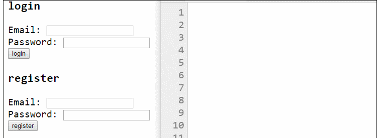
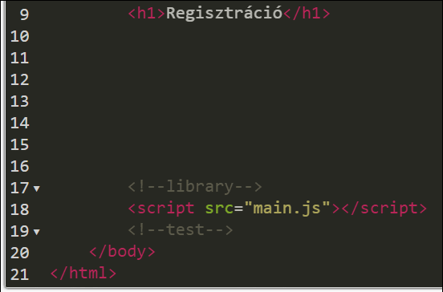
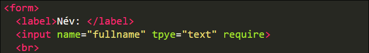

A vállalati webfejlesztés alapjai
A fejlesztői környezet kialakítása
Visual Studio Code
A Microsoft által fejlesztett IDE (Integrated Development Environment). Kiváló támogatást nyújt a Webes fejlesztésekhez, ingyenes és több ezer kiegészítő érhető el hozzá.
Git
A Git verziókezelő rendszert Linus Torwalds, a Linux atyja fejlesztette ki. A cél az volt, hogy akár több ezren is zökkenőmentesen tudjanak együtt dolgozni ugyanazon a programon. Mára már ez lett a közös munka egyik alapköve.
A Google Chrome és a Visual Studio Code telepítése
Google Chrome
Innen tudod letölteni: https://www.google.com/chrome/
Jelenleg a vezető böngésző. Asztali és mobil platformokon is a legtöbben ezt használják, ezért érdemes ezzel tesztelni a készülő weboldaladat, vagy webes alkalmazásodat.
Visual Studio Code
Innen tudod letölteni: https://code.visualstudio.com/
Jelenleg az egyik legjobb szerkesztő program, ha webes projekten dolgozol.
A Visual Studio Code szükséges bővitményeinek telepítése
Visual Studio Code Extensions
Ha kiegészítőket keresel hozzá, itt találsz: https://marketplace.visualstudio.com/VSCode
Ezekkel a kiegészítőkkel megtaníthatod a VSCode -ot új nyelvekre és technológiákra. Ha már telepítve van a program, akkor azon belül is eléred ezt a listát az "Extensions" gombra kattintva a bal oldalon.
Live Server Extension
Ezzel a kiegészítővel a mentés után azonnal látod az eredményt a böngészőben.
Az "Extensions" panelen írd be: "live server".
A hivatalon letöltő oldal: tovább az oldalra
Gyorsbillentyűk
Mellékeltem egy dokumentumot, ami taralmazza a munka gyorsítására való billentyűkombinációkat. Ezek arra jók, hogy nem kell egérrel a menüből kikeresned a parancsokat, hanem a megfelelő billentyűk lenyomására azok azonnal végrehajtódnak. Tipikusan ilyenek a menük megnyitása, panelek megynyitása vagy elrejtése, változók átnevezése, kód formázása és hasonlók.
Letöltés: Keyboard shortcuts for Windows
A Node.js telepítése
Innen tudod letölteni: https://nodejs.org/en/
Arra való, hogy programokat tudj futtatni Windowson vagy Linuxon, amiket JavaScript nyelven írtál. Erre régebben nem volt lehetőség, az ilyen kódokat csak a böngészőben lehetett futtatni.
Ellenőrzés
- Nyiss egy terminál ablakot.
- Program verziójának ellenőrzése: node -v
- Csomagtelepítő ellenőrzése: npm -v
A Visual Studio Code felhasználói felületének bemutatása
Visual Studio Code user interface
A felhasználói felület elemeinek részletes leírását itt találod (angol nyelven):
https://code.visualstudio.com/docs/getstarted/userinterface
A gyorsbillentyűk listáját az oldal alján megtalálod.
Szövegszerkesztés a Visual Studio Code segítségével
A videóban használt billentyűkombinációk
- Ctrl+D a szöveg következő előfrodulásának a kijelöléshez adása
- F2 a szöveg összes előfordulásának kijelölése
- Alt+Up/Down az aktív sor mozgatása felfelé vagy lefelé
- Alt+Shift+Up/Down az aktív megduplázása felfelé vagy lefelé
A Git telepítése
Git
Letöltő oldal (Windowshoz): https://git-scm.com/download/win
A Gitet Linus Torvalds fejlesztette, hogy tudja követni a Linux kernel fájljait. A következő célokat tűzte ki:
- Sebesség
- Egyszerűség
- Elágazások (branchek) támogatása
- Nagy projektek gyors és hatékony támogatása (pl. a Linux kernel)
- A teljes elosztottság
Parancsok listája
A Git parancssoros használatát fogjuk alkalmazni, ezért mellékeltem egy összefoglalót az elérhető parancsokról. Alább megtalálod.
Letöltés: Git Cheat Sheet
Ismerkedés a GitHubbal
GitHub
A GitHub címe: https://github.com/
A GitHub egy ingyenes Git szerver. Ide tudják az együtt dolgozó kollégák feltölteni a módosításaikat, és a GitHubon keresztül szinkronizálni a munkájukat.
Példák és dokumentáció
Egy GitHub repository klónozása
Mi az a klónozás?
Az a művelet, amikor egy meglévő Git repository tartalmát letöltöm a gépemre, és beállítom, hogy a Git figyelje a mappát.
A klónozás lépései
- A klónozható url kimásolása a GitHub oldaláról.
- Parancssor nyitása a sajátgépen.
- Betallózás a kívánt könyvtárba.
- Klón parancs: git clone < repo_url >
- Létrejön az új mappa, a neve megegyezik a repo nevével.
Egy GitHub repository forkolása
Forkolás
A forkolás nagyon hasonló a klónozáshoz, csak itt nem én hozom létre a kezdő tartalmat. Valaki másnak kiválasztom a repoját, majd egyszerűen rányomok a Fork gombra.
Így létrejön egy új repo a saját nevem alatt, de az eredeti repo tartalmával. Innen már én fejlesztem tovább az alkalmazásomat, a módosításaim nem lesznek hatással az eredeti, forkolt repora.
A fájlok különböző állapotai a fejlesztés során
Git - fájlok állapotai
Egy fájl négy állapotban lehet a gépünkön:
- Untracked: a Git nem törődik a fájllal. Ez újonnan létrehozott fájloknál jellemző.
- Unmodified: a Git követi a fájlt, és mi nem módosítottuk azt. Ez az újonnan letöltött fájlok állapota.
- Modified: a Git követi a fájlt, és mi módosítottuk.
- Staged: a Git követi a fájlt, mi módosítottuk, és a módosítás be fog kerülni az adatbázisba.
Státuszváltások

A git munkafolyamat tehát így néz ki új fájlok esetében:
- Létrehozunk egy új fájlt
- git add parancssal hozzáadjuk a staging area-hoz
- git commit paranccsal a staging area tartalmát hozzáadjuk az adatbázishoz
Meglévőek esetében pedig így:
- Módosítjuk a fájlt
- git add parancssal hozzáadjuk a staging area-hoz
- git commit paranccsal a staging area tartalmát hozzáadjuk az adatbázishoz
Dokumentáció
Egy fájl állapotának változása a gyakorlatban
Egy fájl életútja a Gitben
Részletesen bemutatom a videóban a lehetséges állapotokat egy fájlon. Fontos az állapotok megértése a későbbi munkához, ezért nézd végig.
Szinkronizálás
Ismerjük a commit parancsot, amivel a változtatásainkat tudjuk véglegesíteni a helyi gépünkön. Ideje ezeket feltölteni egy közös Git szerverre.
A közös munka alapját a következő három parancs jelenti:
Fetch - Mi történt mostanában?
A git fetch parancs megnézi, milyen változások történtek a szerveren. Ezeket a változásokat le is tölti, de nem nyúl hozzá az aktuális munkánkhoz, a working directory nem változik a hatására. Ezáltal nyugodtan kiadhatjuk bármikor a parancsot, nem lesz kellementlen mellékhatása.
Pull - Jöhet minden!
A git pull parancs letölti a változásokat a szerverről, és integrálja a saját munkánkba. Fontos különbség a fetch parancshoz képest, hogy a pull nem egy biztonságos parancs, változni fog a mappánk tartalma, ha kiadjuk. Mindig commitoljunk, mielőtt kiadnánk a pull parancsot!
Push - Megy a munkám!
A git push parancs feltölti a commitjainkat a szerverre. Jegyezzük meg, csak azok a változások mennek fel, amiket commitoltunk! Mielőtt pusholni próbálnánk, kérjük el a szervertől a változásokat a pull paranccsal!
Dokumentáció
A kialakított fejlesztői környezet bemutatása
Kristóf ügyes volt, belőtte a fejlesztőkörnyeztet.
Remélem, a videók és leírások segítettk neked abban, hogy te is olyan légy mint Kristóf :)
Egy statikus HTML oldal készítése és publikálása
A webfejlesztési projekt megismerése
Hogyan születik egy feladat?
Ezzel a videóval már három szereplősre bővült a történetünk.
Ma már egyre ritkábban találkozunk magányos farkasként tevékenykedő fejlesztőkkel. Egyre nagyobbak és egyre bonyolultabbak az alkalmazások, ezért szinte mindig csapatok dolgoznak rajtuk. Ha mégis egyedül dolgozik valaki, annak is az az oka, hogy egy kisebb részfeladatot lát el, amelyeket önállóan is le tud fejleszteni.
Tamás (Product Owner)
Az ő feladata összefogni a munkát, közvetíteni a megrendelő és a fejlesztők között, felügyelni a teljes munkafolyamat haladását, határidőit.
Józsi (Lead Developer)
A Tamástól kapott feladatokat részfeladatokra bontja, kiosztja az egyes fejlesztőknek, segíti a munkájukat. Rendszeresen konzultál Tamással.
Kristóf (Developer vagy Junior Developer)
A kiosztott, jól körülhatárolható feladatokat ő végzi el, rendszeresen egyeztet Józsival, általában heti rendszerességgel. Ha kitartó lesz és szeretnék, pár év múlva belőle is vezető fejlesztő lehet. Majd meglátjuk :)
1. feladat - A weboldal vázának elkészítése
A feladat pontosítása
Ha megfigyeled a videót, azt láthatod, hogy a feladat elhangzása után Kristóf rövid szondázó kérdésekkel pontosítja az elhangzottakat. Nem az a lényeg, hogy a vezető érti-e a feladatot, hanem hogy az értse aki el fogja készíteni. Ha valami nem egyértelmű, soha ne szégyelld megkérdezni.
A HTML nyelv áttekintése
Itt csak röviden összefoglalom, hogy miről is lesz szó.
A HTML nyelv bemutatása
HTML = Hyper Text Markup Language
A HTML szabványt aránylag ritkán frissítik.
Ennek előnye, hogy ha készítesz valamilyen webes alkalmazást, akkor azt akár évtizedek múlva is meg tudják nyitni egy böngészőben, mivel a szabvány visszafelé kompatibilis a legtöbb esetben.
Csatolok egy összefoglalót, amin az összes ismert HTML elem megtalálható:
Letöltés
Egy HTML dokumentum felépítése
HTML5 példaoldalak
Sokféleképpen neki lehet állni egy weboldal készítésének, de mindenekelőtt szükséged lesz egy alapvető HTML vázra. Az allábiakban linkelek neked pár oldalt, ahol erre láthatsz példákat:
Szövegformázó elemek - header
A címsorok neve h (heading) betűvel kezdődik.
A h1 a legnagyobb, utána csökkenő sorrendben egészen a h6-ig.
Általában a tartalom tagolására használjuk őket. A Google és a többi kereső is kiemelten figyelmbe veszi őket, ha például a címsor szövege nincs összefüggésben az alatta található tartalommal, a keresők hátrébb sorolják az oldalt, úgymond büntetik.
Szövegformázó elemek - em, strong
EM elem
Az <em> elem a tartalmát, hangsúlyozottan, kiemelt szövegként jeleníti meg.
Tipp: Jelenleg is szabványos elem, de szebb hatást érhetsz el CSS használatával.
STRONG elem
The <strong> elem is szövegek formázására való. Ez egy fontosabb szövegrészletet határoz meg.
Tipp: Szintén igaz rá, hogy szebb hatást érhetsz el CSS használatával.
Blokk és inline elemek
Blokk szintű elemek
A blokk szintű elemek mindig új sorban kezdődnek, és akkor sem kerülnek másik elem mellé, ha amúgy elférnének tőle. Azaz előttük utánuk sortörés van és általában nagyobb margóval rendelkeznek, távolabb vannak a többi elemtől.
Inline elemek
Mivel minden elem ami nem blokk szintű inline, ezért ezeket külön nem sorolnám fel. Amit meg kell róluk jegyezni, hogy sorban egymás mellé teszi őket a böngésző, egészen addig amíg kiférnek. Ha már nem, akkor egy új sorban folytatja a megjelenítésüket.
Dokumentáció
Blokk szintű elemek felsorolása
Az elkészített weboldal váznak a bemutatása
Mit látunk a videón?
Amikor egy feladattal készen vagy, főleg kezdőként stresszes tud lenni a bemutatása. Ilyenkor még bizonytalanabb az ember, ráadásul mindannyiunknak más a kritikatűrő képessége.
Azt szokták javasolni, hogy legyünk nyitottak a jobbító szándékú megjegyzésekre. A vezető is volt kezdő, akinek be kell számolnunk a munkánkról. Nem az a célja, hogy magbántson minket, hanem hogy a közös munka sikeres legyen. Ha ezeket az alapvető dolgokat mindkét részről betartják, akár ilyen jó hangulatú is lehet egy demo, mint ahogy a videón látod.
2. feladat - A weboldal képeinek kihelyezése
Ahhoz, hogy Kristóf sikeresen elvégezze a feladatot, új ismeretekre lesz szüksége.
A képek kezelése mellett, nem árt ha tudja kezelni a Chrome DevTools-t, ahol le tudja ellenőrizni a munkáját és megkeresheti az esetleges hibák forrását is.
A Chrome DevTools használata
Chrome DevTools
Megnyitás:
F12
A Chrome DevTools segít neked abban, hogy át tudd tekinteni az alkalmazásod felépítését, vagy mag tudd keresni a hibákat. Ha hibásan működik valami, semmiképp sem szabad megijedni. Meg kell nyitni a megfelelő fejlesztőeszközt és megkeresni a hiba forrását. A hibákból mindig tanulunk valamit, így azok hasznosak a számunkra.
A letöltéseknél megtalálod az alapvető panelek bemutatását:
chrome_devtools.png
333 kB
Ismerkedés az URL fogalmával
URL - Uniform Resource Locator
A tartalmak az interneten bárhol lehetnek. Hogyan találjuk meg őket? Ehhez kell az URL, ha ismerjük az adott oldal vagy kép vagy film vagy bámi URL-jét, akkor a böngészőbe beírva meg tudod nézni vagy le tudod tölteni.
Fontos, hogy minden erőforrásnak legyen egyedi azonosítója. Erre való az URL.
Az URL részei
Egy példa:
https://www.training360.com/tanfolyami-naptar
- A https a használandó
protokoll. A protokoll neve után kettőspont (:) írandó.
- A training360.com a célgép
tartományneve. Ez elé két perjel (//) írandó.
- A 443 a célgép azon hálózati
portszáma, amin kérésünket várja; ez elé kettőspont (:) írandó. Ezt a részt gyakran teljesen elhagyhatjuk, például esetünkben a
HTTPS protokoll alapértelmezett portszáma a 443.
- A /tanfolyami-naptar a kért elérési út a célgépen. Ez a rész mindig a perjellel (/) kezdődik.
Listák használata
Listák
Felsorolások megjelenítésére használhatod.
UL - Unordered List
Elem: <ul></ul>
Lista elemei: <li></li>
OL - Ordered List
Elem: <ol></ol>
Lista elemei: <li></li>
Dokumentáció
Képek elhelyezése a weboldalon
Image elem
Elem: <img>
Képek megjelenítésére való. Self closed elem, azaz a végére nem kell másik </img> tag. Az src attribútum adja meg, hogy honnan kerüljön a kép betöltésre.
A képek méretezése és alakítása már kicsit bonyolultabb dolog, amikor a CSS formázásokat vesszük, majd kitérek rá.
Dokumentáció
https://www.w3schools.com/tags/tag_img.asp
Linkek elhelyezése a weboldalon
Anchor elem
Elem: <a></a>
Kötelező attribútumok:
href: az URL, ahová kattintás után jutsz.
Dokumentáció
https://www.w3schools.com/tags/tag_a.asp
Anchor elem
Elem: <a></a>
Kötelező attribútumok:
href: az URL, ahová kattintás után jutsz.
Dokumentáció
https://www.w3schools.com/tags/tag_a.asp
Az XML jellegű struktúrák lényege, hogy az elemeket egymásba lehet ágyazni. Így már beszélhetünk szülő és gyermek elemekről, aszerint, hogy melyik elem melyikbe van beágyazva.
Dokumentáció:
https://www.w3schools.com/html/html_elements.asp
A képekkel kiegészített weboldal bemutatása
Kristóf ügyes volt, szépen halad a webfejlesztővé válás rögös, de izgalmas útján.
3. feladat - Az étlap elkészítése
Az étlapot most táblázatos formában kell elkészítenie Kristófnak.
Lenne rá más megoldás is, de így legalább meg tudsz te is ismerkedni a táblázatokkal.
Táblázat készítése
Table elem
Elem: <table></table>
A táblázatokat strukturált adatokhoz használjuk. Vannak sorok, oszlopok, és általában ugyanazok az adatok szerepelnek minden sorban.
Dokumentáció
https://www.w3schools.com/html/html_tables.asp
Egy táblázat részei
Egy táblázat olyan mint egy Excel tábla. Sorokból és oszlopokból áll, ezek találkozásánál vannak az adatcellák. Mindegyikhez vannak külön HTML elemek:
Fejléc: <thead></thead>
Sor: <tr></tr>
Fejléc cella: <th></th>
Cella: <td></td>
Dokumentáció
https://www.w3schools.com/tags/tag_table.asp
Sorok és oszlopok összevonása
Rowspan és Colspan
A nevükből adódóan sorok és oszlopok összevönására valók. Ezek attribútumok, tehát nem önálló elemek, hanem a td vagy a th elem tulajdonságai.
Dokumentáció
Az elkészített oldal publikálása és megosztása
Publikálás
Ahhoz, hogy az emberek meg tudják nézni a webalkalmazásodat, szerverre van szükséged. Ha ilyennel nem rendelkezel, használhatsz felhő szolgáltatást is, sok cég kínál ingyenes tárhelyet. Mi a github pages nevűt használjuk a videóban, de lényeges különbség nincs közöttük abból a szempontból, hogy fel kell tölteni a fájlokat és rájuk mutatni egy URL-lel, ezután az emberek elérik az alkalmazást.
Dokumentáció
https://help.github.com/en/github/working-with-github-pages
Az étlappal bővített weboldal bemutatása
Kristóf már magabiztosan demózza a munkát.
Az elkészített weboldal átadása
Végül a dolgok visszatérnek oda, ahonnan indultak, Józsinak is be kell mutatni a projekt állását Tamásnak.
A CSS alapjai
A megjelenítéssel kapcsolatos követelmények
Nem elég, ha egy alkalmazás jól működik. Az appokat legtöbbször nem a profi működés, hanem a jó megjelenés adja el. Ez így van a mi projektünkkel is.
1. feladat - A weboldal szövegeinek formázása
Kristófnak új ismereteket kell elsajátítania.
Az oldalak formázásához külön nyelvet használnak, CSS a neve.
A CSS áttekintése
CSS - Cascading Style Sheets (Kaszkádolt stíluslap)
Ahhoz, hogy megértsük, milyen okból kifolyólag lett szükség a CSS-re, elég magának a HTML nyelvnek a történetét ismernünk. A HTML arra való, hogy egyszerű tartalmat tegyünk közzé a neten. Régen, amikor az internet nem volt ilyen széles körben elterjedt, csak kutatóintézetek, egyetemek használták, ezzel nem is volt probléma. Azonban ahogy az internet egyre nagyobb nyilvánosságot kapott, és ma már bárkinek lehet honlapja, egyre nagyobb lett az igény az oldalak egyedibbé/egyénibbé tételére.
Emiatt az újabb HTML szabványokba egyre több és több olyan tulajdonságot tettek, melyek a formázásra, megjelenésre vonatkoztak. Idővel aztán a HTML fájlunk több formázó utasítást, mint taget tartalmazott. Ezáltal a kódunk mérete jócskán megnőtt, és átláthatatlanabb lett. Így felmerült az igény, hogy a tartalmi és a megjelenésre vonatkozó rész el legyen különítve egymástól. Ezért létrehozták a CSS szabványt. Az oldalunk tartalma maradt továbbra is a HTML fájlban, azonban minden formázást CSS segítségével valósítunk meg. (Lehetőleg, ha nem is kötelező jelleggel, de külön fájlban.)
Tehát a CSS arra szolgál, hogy megadjuk weblapjaink stílusát, beleértve a designt, az elrendezést, a különböző médiákhoz igazodó megjelenítést. Stílus definiálható magában a HTML állományban, de lehet külső állományban is. Az utóbbit használva könnyebb áttekinteni, kezelni, és hasznos a közös munkánál is.
Az Inline stílusok
Inline CSS
Attribútum: style
Ahogy a nevük is mutatja, az inline stílusokat a sorban, a HTML elemünk attribútumaként adjuk meg.
Így gyorsan testre tudjuk szabni az elemeket, de nehéz lesz karbantartani a stílusokat, ha valami változik, az összes elemben feül kell írni egyesével.
Dokumentáció
https://www.w3schools.com/css/css_howto.asp
Egy CSS stíluslap elkészítése
CSS stíluslap
A CSS stíluslap egy külön fájl, amiben leírhatod az oldal megjelenését.
Mivel a site builder és a designer legtöbbször nem ugyanaz a személy, így praktikus, ha a stílusok külön fájlokban vannak leírva.
Dokumentáció
https://www.w3schools.com/css/css_intro.asp
A CSS szintaxisa és felépítése
Egy tipikus CSS direktíva felépítése
A szelektor mondja meg, hogy melyik elemre legyen a parancs alkalmazva. A deklarációk egy tulajdonság nevéből és az értékéből állnak, pontos vesszővel elválasztva egymástól.

Képpontok - px
PX - képpont
Mivel a monitor képe képpontokból - pixelekből áll össze, kézenfekvő, hogy ebben adjuk meg a dolgok méretét. Viszont gondolni kell arra is, hogy nem minden monitoron, kijelzőn vannak egyforma távolságban egymástól a képpontok.
A különböző betűtípusok
A font-family attribútum
A karakterek megjelenése betűtípus fájlokban van meghatározva. Például ilyenek a .ttf fájlok Windows operációs rendszer esetén.
Igen ám, de mi van akkor, ha olyan betűtípust szeretnék használni, ami nincs telepítve az adott számítógépen? Ennek a problémának a megoldására van a "fallback system", ami azt jelenti, hogy több betűtípust is megadhatsz felsorolás szerűen, és ha az egyiket nem találja a böngésző, akkor megpóbálkozik a következővel.
Dokumentáció
https://www.w3schools.com/cssref/pr_font_font-family.asp
Saját betűkészletek használata
@font-face
Ezzel a CSS utasítással új betűtípust tudsz meghatározni. Meg kell adnod a nevét és a helyet, ahonnak a böngésző be tudja tölteni. Nem fontos, hogy a név egyezzen a betűtípus fájl nevével, érdemes rövidebb, egyszerűbb nevet adni neki.
Dokumentáció
https://www.w3schools.com/cssref/css3_pr_font-face_rule.asp
Szövegformázás
Szövegek formázása
font-family: a betűtípus beállításafont-style: normal|italic (normál vagy dőlt)font-weight: normal|bold vagy 100 - 900-ig számokkal megadva a betűvastagságfont-size: px|em|rem|vw|% a betűméret megadásacolor: a betűszín
Dokumentáció
Külső betűtípusok használata - Google Fonts
Google Fonts
URL: https://fonts.google.com/
Egy olyan, közel 1000 ingyenes betűtípust tartalmazó válogatás, aminek nagyon könnyű a használata.
A formázott szöveggel ellátott weboldal bemutatása
Mivel részfeladatról van szó, itt Kristóf csak Józsival beszéli meg a részleteket.
2. feladat - A weboldal hátterének és elrendezésének kialakítása
Sosem könnyű eldönteni, hogyan is nézzen ki egy alkalmazás. Hol van a határ a prakrikusság és a szép megjelenés között?
Ebben a Story-ban a színekkel, hátterekkel és az elrendezéssel fog trükközni Kristóf barátunk.
Ismerkedés az id-val
ID
Jele a CSS-ben: #
A HTML szabvány szerint minden elemnek adhatsz egyedi azonosítót az oldalon, ez az ID. Ezt az ID-t a CSS fájlban, amikor kiválasztasz egy elemet, kettőskereszttel jelölheted.
Ha például az id az, hogy head, akkor a szelektora az lesz a CSS-ben, hogy #head.
Fontos korlátozás, hogy egy ID-t csak egyszer használhatsz, mert az egyértelműen tartozik egy elemhez.
Az alábbi animáción követheted, ahogyan ID alapján megformázom a div-eket:
A HTML elemcsoportok formázása osztályok segítségével
Class selector
Jele: .
Elemek kiválasztása az osztály alapján.
Nézd meg az alábbi példát, ahol a diveket az osztály alapján választom ki. Mivel mind a kettő ugyanahhoz az osztályhoz tartozik, ha az osztályra adom meg a stílusokat, automatikusan mind a kettő megkapja őket:
Tartalomtagolás div és span segítségével
DIV
A <div> egy osztást (division) hoz létre az oldalon. Blokk szintű elem és alapból nagyon kevés beállítása van, ezért a designerek is szeretnek vele játszani.
SPAN
A div-től eltérően nem blokk, hanem inline elem. Leginkább akkor hasznos, ha egy szövegből egy részletet szeretnél másképp megformázni.
Dokumentáció
A HTML elemek formázása - margin, border, padding
CSS Box Model - hajtogassunk dobozt
Az úgynevezett doboz modell azt mutatja meg, hogyan épülnek fel az elemek, és hogyan helyezkednek el egymáshoz képest a böngészőben.
Margin
Kívülről befelé haladva az első eleme a box-modelnek a margin. Ez nem része konkrétan az elemnek, ez az elhagyás az elem körül. Magyarul margónak is nevezhetjük. A legtöbb elem rendelkezik alapértelmezett marginnal, ezt tudjuk a saját CSS szabályainkkal felülbírálni.
Meg lehet adni oldalanként vagy egy utasítással is:
- oldalankénti megadás:
margin-top, margin-right, margin-bottom, margin-left - megadás egyben:
margin: top right bottom left - megadás páronként:
margin: top-bottom right-left
Az alábbi példában néhány elem margin tuladonságát módosítom:
Border
A következő a border, vagy szegély. Ha nem adjuk meg, akkor a vastagsága 0px lesz.
Az elem méretét növeli a border vastagsága, azaz ha 2px a border, akkor az elem minden irányban 4 pixellel szélesebb lesz.
Megadása:
- egy utasítással:
border: style width color; - sarkak kerekítése:
border-radius: 10px; - oldalanként:
border-left: style width color; - tulajdonságonként:
border-style, border-width, border-color
A példában egy div elemet formázok:
Padding
Itt már az elemen belül járunk, úgy is mondhatnám, hogy átléptük a határt (border). Tehát ez már az elem belső padkája, az elemen belül ennyivel beljebb kezdődik a tartalom.
Az elem méretét akkor növeli, ha a box-sizing: border-box; nincs beállítva.
Megegyezik a margin megadásával, ezért egy példát mutatok inkább:
Dokumentáció
A HTML elemek formázása - box-shadow
Box-shadow
A box-shadow az elemet körülvevő vetett árnyék. A CSS3 hozta be. Az alábbi séma szerint lehet megadni, amit a videóban részletesen elmagyarázok:
box-shadow: none|h-shadow v-shadow blur spread color|inset|initial|inherit;
A megértést az alábbi példa is segíti:
Dokumentáció
Box shadow
Relatív mértékegységek használata
%, em, rem
%: a méretet a befogadó elem méretének százalékában adja meg.em: a betűméret, 1 esetén megegyezik, de például az 1.5 másfélszeres.rem: root em, nem a szülő elem em-jét nézi, hanem a <html> elemét.
Láthatóság és megjelenítés
Display vs. visibility
display
A display tulajdonság az elem megjelenítését befolyásolja. Azt mondja meg, hogy a böngészőnek figyelembe kell-e vennie az elemet az oldal megjelenítésekor, és ha igen, akkor hogyan.
Használata: display: inline|block|flex|inline-block|none;
A none érték azt írja elő, hogy nem kell megjeleníteni az elemet. A megjelenített oldalon a böngésző nem foglal helyet az elemnek, ezért a felhasználó nem láthatónak érzékeli.
visibility
Ezzel szemben a visibility csak a láthatóságot módosítja. Tehát ha elrejtjük vele az elemet, akkor a helyfoglalás megmarad.
Használata: visibility: visible|hidden|collapse|initial|inherit;
A példában mindkettőt megmutatom:
Dokumentáció
http://www.w3schools.com/css/css_display_visibility.asp
Az egyes HTML elemek pozicionálása
Position - helyezkedjünk kicsit!
Azt adhatjuk meg vele, hogyan legyen kalkulálva az elem pozíciója.
position: static; ez az alapértelmezett, a helyzet a többi elemtől függ.position: relative; a helyzet a saját normál pozíciótól függ.position: fixed; a böngészőablakhoz képest helyezkedik el.position: absolute; a helyzet az első nem static elemtől függ.
Egy jó példa a fentiekre:
A színek megadásának különböző módjai - RGBA
RGB (red, green, blue) színmegadás
A monitor három alapszínből keveri ki az összeset többit.
Red (vörös), Green (zöld), Blue (kék)
A színek intenzitását egy 256-os skálán lehet megadni, 0-255-ig. (2 a 8-adikon).
Összesen 256 * 256 * 256 színnel gazdálkodhatunk, azaz több mint 16 millióval.
Példul:
- vörös:
rgb(255, 0, 0) - zöld:
rgb(0, 255, 0) - kék:
rgb(0, 0, 255) - sárga:
rgb(255, 255, 0) - fehér:
rgb(255, 255, 255) - fekete:
rgb(0, 0, 0)
Átlátszóság (alpha csatorna)
Ha azt szeretnénk, hogy az átlátszóság mértékét is tudjuk állítani a színnel együtt, akkor egy negyedik értéket is megadunk: ez az alpha csatorna, ami 0-1 között lehet. Ekkor rgba lesz a zárójel előtt, például így:
rgba(255, 128, 44, 0.2)
Ez csak minimálisan látszik át:
rgba(255, 128, 44, 0.95)
Ez pedig egyáltalán nem látszik, tejlesen átlátszó:
rgba(255, 128, 44, 0)
Példák
A színek megadásának különböző módjai - HEX
Hexadecimal (a 16-os számrendszer szépségei)
Gyakorlatilag a logikája megegyezik az RGB színmegadással, csak nem tízes, hanem tizenhatos számrendszerben adjuk meg a színek fedettségét. Az öreg rókák szeretik, mert kevesebbet kell írni és ezt szokták meg. :)
Pár átváltás a kettő között:
rgb(255, 255, 255) = #FFFFFF fehérrgb(66, 134, 244) = #4286f4rgb(244, 92, 66) = #f45c42rgb(0, 0, 0) = #000000 fekete
Az alábbi példában a bal oldalt figyeld, látszik a kettő egymás alatt!

Próbáld ki te is!
A weboldal hátterének formázása
Background
A background az, amivel az oldal vagy bizonyos elemek hátterét tudod formázni.
Dokumentáció
https://www.w3schools.com/cssref/css3_pr_background.asp
A stílusokkal formázott háttér és elrendezés bemutatása
Ez húzós volt, de Kristóf vette az akadályt.
Remélem te is jól haladtál!
3. feladat - A weboldal megjelenésének finomhangolása
Az alkalmazás olyan, mint a ház, azt mondják soha sem készül el teljesen.
Az utolsó fázisban finomhangoljuk a megjelenést és mélyebben megismerkedünk a CSS szelektorokkal.
A szelektorok vizsgálatának előkészítése
Ahhoz, hogy tudjuk tesztelni a szelektorokat, előkészítem a HTML forrást.
A többszörösen egymásbaágyazott szelektorok
Specify szelektor
Előfordul, hogy egy szelektorral nem tudod pontosan kijelölni az elemet. Ekkor pontosabban kell rámutatnod az elemre, pontosabban kell specifikálnod. Egyszerre több szelektort használsz, például:
a.menu-link:hover
vagy durvábban
input.form-control[type=email]:focus
A szelektort egybeírjuk, ha egy elemre vagy elem-csoportra vonatkozik.
Egymásba ágyazott elemek kiválasztása
Van, hogy csak egy bizonyos elemen belül szeretnél dolgozni. Ekkor először a szülőt kell megadnod. Például a login azonosítójú formon belüli összes input elem megadása:
form#login input
> jel csak a közvetlen gyerekeket jelöli, az unokákat már nem ;)
form#login > input
A példában először az egyik, majd a másik formban dolgozom:

Dokumentáció
CSS szelektorok
Az attribútum szelektor
Attribute szelektor
Az elemet valamilyen tulajdonsága alapján választja ki. A tulajdonság nevét és értékét egyenlőségjellel elválasztva szögletes zárójelek között adjuk meg. Például:
[type='button']
Ha nem adunk meg értéket, akkor azokat az elemeket jelöli ki, ahol a tulajdonság létezik. Például:
[disabled]
Jele:
[ ]
Előnye: külön formázást adhatunk meg egy elemnek eltérő tulajdonságok esetén.
Hátránya: böngésző támogatása nem teljesen egységes.
Dokumentáció
Szövegek helyettesítése a szelektorokban
Szövegek helyettesítése CSS szelektorokban
[attribute^=value]
Példa:
a[href^="https"]
Kiválasztja az összes olyan elemet, aminek az adott attribútuma a megadott szöveggel kezdődik.
[attribute$=value]
Példa:
a[href$=".pdf"]
Kiválasztja az összes olyan elemet, aminek az adott attribútuma a megadott szöveggel végződik.
[attribute*=value]
Példa:
a[href*="training360"]
Kiválasztja az összes olyan elemet, aminek az adott attribútuma a megadott szöveget bárhol tartalmazza.
Dokumentáció
https://www.w3schools.com/cssref/css_selectors.asp
Pszeudo szelektorok
Pseudo szelektorok
A pseudo szó hamisat jelent. Azért ez a nevük, mert olyan tulajdonságokra vonatkoznak, amelyeket a böngésző automatikusan rendel az elemekhez. Például ha az elem fölé visszük az egeret, vagy kattintottunk már egy linkre. Az eredeti szelektor után kell kettősponttal írni, például:
a:hover vagy a:visited
Fontosabb pseudo szelektorok
:hover - ha az elem fölé viszik az egeret,:visited - azok a linkek, amelyekre már kattintottak,:active - ha a felhasználó használ egy elemet, mondjuk rákattint,:focus - elsősorban input mezőknél, ha éppen használjuk,:first-child - a szülő elem első gyereke,:last-child - a szülő elem utolsó gyereke,:nth-child(n) - az n-edik gyereke a szülő elemnek,:empty - olyan elem, aminek nincs gyereke, azaz nem tartalmaz beágyazott elemet,:checked - a kiválasztott checkbox,:disabled - letiltott elem.
Az alábbi példában bemutatok néhányat a fentiek közül:
Dokumentáció
https://www.w3schools.com/cssref/css_selectors.asp
A finomhangolt weboldal bemutatása
Most már kezd egészen elfogadható kinézete lenni az oldalnak.
A valóságban ebbe a folyamatba be szoktak vonni designereket is, úgy még ennél is jobb lehet a végeredmény.
A formázott weboldal átadása
Miután Tamáson is átmennek a módosítások, jöhet az ügyfél általi véleményezés is.
Űrlapok készítése
Az űrlappal kapcsolatos igények megfogalmazása
Egy jó űralpot összerakni nem is olyan könnyű dolog.
Meg kell határozni a gyűjtendő adatok körét, az űrlap felépítését, megjelenését és azt is, hogy az adatok hová kerülnek?
1. feladat - Egy egyszerű űrlap elkészítése
Azt mondják, űrlap nélkül nem weboldal a weboldal.
Ezért előre látható volt, hogy eljön a nap Kristóf életében is, amikor meg kell barátkoznia az űrlapokkal.
Az űrlapok áttekintése
Az űrlapok haszna
A label
Form - ahol az adat kezdődik
Űrlapot a form elem használatával hozhatunk létre.
Az űrlapon belül vannak a beviteli mezők, listák.
Egy alapvető űrlap így néz ki:

Input és label
Az input elem az adatok kézi bevitelére szolgál.
Az input mezőket címkével láthatjuk el, ez a label elem.
Az input elem fontos tulajdonságai:
name: az adat neve, későbbi azonosításhoz kell.type: az adat típusa, lehet text, password, radio stb.
Példa különböző típusú input elemekre
Dokumentáció
Útmutató az űrlapokhoz
A checkbox és a radio
A checkbox és a radio szintén adatbevitelre szolgál. Ebben az esetben a felhasználónak nem kell beírnia semmit, csupán választania kell a felkínált lehetőségek közül.
Checkbox - csekkoljunk be!
Egy input elem, amelynek a típusa: checkbox. A checkbox önálló elem, ha bepipáljuk az azt jelenti, hogy igent mondtunk a kérdésre.
Először a létrehozását mutatom meg, utána a megjelenését:
Radio - egyszerre csak egyet!
Szintén egy input elem, de mindig többet használunk egyszerre. Az alapvető különbség a radio és a checkbox között, hogy a radio esetében több választási lehetőséget kínálunk fel, amelyek közül csak egyet lehet választani. Pl. neme, autó színe.
A radio esetén fontos, hogy a name tulajdonság az adott csoportba tartozó öszes radio-nál azonos legyen:
A value tulajdonság
Value, azaz a mező értéke.
Ha beállítjuk a value atrribútumot, alapértelmezett értéket adhatunk az input elemnek:

A checked tulajdonság
Ha bejelölünk egy radio vagy checkbox elemet, felveszi a checked tulajdonságot. Viszont ezt nem csak automatikusan veheti fel, mi is megadhatjuk, hogy alapból be legyen jelölve. Csak hozzá kell adnunk az elemhez:
Dokumentáció
Checkbox
Fieldset
fieldset
Két fontos tag, amit a formok kapcsán még érdemes megemlíteni: a fieldset és a legend.
A fieldset segítségével csoportosítani tudjuk a logikailag összetartozó űrlapelemeket, a legend segítségével pedig ezekhez a csoportokhoz tudunk feliratot készíteni.
A legend mindig a fieldset elemen belül kell hogy legyen!
<form>
<fieldset>
<legend>Personalia:</legend>
Name: <input type="text"><br>
Email: <input type="text"><br>
Date of birth: <input type="text">
</fieldset>
</form>
Dokumentáció
https://www.w3schools.com/tags/tag_fieldset.asp
Az elkészített űrlap bemutatása
Most még csak az űrlap váza készült el, a működés és a megjelenés még hátravan.
2. feladat - Űrlap formázása Bootstrap segítségével
Ha eléggé felkészültek vagyunk és időnk is van rá, nekiállhatunk saját CSS-t írni minden elemre. Viszont a legtöbbször erre nincs idő, így valamilyen előre megírt CSS keretrendszert érdemes használni.
A Bootstrap megismerése
Bootstrap - ugorjunk a bakancsba!
A CSS keretrendszerek gyakorlatilag előre megírt .css fájlokból állnak. A mi dolgunk, akik használjuk őket, csak annyi, hogy a HTML elemeket az előre meghatározott osztályokhoz rendeljük. Most megmutatom neked a Bootstrap keretrendszer beállítását egy oldalra.
Használatba vétel
Több módon is beillesztheted az oldaladba a Bootstrap keretrendszert.
CDN használata
A CDN a tartalom továbbító hálózat rövidítése.
Ha lekérsz rajta keresztül egy fájlt, akkor igyekszik mindig a legközelebbi
szerverről visszaküldeni neked, hogy minél gyorsabban megkapd. Viszont hátránya,
hogy nem garantálja hogy a fájl mindig fent lesz a szervereden, így tesztelési
vagy oktatási célra alkalmas, éles rendszerhez pedig saját vagy fizetett CDN ajánlott.
Négy fájlra lesz szükséged, a css-t a fejlécbe, a js fájlokat a body végére célszerű elhelyezni:
<link rel="stylesheet" href="https://stackpath.bootstrapcdn.com/bootstrap/4.4.1/css/bootstrap.min.css" integrity="sha384-Vkoo8x4CGsO3+Hhxv8T/Q5PaXtkKtu6ug5TOeNV6gBiFeWPGFN9MuhOf23Q9Ifjh" crossorigin="anonymous">
<script src="https://code.jquery.com/jquery-3.4.1.slim.min.js" integrity="sha384-J6qa4849blE2+poT4WnyKhv5vZF5SrPo0iEjwBvKU7imGFAV0wwj1yYfoRSJoZ+n" crossorigin="anonymous"></script>
<script src="https://cdn.jsdelivr.net/npm/popper.js@1.16.0/dist/umd/popper.min.js" integrity="sha384-Q6E9RHvbIyZFJoft+2mJbHaEWldlvI9IOYy5n3zV9zzTtmI3UksdQRVvoxMfooAo" crossorigin="anonymous"></script>
<script src="https://stackpath.bootstrapcdn.com/bootstrap/4.4.1/js/bootstrap.min.js" integrity="sha384-wfSDF2E50Y2D1uUdj0O3uMBJnjuUD4Ih7YwaYd1iqfktj0Uod8GCExl3Og8ifwB6" crossorigin="anonymous"></script>
Saját kiszolgáló
Ha a fájlokat a saját szervereden akarod elhelyezni, akkor először le kell őket töltened. Majd kicsomagolni a megfelelő helyre.
Azt javaslom, hogy mindig készíts mondjuk egy lib mappát, ahol azokat a fájlokat tárolod, amelyeket nem fogsz módosítani. Így elkerülheted hogy összekeveredjenek a saját munkáddal és sokkal könnyebb lesz karbantartani a frissítéseket.
A Bootstrap letöltése:
bootstrap-4.4.1.zip
2,8 MB
Csomagkezelők használata
Léteznek automatikus csomagkezelők, amelyek egy paranccsal rávehetők, hogy letöltsék a külső alkalmazásokat. Ilyenek például:
NPM.
A példában távolról ágyazom be a fájlokat:
Eszköz szélessége
A Bootstrap esetében fontos, hogy mindig igazodik az ablak szélességéhez, azaz a vízszintes görgetést elkerüli. Így mobilon is könnyen használható lesz az oldal. Ehhez viszont be kell állítani egy meta elemet az oldal fejlécében:
<meta name="viewport" content="width=device-width, initial-scale=1">
A mobil eszközöknek különböző a felbontása, ezért a gyártó megadja, hogy hogyan skálázódjon az oldal az ő eszközén. Mert hiába QHD azaz négyszeres FullHD a felbontás, attól még a kijelző kicsi. Ezt követi le a Bootstrap.
Dokumentáció
GetBootstrap
A Bootstrap rácsrendszere
Bootstrap - rácsrendszer
Hogy gyorsabb legyen az egyes elemek szélességét megadni, a Bootstrap bevezette az úgynevezett rácsrendszert. Ez arra való, hogy az elemek szélessége százalékosan igazodjon a befogadó ablak szélességéhez.
Row - (sor)
Úgy kell elképzelni ezt a rácsrendszert, mint egy táblázatot. Vannak benne sorok és oszlopok, ahol találkoznak ott vannak a cellák. Ha új tartalmat szeretnél létrehozni, akkor először mindig kell egy sor, amibe majd beteszed az oszlopokat.
Ez alapvetően egy div, amit a row osztályhoz kell rendelned:
<div class="row"></div>
Col - column (oszlop)
Tehát az oszlopokat soha ne önmagukban használd, hanem mindig egy soron belül.
Ezek is div-ek, és col-* kezdetű osztályokhoz kell rendelned őket.
A Bootstrap minden sort 12 oszlopra oszt fel!
Öt méretosztályt különböztet meg az oldal szélessége alapján:
Megjegyszés: ha megnézed a képet, látod hogy melyik osztály melyik méret esetén működik.
Oszlopok száma
Az adott oszlopszélességet úgy tudod megadni, hogy az előtag után írod az oszlopok számát.
- A
col-sm-12 azt jelenti, hogy telefon méretben teljes szélességű. - A
col-xl-3 nagy képernyőn 1/4 szélességű, mert a 12/3 = 4. - A
col-md-6 col-sm-12 közepes képernyőn 1/2, kicsin pedig teljes szélességű.
Mobile first - elsősorban telefonra
A Mobile first kifejezés azt jelenti, hogy ha csak a telefon méretre adod meg az oszlopok szélességét, akkor az összes nagyobb méret esetén is az marad érvényben.
De ha mondjuk megadod col-md esetén is az oszlopok számát, de col-lg esetén nem, akkor az lg esetén is az md marad érvényben. Tehát alulról felfelé nézi a beállításokat, mindig a kisebb az erősebb.
Dokumentáció
Bootstrap grid system
A navigációs sáv - Navbar
Navbar
Ez az oldal tetején található navigációs sáv slang-es neve. Most villámgyorsan fogunk egyet készíteni a Bootstrap leírása alapján.
Példakód
Először be kell szerezned a példakódot, ami előre meg van írva, csak be kell illesztened a forráskódodba. Érdemes egyből az oldal tetején, azaz rögtön a <body> tab után elhelyezni, mivel általában a navigációval kezdődik az oldal.
Menj a bootstrap oldalán a navbar-hoz:

Megjegyzés: a kód jobb felső sarkában van a Copy gomb, azzal gyorsan ki tudod másolni a vágólapra.
A navbar részei
Brand
Ez a cég vagy a szolgálatás fantázianeve. A brand. Ez van rögtön balról az első helyen. Érdemes tehát átírni a kívánt névre.
Állítsd be a href="/" attribútumot, mivel a brand szövegére kattintva általában az emberek a főoldalra szeretnének jutni.
Linkek
A linkek közül az első általában a Home feliratú, ennek a href="/" beállítást célszerű adni, ahogy a brand-nek is.
<div class="collapse navbar-collapse" id="navbarSupportedContent">
<ul class="navbar-nav mr-auto">
<li class="nav-item active"> <a class="nav-link" href="/">Home <span class="sr-only">(current)</span></a></li>
...
</ul>
</div>
Ha megnézed a kódot, látod hogy a linkek egy ul-ben vannak, azon belül pedig természetesen li elemekben.
Ha hozzárendeled az li elemet az active osztályhoz, akkor sötétebb színű a szöveg, amivel jelzi hogy éppen ezezn az oldalon van a felhasználó.
Le is tilthatsz egy linket, ha az a elemet a disabled osztályhoz rendeled.
Search
Igény esetén meg lehet hagyni a kereső blokkot is, ami egy beviteli mezőből és egy gombból áll. De ezt csak akkor hagyd meg, ha meg is csinálod, hogy működjön, mert nincs idegesítőbb annál, ha nyomják a gombot mint süket az ajtót és nem történik semmi :)
Dokumentáció
Bootstrap Navbar
Bootstrappel formázott értesítések
Alert
Ezek figyelemfelkeltő üzenetek a felhasználók számára. Egyébként egyszerű div-ek, csak a Bootstrap szépen megformázza őket. Legtöbbször valamilyen művelet után használhatod őket, vagy ha mondjuk hibásan akar a felhasználó beküldeni adatokat.
Fajtái
Használata
Két osztályt kell használnod. Az első alapvetően formázza meg az alertet, a második pedig a színét állítja be.
A kódban az összes színösszeállításra van példa, ezek közül leggyakrabban a primary, success, danger, esetleg a warning osztályúakat fogod használni.
Megjegyzés: vigyázz, mert mint minden div, ez is blokk szintű. Ha nem akarod, hogy teljes szélességű legyen, ted egy keskenyebb col-ba.
Dokumentáció
Bootstrap Alerts
Bootstrappel formázott táblák
Bootstrap - táblásítsunk!
A táblázatok esetében gondolom már belefutottál abba, hogy nem egyszerű szépen formázni őket. A Bootstrap ennek a terhét is leveszi a válladról.
Table elem
A Bootstrap-nek meg kell mondani, melyik táblákat formázza meg.
Ezt a table osztály hozzáadásával teheted meg.
Csak akkor fogja megfelelően formázni a táblázatodat, ha <thead></thead> és <tbody></tbody> elemekre bontod.
A thead-en belül tr és th elemekkel dolgozz, a tbody-ban pedig a megszokott módon, tr és td elemekkel.
Táblák fajtái
Többféleképp meg tudod jeleníteni a táblázatokat, csak a megfelelő osztályt kell alkalmaznod hozzá:
- Csíkozott (minden második sor kicsit sötétebb):
table-striped - Szegélyezett (látszanak a cellák szegélyei):
table-bordered - Hovered (a sor beszürkül, ha fölé viszed az egeret):
table-hover - Tömör (kisebb paddingot hagy a cellákon):
table-sm
A fenti osztályokat szabadon kombinálhatod is egymással.
Sorok vagy cellák kiemelése
Lehetőséged van különböző háttérszínnel kiemelni a fontosabb adatokat.
Ha a lenti osztályokhoz rendeled a sort vagy a cellát, a háttérszíne is változik:
table-active : #f5f5f5table-success : #dff0d8table-warning : #fcf8e3table-danger : #f2dedetable-info : #d9edf7
Dokumentáció
Bootstrap Tables
Bootstrappel formázott űrlapok
Bootstrap űrlapok
Tudod, a mai információéhes világban az űrlapok talán a leggyakrabban használt HTML elemek. Természetesen Bootstrap barátunk segít megformázni őket.
Form elem
Bootstrap esetén az űrlap vezérlőelemeit (input, label, select stb.) a <div class="form-group"></div> elemen belül kell elhelyezned.
A form-group-on belül a konkrét beviteli elem a form-control osztályhoz kell hogy tartozzon. Például elhelyezel benne egy label-t és egy input-ot.
- Alap űrlap: a vezérlők (input, select, stb...) a label-ek alatt vannak.
form-inline: a label és vezérlő sorban van.form-horizontal: a label és vezérlő egymás mellett vannak (ebben az esetben a labelnek be kell állítani a szélességét egy col-* oszállyal és a vezérlőt div-be kell tenned).
Form vezérlő elemek
Különböző input típusok vannak, például a checkbox vagy a radio. Ezekre is van megoldása a Bootstrap-nek, de egy kicsit másképp működnek.
checkbox: checkbox osztályú div-en belül, label-ben kell elhelyezned.radio: ugyanaz, csak radio osztállyal.<select></select>: csak hozzá kel adnod a form-control osztályhoz.<textarea></textarea>: szintén form-control osztály.
Dokumentáció
Bootstrap Form Controls
Bootstrappel formázott gombok
Bootstrap gombok
Nincs annál fájdalmasabb, amikor haladnál a munkával és azzal kell szórakozni, hogy jobban nézzenek ki a gombok, amikre majd a felhasználó kattintani fog.
A Bootstrap ezt a terhet is leveszi a válladról az előre megírt gombjaival sőt egyenesen gomb-csoportjaival.
De hogyan is?
Button elem
Gombot többféle elemből is lehet gyártani: <a> <button> <input>.
Attól függ mire van épp szükség. Ha a megfelelő osztályokhoz rendeled őket, egy alapvetően kellemes megjelenést vesznek fel.
Alap osztály a btn, ezt mindig rendeld hozzá az elemhez!
Gombok fajtái
Megjegyzés: egyszerre csak az egyik osztályhoz tartozhat a gombod.
Gombok méretezése
Szintén osztályokkal tudod a gombok méretét beállítani. Ha azt szeretnéd, hogy ne az alapértelmezett méretben jelenjenek meg, az alábbi osztályokat használd:
btn-lg : nagyobb méret,btn-sm : kis méret,btn-block : block szintű, teljesen kitölti a befogadó elemet.
Gombok állapota
Mint a legtöbb HTML elemnek, a gomboknak is lehetnek állapotai, amelyeket szintén osztályok segítségével jeleníthetsz meg:
active : a gomb benyomott állapotú (pl. váltógomboknál hasznos),disabled : halványabb színű és áthúzott kurzort kap.
Gomb csoportok
Csoportosíthatod is a gombjaidat vezérlő elemekbe, csak annyit kell tenned, hogy btn-group oszályú div-be helyezed őket.
Dokumentáció
Bootstrap Buttons
Bootstrappel formázott ikonok
Ikonok
Sokkal szebb tud lenni egy vezérlőgomb vagy egy menüpont, ha teszel rá egy ikont. Erre a legjobb megoldás valamilyen webfont használata. Ezek olyan betűkészletek, amelyek nem betűket, hanem ábrákat tartalmaznak.
A font-awesome nevűt nagyon egyszerűen használhatod:
1. Ágyazd be a CSS-t:
<link rel="stylesheet" href="https://use.fontawesome.com/releases/v5.8.1/css/all.css">
2. Válaszd ki a neked tetsző ikont a listából: Ikonok
3. Illeszd be a doksi alapján:
<i class="fas fa-cart-arrow-down"></i>
Akár ilyen szép is lehet a végeredmény:
Dokumentáció
https://fontawesome.com/
Példakód
Fontawesome embedding on CodePen.
A formázott űrlap bemutatása
Húzós körön vagyunk túl, kis pihenő után jöhet majd a következő sprint.
Húzós körön vagyunk túl, kis pihenő után jöhet majd a következő sprint.
Űrlapok készítése JavaScript segítségével
Az űrlap továbbfejlesztési igényeinek megfogalmazása
Ha éppen van fejlesztési igény, attól nem szabad megilyedni. Ez természetes velejárója a munkánknak.
1. feladat - A rendelés összértékének kiszámítása
Eljött az idő, hogy Kristóf megismerkedjen a JAVASCRIPT nyelvvel.
Az egyik leggyorsabban tanulható programnyelv, napjainkra pedig nagyon eltejedt.
A JavaScript áttekintése
JavaScript
A JavaScript-et (innen js) egy Brendad Eich nevű úriember fejlesztette ki még a 90-es években. Arra találta ki, hogy a böngészőnek lehessen egyszerű parancsokat adni, vagy reagálni arra ha valaki rákattint egy elemre az oldalon vagy bevisz valamilyen adatot. Mivel elég egyszerű megtanulni és dolgozni vele, ezért mi ezt választottuk arra, hogy megtanítsuk neked a programozás alapjait. Biztos vagyok benne, hogy élvezni fogod, úgyhogy vágjunk is bele.
A script elem
Azt mondtam, hogy a böngészőben használjuk a js-t. A js kód egy egyszerű szöveges fájlban van, így a szerkesztése elméletileg bármilyen szövegszerkesztő programmal lehetséges. Mi erre is a VS Code programot fogjuk használni, mert ezt már jól ismered és egyébként is sokat segít a kódolásban.
De hogyan tudod beszúrni a kódot az oldaladba? Erre van a script elem. Ezt kétféle módon is használhatod:
Inline kód
Ekkor egy script elemet hozol létre a head vagy body elemen belül és ennek a tartalma lesz a js kód.
<script>
var name = "Amy";
alert(name);
</script>
Külső (external) JavaScript
Itt pedig egy külön fájlt hozol létre és azt szúrod be a HTML kódba úgy, hogy megadod a script elem src attribútumában, a képekhez hasonlóan (ott is src az elérési út neve).
<script src="myScript.js"></script>
head vagy body
Azt mondtam, hogy a js kódot az oldalon a head vagy a body elemben is elhelyezheted. Oké, de mi a gyakorlat? Általában a js kódokat a body elem végén szokták elhelyezni. Azért mert a js kódban sokszor az oldal egyéb elemein végzel majd műveleteket (átírod a tartalmat, hozzáadsz vagy törölsz elemeket, stb...). A böngésző pedig úgy olvassa a HTML kódot mint egy könyvet, fentről lefelé. Tehát ha a js kódot az oldal tetejére teszed és abban egy lejjebb lévő elemet akarsz módosítani az hibát eredményez, mert azt az elemet a böngésző még nem hozta létre.
Példa egy tipikus js elhelyezésre
<!DOCTYPE html>
<html lang="en">
<head>
<meta charset="UTF-8">
<title>Document</title>
</head>
<body>
<h1>Hello JS!</h1>
<script src="main.js"></script>
</body>
</html>
Dokumentáció
JS beszúrása
Változók deklarálása és definiálása - let
Valaki azt mondta, hogy egy biztos dolog van, az pedig a változás. Ez a programozásra is nagyon igaz, mivel az adatokat ilyen változókban tároljuk el.
Változó létrehozása
A változó az a hely a számítógép memóriájában, ahol valamilyen adatot vagy mennyiséget tárolunk. Amikor egy változót létrehozol js -ben, akkor a böngésző a neki kiosztott memóriában elkülönít egy területet az adatok tárolására, majd az általad megadott címkével ellátja, hogy később is megtaláld.
Fontos: a vátlozók létrehozásánál különböző kulcsszavakat használhatsz. Régebben a var kulcszót lehetett csak használni, de a 2015 -ös szabvány behozta a let és const kulcsszavakat. Továbbra is használható a var, de mi már mindenhol az újabb kulcsszavakat fogjuk használni.
Változót a let (régebben var) kulcsszóval hozhatsz létre:
let price1 = 5;
let price2 = 6;
let total = price1 + price2;
A kód magyarázata:
let : utasítom a böngészőt, hogy egy változót fogok létrehozniprice1 : a változó azonosítója, azt is szoktuk mondani, hogy a neve= : értékadó operátor, egyenlőségjel5 : az érték amit a price1 változóban akarok tárolni
A kódot a böngésző hajtja végre és jobbról balra dolgozik.
Mit jelent az, hogy jobbról balra dolgozik akkor, amikor valaminek értéket adsz? Azt, hogy először létrehozza a számot, ha az első sort nézzük akkor az 5-öt. Elkészíti a változót és abban tárolja el a számot. Nem csak számokat tudsz változókban tárolni természetesen, hanem szövegeket, igaz-hamis értékeket vagy összetett adatotkat is, ezeket később mind szépen sorravesszük.
Dokumentáció
https://www.w3schools.com/js/js_let.asp
Változók deklarálása és definiálása - const
Deklarálás, Definiálás
Deklarálás: egy változó deklarálása azt jelenti, hogy kinyilvánítom (deklarálom) hogy szeretnék egy változót létrehozni.
let age;
Létrehoztam, de nem adtam neki értéket. Elméletileg a kódban bárhol létrehozhatsz egy új változót, de az áttekinthetőség miatt az elején szokták. Előfordulhat, hogy ilyenkor még nem tudod mi lesz az értéke, ezért csak deklarálod a változót.
Definiálás: akkor definiálod a változót, amikor meghatráozod (definiálod) az értékét.
age = 25;
Figyeld meg, hogy nem írtam a változó neve elé a let parancsot. Ez azért van, mert ezt a változót már előzőleg deklaráltam, azaz létrejött már a memóriában, csak még nem tettem bele semmilyen értéket. Most ezért nem kell a let parancsot beírnom, mert az azt jelentené hogy újra létre akarom hozni, én viszont csak az értékét akarom beállítani.
Egyszerre: amikor a deklarálás és a definiálást egyszerre hajtod végre, azt inicializálásnak is szokták nevezni, de ez programnyelvenként eltérő lehet. Ekkor egy lépésben létrejön a változó és értéket is kap.
let age = 25;
Minek nevezzelek?
A változók nevét nem mindegy hogy hogyan határozod meg. Beszédesnek és könnyen olvahatónak kell lennie, hogy te és a munkatársaid is könnyen eligazodjatok a kódban.
Változó nevek
- Nem keződhet számmal és speciális karakterrel.
- Nem lehet benne szóköz.
- Kifejezőnek kell lennie.
- Egyedinek kell lennie.
- Ha több szóból áll, nagybetűvel jelöljük a szavak kezdetét, ezt úgy hívják camelCase azaz tevepúp módszer.
Példák
let 2sheep = 2;
let one moment = 1;
let a = 45;
let userAge = 45;
const
A js-ben a const egy olyan memóriaterületet jelöl, aminek csak egyszer adhatsz értéket. Ha egyszer már definiáltad, akkor később nem tudod az értékét megváltoztatni. Arra szokták használni, hogy védjenek fontos adatokat a program futása során, nehogy véletlenül megváltozzanak és ez hibát eredményezzen.
Használata
const programName = "ultimatePoker";
programName = "myPoker";
Dokumentáció
A változók típusai
Type
Minden változónak van típusa, csak ezt a js-ben nem kell megadni, magától állítja be. Itt kicsit bemutatom neked a változók típusait.
Primitívek
A primitívek olyan (elmaradott törzsek a dzsungelben) változó típusok, amelyek nem bonthatóak tovább al-típusokra. Vannak például tömbök és objektumok is, amelyek más változókat tartalmaznak, ezekről hamarosan tanulsz majd. A javascriptben a primitív típusok kivételével minden objektum. Ezért is mondjuk, hogy a javascript objektumalapú nyelv.
A primitív típusok a következők:
- boolean
- number
- string
- null
- undefined
- symbol
A boolean, string, number primitíveknek van objektum megfelelője is. Amikor egy primitíven hívunk meg valamilyen objektum metódust, automatikusan objektummá alakul, és a műveletet követően visszaalakul primitívvé.
A primitív érték alakíthatatlan.
Fogalom
Immutable: azaz egy-egy objektumon nem végezhető módosítás, helyette a műveletek egy új, módosított objektumot adnak vissza.
A változó mint objektum.
Minden objektumnak lehetnek tulajdonságai (property) és metódusai (method).
Az alábbi példában egy Number típusú (prmimitív) változó tulajdonságait és metódusait mutatja meg a Chrome böngésző eszköztára:
Dot operator - tulajdonságok elérése
Az előző példában már láthattad, hogy egy objektum property-jeit és method-jait a . pont beírása után tudod lekérni vagy beállítani.
Ezt dot operator-nak is hívják a pont angol neve után. Nagyon sokat fogod még használni a későbbiekben ezért jegyezd meg, hogy úgymond bele tudsz lépni az adott objektumba - változóba a pont beírása után.
Két módon is használhatod:
object.property
object['property']
Az eredemény ugyanaz lesz, de a későbbiekben látni fogod, hogy van hogy a pontot nem lehet használni. Ilyenkor jól jön majd a szögletes zárójeles írásmód.
typeof
A változók típusát a typeof beépített függvény segítségével kérhetjük le.
Ez csak az alapvető típusokat ismeri, a későbbiekben foglalkozunk a pontosabb típus meghatározással is. A változó típusát a tulajdonságai és metódusai alapján is meg lehet határozni.
Az alábbi példa a typeof függvény használatát mutatja be:
Dokumentáció:
Ismerkedés a számok világával
Számok
Programozóként nagyon gyakran fogsz számokkal dolgozni. Ez első számítógépeket is kifejezetten matematikai feladatokra használták és mai napig minden művelet alapja a matek a számítógépben, csak ez szépen el van fedve a felhasználók elől.
Number
Ahogy a neve is mutatja, a Number típust számok tárolására használhatod.
A JavaScript nem különbözteti meg az egész és tört számokat a típus szempontjából, az összes szám ugyanabba a Number típusba tartozik.
Fontos jellemzői:
- A tizedes jegyeket pont (.) jelöli.
- Az összetett műveletekre a matematikából ismert zárójelezési szabályok érvényesek.
NaN - Not a Number (nem szám)
A NaN a JavaScript nyelvben egy úgynevezett lefoglalt szó.
Ezt az értéket akkor veszi fel egy változó, ha érvénytelen számot tartalmaz. Például ha számot szöveggel akarunk osztani, vagy rossz formában adtuk meg a Number típusú változót.
Elemi műveletek
- Összeadás:
+ - Kivonás:
- - Szorzás:
* - Osztás:
/
Az alábbi példában az elemi műveleteket mutatjuk be számok esetén:
Egyéb műveletek
- Maradékos osztás:
% (az osztás utáni maradékot adja vissza, pl: 10 % 3 művelet eredménye 1). - Hatványozás:
** (3**3, azaz 3*3*3 eredménye 27).
Precedencia szabályok
Ahogyan a matematikában, úgy a programozásban is változó "erősségűek" a különböző műveletek. Azt már tudjuk, hogy az osztás, és a szorzás magasabb rendű művelet, mint az összeadás, és kivonás. Ez a szabály érvényes a JavaScript-re is. Ezen felül van még két új műveletünk.
Az egyik a maradékos osztás, mely ugyanúgy, mint a szorzás, vagy az osztás, magasabb rendű művelet, így megelőzi azokat.
A másik műveletünk a hatványozás. A hatványozás nem csak az összeadásnál és kivonásnál, de a szorzásnál, osztásnál, és maradékos osztásnál is magasabb rendű művelet, így először mindig a hatványozás művelete fog kiértékelődni.
Pl.: 10 + 18 / 3**2 = 12, mert először a hatványozás, után az osztás, és legutoljára az összeadás művelete hajtódik végre.
Végtelen - Infinity
A JavaScript-ben bármikor előállíthatunk pozitív, és negatív végtelent is.
Number.POSITIVE_INFINITY
Number.NEGATIVE_INFINITY
Valamint le tudjuk ellenőrizni, hogy egy adott érték végtelen-e:
Number.isFinite(value)
Dokumentáció
Szövegek tárolása
A programnyelvek általában úgy tárolják a szövegeket, hogy az egyes karaktereket mentik el a memóriában és utána ezeket összefűzik egy egésszé. Innen is ered a string (fűző, zsinór) név.
String típus
Karakterláncokat tárol. Ezeket szövegnek is szokták nevezni köznapi nyelven, de ez nem pontos meghatározás. Később, amikor a tömböket megismerjük, visszatérünk rá, hogy pontosan mit is jelent a karakterek tömbje.
Segítségével hosszabb szövegeket is tárolhatsz a memóriában. Amikor el akarsz tárolni egy email címet vagy egy nevet, az tipikusan String típusú lesz.
Jellemzői:
"", '' : idézőjelet vagy aposztrófot használhatsz a szövegek létrehozására- Összefűzés: a
+ jel segítségével. Gyakran előfordul, hogy több darabból kell összeállítanod egy szöveget. Ekkor a + jel segítségével fűzhetsz össze több String típusú változót.
Az alábbi példában egy String típusú változót definiálok.
Dokumentáció
String
Van vagy nincs? - undefined és null
Fontos információt hordoz az is, hogy egy változó létezik-e, esetleg létezik de van-e már értéke?
Undefined
Egészen addig, amíg egy változót nem definiálsz, az értéke undefined lesz, ha pedig a típusát lekéred azt fogod kapni, hogy "undefined".
let userAge;
typeof userAge;
Ezt arra szokták használni, hogy megnézzék hogy megadott-e a felhasználó egy értéket vagy jól futott-e le a programunk?
Null
Hasonlóan az undefined-hez egy speciális típus, az a különbség hogy nem azt jelzi hogy még nincs definiálva a változó, ezt az értéket szándékosan szokták egy változónak adni, úgymond kinullázzák.
let amount = null;
A fenti példában az amount-nak null értéket adtam. Ezzel azt akartam jelölni, hogy van ugyan értéke, de valamiért én direkt ki akartam nullázni. Ezt olyankor is használják, amikor már nem kell egy változóban tárolt érték. Ilyenkor csak beállítják null-ra és majd később újra értéket ad. Így a memóriából is kitisztítják a szükségtelen értékeket.
Dokumentáció
Típuskonverziók
Amikor egy típust át akarunk alakítani egy másikra, mondjuk String-ből Int-et vagy Boolean-t készíteni, akkor típuskonverzióról vagy átalakításról beszélünk. Ennek a fajtáit és technikáit mutatom most meg neked.
Implicit típuskonverzió
Az implicit típuskonverzió olyan típuskonverzió, amelyet a fordítóprogram automatikusan alkalmazhat, amikor szükségét érzi. Ha ezt az átalakíást nem tudja a program automatikusan elvégezni, akkor általában valamilyen hibaüzenetet kapsz.
A String és a Number típusokat ismered, most ezeken mutatok egy implicit konverziót oda és vissza.
'5' - '2'
'5' * '2'
A js nagyon toleráns a típushibákkal szemben, mert nem te adod meg a típusokat, hanem automatikusan állítja be őket. A példában nem lehet elvégezni a szorzás vagy kivonás műveleteket a String típuson, ezért átalakítja Number-ré. Mivel ez sikerül neki, hiba nélkül le fog futni a String-ek szorzása és kivánása is, mert a művelet előtt megtörténik az automatikus azaz implicit típuskonverzió és az már a számokon megy végbe.
De mi lesz, ha nem tudja elvégezni az implicit típuskonveziót?
"3hello" * "4"
"3hello" - "4"
A példában nem tudta elvégezni az implicit konverziót, mert a String-ben betűk is voltak. Így NaN, azaz Not a Number lett az értéke a kifejezésnek.
Explicit típuskonverzió
Itt mi erőltetjük a konverziót és nem az értelmezőmotor hajtja végre automatikusan. A típusoknak a js-ben van úgynevezett konstruktora, amivel egy adott típusú változót létre lehet hozni.
Az alap konstruktorok a következők:
Boolean()
String()
Number()
Ha ezeket a parancsokat kiadod, és nem adsz meg semmit a zárójelek között, akkor a komment utáni értékekkel jön létre a változó. Így tudod kényszeríteni, hogy egy változó milyen típusú legyen.
Típuskonverzió konstruktorokkal:
Number("Hello")
Number("2")
Number("3h")
Number("")
String(0)
String(22)
String(NaN)
String('-33')
Megjegyzés: látod, hogy a String típusnál nem akad ki semmin, azaz mindig megy a konverzió. Ennek oka az, hogy a String az összes jelet ismeri, amit a Number, tehát a számok is benne vannak, azaz mindent meg tud jeleníteni amit a számoknál használsz.
Vegyes típusok egy kifejezésben:
'22' + 2
2 + "11"
22 * "3"
Megjegyzés: amikor egy összeadásban egy String szerepel, mindig String típusú lesz az eredmény. Ezért szokták mondani, hogy a String erősebb. De a szorzás már nem értelmezhető String típuson, ezért ekkor a String-ből lesz Number.
Dokumentáció
JS type conversion
Típuskonverzió utasításokkal
Explicitebben
Azt mondtam, hogy az explicit típuskonverzió esetén te mondod meg, hogy milyen típust akarsz. Erre vannak olyan parancsok (függvények - róluk később) a js-ben, amik elvégzik a típuskonverziót. Lássuk a legfontosabbakat.
toString
A nem String típusoknál tudod használni a toString parancsot (metódust), ami az adott változó értékét átalakítja String típusra.
let myNumber = 2; myNumber.toString();
let myBoolean = false; myBoolean.toString();
let myString = "Woff"; myString.toString();
Megjegyzés: a harmadik példa érdekes lehet, mert itt amúgy is String volt a típus. Viszont amikor például egy másik programtól vagy a felhasználótó bekérsz egy adatot, nem biztos hogy jót kapsz. Ezért ha meghívod rá a toString() metódust, abból baj nem lesz, maximum ugyanaz marad, viszont biztos lehetsz benne, hogy String lesz a típusa.
toFixed, toPrecision
Ezeket Number típus esetén használhatod. A toFixed() a tizedesek számát állítja be, a toPrecision() pedig az összes számjegyet.
let testNumber = 22.4434;
testNumber.toFixed();
testNumber.toFixed(2);
testNumber.toPrecision();
testNumber.toPrecision(5);
testNumber.toPrecision(10);
Fontos: mindig String-et adnak vissza!
parseInt, parseFloat
Ez a páros pedig arra hivatott, hogy bármiből egész számot vagy tizedes törtet gyártson. A konstuktoros megoldásnál hibatűrőbbek, de azért őket is ki tudod akasztani ha elég ügyes vagy:
parseInt("1");
parseFloat("22")
parseFloat("22.4")
parseInt("1hal");
parseInt("hal1");
parseFloat("22.4hal");
parseFloat("hal22.4")
Megjegyzés: ha megnézed a példákat azt látod, hogy még az sem baj ha betűk szerepelnek a számban, csak ne azzal kezdődjenek.
Dokumentáció
Type Conversions
Formok kezelése JavaScript segítségével
Form elements
A HTML elemeknek van egy speciális csoportja, ezek az űrlap elemek. Abban különböznek a többi elemtől, hogy lehet értékük. Ez az érték tipikusan az, amit a honlap látogatói beírnak. Először meg fogjuk keresni az oldalon az adott elemet, majd kiolvassuk az értéket amit tartalmaz. Erre azért van szükség, hogy le tudjuk ellenőrzini a bevitt adatok helyességét (validálni tudjuk őket).
querySelector - elemek kiválasztása
Ez a querySelector érdekes állatfajta. Ha a nevét két részre bontod, jobban megérted hogy mire való:
- query: lékérés, lekérdezés, ami ebben az esetben egy HTML elem megkeresését jelenti az oldalon,
- selector: a lekérés az elem CSS szelektorával történik.
Tehát nem kell hozzá új technikákat megtanulnod, ahhoz hogy lekérj egy HTML elemet, elég ha ismered a CSS szelektorokat. Remélem még nem felejtetted el őket, mert most nagyon kelleni fognak. :) (Ha igen, akkor ugorj vissza kicsit, és nézd át őket!)
Példák
document.querySelector(".example");
document.querySelector("#test");
document.querySelector("form#order input[name=amount]");
value - az érték
Oké, most már ki tudsz választani egy elemet az oldalon, de mit kezdesz vele? Az űrlap elemeknek van egy speciális tulajdonsága, a value.
Ez mondja meg az elembe bevitt aktuális értéket. Most egy komplex példában kiválasztok egy elemet és kiolvasom az értékét.
Űrlap HTML kódja (nem teljes)
<form id="order">
<label>Mennyiség</label>
<input name="amount" type="number">
...
</form>
Tehát van egy input-om, aminek a neve "amount" és az "order" id-jű űrlapban van. Akkor ezt a js kódban így is ki tudom választani (írhatsz más szelektort is igény szerint, lényeg hogy egyértelmű legyen).
Input kiválasztása
let amountInput = document.querySelector("form#order input[name=amount]");
Fontos: kiválasztottam az input-ot és elmentettem egy változóba, hogy később is tudjak vele dolgozni. A változó egy input elemet jelent, mindent amit az input elemmel tudok csinálni, a változóval is tudok.
Érték kiolvasása
let amount = parseInt(amountInput.value);
Megjegyzés: egyszerű mint a pofon. Az amountInput változó az inputot jelenti, ahova a vásárló beviszi hogy hány terméket szeretne. Ennek a value tulajdonságában van a szám ami nekem kell a rendelés árának a kalkulálásához. Ezt kiolvasom és elmentem az amount változóba. Viszont számmá alakítom, mert a böngésző az input-ok értékét String-ben adja vissza én pedig majd matekozni szeretnék vele.
Dokumentáció
Eseménykezelés
Events
Az események (angolul events) alapvetőek a js programozásban. Amikor a felhaszáló kattint az oldaladon, vagy görget az egérrel, esetleg bevisz valamilyen adatot vagy elküld egy űrlapot, mindig történik egy esemény amit tudsz figyelni. A közös bennük, hogy nem tudod előre hogy pontosan mikor fognak bekövetkezni.
Az onclick attribútum
Sokféle eseménye létezik az elemeknek attól függően, hogy milyen fajták. Nem mutatom meg az összeset, most elég lesz az onclick nevű. A nevéből is látszik, hogy akkor következik be ez az esemény, amikor rákattintanak egy HTML elemre. Ez lehet gomb, div vagy gyakorlatilag bármilyen látható elem amire lehet kattintani.
Kattintás esemény figyelésének beállítása egy gombra
<form id="order">
<label>Mennyiség</label>
<input name="amount" type="number">
<button class="btn btn-success" onclick="validateForm()">
Megrendelés
</button>
...
</form>
Mit látsz?
- Készítettem egy Bootstrap gombot zöld színben.
- Az
onclick attribútummal megadtam egy eseménykezelőt ami a js kódban lesz definiálva.
Eseménykezelő függvény
function validateForm() {
let amountInput = document.querySelector("form#order input[name=amount]");
let amount = parseInt(amountInput.value);
}
Megjegyzés: a függvényeket részletesen megvizsgáljuk majd, a feladat szempontjából elég ha tudod hogy egyszerű kódbokkok, amelyek több parancsot fognak össze.
Összefoglalva
Beállítottam az eseménykezelőt az onclick attribútummal, aminek az értéke a függvény neve ami el fog indulni majd, amikor rákattintanak a gombra. A függvényben vizsgálom az űrlapon bevitt értékeket hogy helyesek-e, vagy akár számításokat is végezhetek.
Dokumentáció
Onclick event
HTML elemek módosítása JavaScript segítségével
HTML elemek módosítása
JS segítségével könnyen tudod módosítani az oldalon a HTML elemek tartalmát. Most ezt fogom neked megmutatni, jó lesz.
innerHTML
Azoknak a HTML elemeknek amelyeknek van lezáró tag-je (azaz nem self-closed elemek) lehet tartalma. Az innerHTML tulajdonság js alól eléthető és ki lehet vele olvasni vagy lehet módosítani is az elemek tartlamát, azaz a bennük található HTML kódot.
Accessor: az innerHTML egy accessor, mert el lehet érni vele egy bizonyos tulajdonságot olvasásra és írásra is.
Egy elem HTML tartalmának kiolvasása
let messageContent = document.querySelector("form#order .message").innerHTML;
Mi történt?
- Kiválasztottam az "order" id-jű űrlap "message" osztályú elemét.
- Az
innerHTML tulajdonság segítségével kiolvastam az aktuális tartalmát és elmentettem egy változóba.
Tartalom módosítása
Most kompletten megmutatom neked, hogyan lehet mondjuk kiírni a rendelés összegét egy p elembe?
Az űrlap HTML kódja
<form id="order">
<label>Mennyiség</label>
<input name="amount" type="number">
<button class="btn btn-success" onclick="validateForm()">
Megrendelés
</button>
<p class="message">
A rendelés összege <strong>0</strong> Ft
</p>
</form>
Tehát van egy űrlapod, benne az amount mezővel, egy gombbal és egy message paragrafussal az üzenetnek.
A JS kód
function validateForm() {
let pricePerPiece = 1200;
let amountInput = document.querySelector("form#order input[name=amount]");
let priceField = document.querySelector("form#order .message strong");
let amount = parseInt(amountInput.value);
let totalAmount = amount * pricePerPiece;
priceField.innerHTML = `${totalAmount}`;
}
Megjegyzés: a függvény utolsó sora az érdekes most számodra. A priceField változó a p elemen belüli span elemet jelenti, ahol az összeg megjelenik. Ennek a tartalmát módosítottam a teljes összegre (totalAmount).
A feladatot elvégeztük, kattintásra a rendelés összege változni fog. Remélem izgalmas volt és ez még csak a kezdete egy nagy utazásnak.
Dokumentáció
InnerHTML
Példakód
Rendelés számítása on CodePen
A továbbfejlesztett űrlap bemutatása
Kristóf jól halad.
És te? Ha elakadtál, vagy valami nem egészen világos, nyugodtan nézz utána a tananyagban.
2. feladat - Az űrlap mezőinek validálása
Validálás
Validálásnak nevezzük, amikor azt vizsgáljuk, hogy érvényes (angolul valid) -e egy bizonyos adat?
Miért baj, ha az adat invalid?
Ha a felhasználók rossz adatokat vihetnek be a rendszerbe, akkor az rosszul fog működni és ennek akár a teljes leállás is lehet a következménye.
A tesztelők által jelentett hibák
- Nem történik meg a beviteli mezők ellenőrzése, bármelyik kötelező mező üresen hagyható.
- Az email címbe beírható bármi.
- Darabszámként elfogad
-1-et és 11-et is.
Feladat
Gondold át, hogy milyen hibák lehetségesek még ezeken kívül!
A Stringekkel végezhető metódusok
Metódus
Metódusnak azt nevezzük, amit egy típus csinálni tud.
Hogy mi van?
Az, hogy milyen hosszú egy String, az a tulajdonsága, olyan és kész. De hogy például képes a saját értékét visszaadni nagybetűs formában az már egy képessége amit végre tud hajtani. A metódus szó módszert jelent. A metódusok írják le, hogy pontosan hogyan megy végbe például egy nagybetűssé alakítás. A különböző típusok esetén vannak átfedések, azaz egy tulajdonság vagy metódus több típus esetén is létezhet.
Stringek tulajdonságai
length : Megadja a String típusú változó hosszát, azaz hogy hány karakterből áll.
Stringek metódusai
trim() : Eltávolítja a felesleges szóközöket, amelyek a String előtt és után találhatóak.concat() : Új karaktereket fűz hozzá a meglévő Stringhez.toLowerCase() : Kisbetűssé alakítja az adott Stringet.toUpperCase() : Az előzővel ellentétben nagybetűssé alakítja a karaktereket.
Az előző négy metódust egy példában mutatom be:
Dokumentáció
String methods
Keresés és módosítás egy Stringen belül
indexOf()
Megkeresi a Stringen belül egy adott szövegrész kezdetét.
A kezdő karakter indexét adja vissza, amely 0-tól kezdődik, azaz az első karakter a 0 sorszámú és így tovább.
replace()
Kicseréli a megadott szövegrészt a Stringen belül. Ahogy a példában is látni fogod, ennek a metódusnak kettő darab úgynevezett paramétere van, tehát két adatot kell a zárójelek között megadni: először azt, amit cserélni szeretnél, azután pedig azt, amire ki szeretnéd cserélni.
Dokumentáció
String methods
Igaz vagy hamis értékek - Boolean
A legegyszerűbb változó a Boolean típusú. Csak két értéket vehet fel, ezért a leggyakrabban egy biten tárolható, mert vagy 0 = hamis, vagy 1 = igaz az értéke.
Boolean típus
- Igaz - hamis értékeket tárol.
- Segítségével egy biten tudod tárolni a logikai értékeket.
- Két értéket vehet csak fel:
true vagy false. - Mivel nagyon egyszerű típus, az előzőekben megismert típusokkal szemben nincsenek külön metódusai.
A Boolean típusú változókat elsősorban kiértékelések során tudod felhasználni.
Álljon itt egy egyszerű példa egy definícióról. A példában először definiálok egy új Boolean típusú változót true kezdőértékkel, majd felüldefiniálom false-szal:
Logikai kifejezés
Olyan kifejezés, amely kiértékelése után true vagy false értéket ad vissza.
A logikai kifejezések értékekből és operátorokból épülnek fel, például x < y egy logikai kifejezés, mert csak két eset lehetséges, hogy nagyobb vagy nem.
Ha nagyobb, akkor true lesz az értéke, ha nem (azaz kisebb vagy egyenlő) akkor pedig false.
Logikai operátorok
Logikai kifejezésekben a következő operátorokat használhatod:
< kisebb,> nagyobb,<= kisebb vagy egyenlő,>= nagyobb vagy egyenlő,== megegyező érték,=== megegyező érték és típus,!= nem megegyező érték,!== nem megegyező érték és típus,! tagadás - logikai érték megfordítása,&& és,|| vagy.
A logikai kifejezésekre szintén érvényesek a zárójelezés szabályai.
Az alábbi példákban bemutatom a fenti operátorok használatát:
Különböző típusú változók és a + jel
Azt már tudod, hogy a + jel segítségével számokat tudsz összeadni vagy stringek esetén össze tudod őket fűzni. De mi a helyzet, ha különböző típusú változóknál használom a + jelet?
Az alábbi példák ezt mutatják be:
10 + "text"
10 + "10"
10 - "1"
10 + true
10 - true
10 + false
"10" + true
Dokumentáció
Boolean típus
Az if feltétel használata
If feltétel
Gyakran kell eldönteni valamiről, hogy igaz vagy hamis.
Ha eldöntöttük és igaz, akkor valamilyen műveletet kell végrehajtani, ha pedig nem igaz, akkor valami mást szeretnénk csinálni.
Erre való az if-else programozási szerkezet.
Az if - else használata
- Az
if kulcsszó után zárójelben kell megadnod a logikai kifejezést. - A logikai kifejezés után kapcsos zárójelek között van az utasítás.
- Az utasítás után jön az úgynevezett
else, a saját utasításával. (Opcionális, azaz nem fontos az if után mindig jönni egy else utasításnak).
Egy if-else állítás:
else if
Ha több esetet is szeretnél megvizsgálni, akkor több if-et is használhatsz.
Ekkor az else if kapcsolattal fűzheted egymás után a logikai kifejezéseket.
Ebben a példában három lehetőséget vizsgálunk, ha - különben ha - különben:
Dokumentáció
If and Else
Az if feltétel egyszerűsítése
Egyszerűsített vizsgálat
Ha csak egyszerű vizsgálatot végzünk, akkor az if...else helyett használhatod az úgynevezett három operandusos kifejezést is.
Három operandusos kifejezés
Általában értékadáskor használható jól, ha mondjuk megnézed, hogy létezik-e egy bizonyos változó. Ha a kifejezés igaz, akkor a kérdőjel utáni értéket adja vissza, ha hamis, akkor a kettőspont utánit.
Dokumentáció
If and Else
A validálást végző űrlap bemutatása
Itt már elég sok mindent vizsgálni kell, viszont veszélyes lehet, hogy a fejlesztő mindig elfogult valamennyire a saját munkájával szemben.
A továbbfejlesztett űrlap átadása
Egy sikeres átadás mindig öröm, utána szusszan egyet a csapat, de általában hamar jönnek az újabb kihívások.
Optimalizálás
A fizetendő összeg számítása
A legtöbbször nem elég, ha jól működik egy alkalmazás, lehetőséget kell adni arra is, hogy a felhasználó korrigálhassa a már bevitt értékeket.
1. feladat - A rendelés végösszegének módosítása
Feladat
Módosítsd az elkészült ürlapot úgy, hogy a fizetendő díjba számítson bele 500 Ft házhoz szállítási díjat is, ha a rendelés értéke 5000 Ft alatt van!
Szervezd külön-külön függvényekbe a kódod a könnyebb áttekinthetőség végett! Legalább 3 függvényed legyen:
- Az első kommunikál a felhasználói felülettel: leolvassa az űrlapadatokat és kiírja a fizetendő összeget.
- A második validálja a kapott adatokat. Hibás vagy hiányzó adat esetén jelzi a hibát. (Például felugró ablakban.)
- A harmadik számítja ki a fizetendő összeget.
Ennél több függvényt is készíthetsz, ha szeretnél. Például az adatok validálása történhet akár űrlapelemenként is.
A függvények áttekintése
Függvények - innen nincs visszaút
Ha megismered a függvények korlátlan világát, végleg függő leszel ;-)
Mi a függvény?
A függvény egy egyszerű gép. Bedobáljuk a hozzávalókat, elvégzi a feladatát és a végén kidobja az eredményt.
Emlékszel még második osztályban? Bedobom a gépbe a hármat és a négyet, tizenkettőt dob ki. Mit csinál a gép? Nyilván összeszorozza a két kapott paramétert. Ugyanígy lehet elképzelni a függvényeket.
Hivatalosan: azokat a kódrészleteket amelyeket gyakran használunk, kiemelünk függvényekbe.
A függvények használata
Függvények használata
Ahhoz, hogy használni tudj egy függvényt, legalább két lépésre van szükség:
- Declaration: megadom a függvény nevét és leírom a működését.
- Invocation: a kód megfelelő helyén meghívom (elindítom) a függvényt.
Deklarálás
Függvényt a function kulcszóval hozhatsz létre. Két lehetőséged van:
function testFunction() {...} : ez a függvény deklaráció,let testFunction = function() {...} : ez a függvény expression (úgy adod meg, mint egy változót).
A két megadási mód között nincs működésbeli különbség. A teljes szintaxis:
function name(parameter1, parameter2, ..., parameterX) {
}
Invocation - függvény meghívása
Az invocation, azaz a függvény meghívása azt jelenti, hogy elindítod a függvényt, az pedig végrehajtja a feladatát. Ezt a függvény neve után tett zárójelekkel teheted meg. Ezt hívják függvényhívásnak, azaz call-nak:
function myFunction(a, b) {
alert("Hello Dude!");
}
myFunction();
Függvény vagy eljárás?
Ha egy függvény nem ad vissza semmilyen adatot miután végzett a feladatával, azt eljárásnak szoktuk pontosan hívni. A függvények a futásuk végén visszaadnak valamilyen értéket. Ezt a return kulcsszóval tudod meghatározni:
function myFunction(a, b) {
return a * b;
}
var x = myFunction(4, 3);
Dokumentáció
Functions
A tiszta kód szabályai - Clean Code
Clean Code
Ahhoz, hogy a kódod később is ismerős legyen, illetve hogy mások is megértsék, fontos hogy tisztán és átláthatóan dolgozz. A változóknál már foglalkoztunk kicsit a jó nevekkel, itt most kibővítve vesszük át a dolgot.
Fontos: célunk az, hogy olyan kódot írjunk, ami úgy olvasható mintha mondatokat olvasnánk.
Elnevezési szabályok
A változók és függvények nevei alapvető fontosságúak egy kódban. Nem kell sajnálni a karaktereket arra, hogy beszédes neveket válassz.
Beszédes nevek
let n;
let nrOfProducts;
let numberOfProducts;
Nincs szükség kommentekre, ha kifejező az elnevezés.
Ne legyen a név félrevezető
function adder(a, b) {
return a * b;
}
Nevezd át az osztályt, metódust, változót, stb. amikor a jelentése változik.
O és I kerülése
var O;
var l;
A kisbetűs L és nagybetűs O használata is félreinformálhat, mert úgy néznek ki, mint a 0 és az 1.
Használj könnyen kiejthető neveket
function getYYYY() {
return new Date().getYear();
}
function getYear() {
return new Date().getYear();
}
Kommentek
Ritkán írj kommenteket!
- Ha sűrűn jelennek meg kommentek a kódban, elkezdünk nem törődni velük.
- Tartogasd a kommenteket olyan speciális esetekre, amikor a figyelem felhívására van szükség.
- A jó komment olvasója hálás lesz, hogy az a komment megíródott.
Informatív komment
Valóban plusz inforációt közöl az olvasóval:
var idPattern = /m[a-z]n/;
Formázás
Fontos a formázás? Amikor a forráskódod olvasója ránéz a kódodra, akkor először akaratlanul is annak formázását figyeli meg (és nem a neveket vagy valami mást). A formázás a kommunikációról szól. Egy jól "kommunikáló" kódot könnyű változtatni és karban tartani, tehát a cégnek pénzt takarít meg.
Mi számít a formázásnál?
- Fájl méret
- Függőleges formázás
- Vízszintes formázás
- Indentáció
Fájl méret
- Rövid fájlméreteket tarts fenn!
- De mi számít rövidnek? A statisztikák arra mutatnak rá, hogy a modern szoftverek átlagosan 50-60 soros fájlokat tartalmaznak, míg más szoftverek 200-at.
Függőleges formázás - Üres sorok elválasztó eszközként
class People {
constructor(name) {
this.name = name;
this.initPeople();
}
initPeople() {
}
}
A változók definícióit a konstruktorban elválasztottam a metódus hívásoktól.
Vízszintes formázás – sorok hossza
Tartsd a sorok hosszát maximum 80 karakternél. Így nem kell soha vízszintesen görgetni amikor a kódot olvasod.
Indentáció
Az indentáció azt jelenti, hogy egyes sorok beljebb kezdődnek a többinél.
- A szóköz használata jobb, mert minden szerkesztőban ugyanakkora lesz, függetlenül a tab méretétől.
- 2 vagy 4 szóköz is lehet.
- De: használja mindenki ugyanazt az indentációs stílust a csapatban.
Függvények
Egy függvény egy és csakis egy dolgot csináljon!
Akkor jó a függvény, ha már nem lehet értelmesen több másik függvénybe kiszervezni a működését.
- 4 - 6 sor az ideális hosszúság, 10 már sok.
- A függvények nevénél igét vagy ige szerkezetet válassz.
- A függvénynek maximum 3 argumentuma - paramétere legyen.
Összefoglalás
A fenti szabályok a legtöbb esetben hasznosak amikor dolgozol. De sokszor előfordul, hogy a csapat más szabályokban egyezik meg praktikussági okokból, ebben az esetben természetesen azok az irányadóak.
Függvények paraméterezése
Paraméterre fel!
Ahogy a metódusoknál láttad, a függvényeket paraméterekkel tudod ellátni.
Paraméter - argumentum: bemenő adat, amellyel a függvény műveleteket végez.
Paraméterek sorrendje
A paraméterek ugyanabban a sorrendben kerülnek feldolgozásra, ahogyan azt megadtad a függvény létrehozásánál. Ezért vigyázni kell, ne hagyj ki paramétereket, mert nem ugyanazt fogja érteni a függvény, mint amit megadtál:
var name = 'Joe';
var job = 'programmer';
function showPerson(name, job) {
document.querySelector('.card').innerHTML = 'Név: ' + name + ', munka: ' + job;
}
showPerson(name, job); showPerson(job, name);
Az első esetben azt írja ki: Név: Joe, munka: programmer
Majd utána: Név: programmer, munka: Joe
Arguments - Paraméterek ellenőrzése
Az arguments tömb tartalmazza a függvény által kapott paramétereket. Ezzel le is tudod ellenőrizni, hogy megfelelő paramétereket kaptál-e.
Default paraméter
A JavaScript legújabb verziójában már vannak úgynevezett alapértelmezett vagy default értékei a paramétereknek, de ezt még nem minden böngésző támogatja. Ezért magunknak kell leellenőrizni a paramétereket, és ha nem megfelelő az értékük, akkor beállítani valami értelmesre:
var name = 'Joe';
var job = 'programmer';
var card = document.querySelector('.card');
function showPerson(name, job) {
name = name || 'Balázs';
job = job || 'admin';
card.innerHTML = 'Név: ' + name + ', munka: ' + job;
}
showPerson();
Az új szabvány szerint:
function showPerson(name = 'Balázs', job = 'admin') {
card.innerHTML = 'Név: ' + name + ', munka: ' + job;
}
showPerson();
Dokumentáció
Functions
A változók felhasználási területe - Scope
Scope
Azt jelenti angolul, hogy terület, hatáskör, esetleg kiterjedés. A változók scope-ja az a része a programkódnak, ahol a változóval lehet dolgozni, el lehet érni. Azaz egy változó nem használható a teljes programban, csak a scope-jában. Kifejtem részletesebben, figyelj.
Egy alapvető szabály
A scope-ból kifelé mindig lehet látni, de befelé nem.
Mit jelent ez? Képzeld el, hogy egy olyan fólia van az ablakon, amitől látod, hogy mi van kint, de kintről nem látnak be. Pont így működik a js scope is. Egy scope -ban az összes változóval tudsz dolgozni, amit a sope -on kívül hoztak létre, de ha a scope -on belül van egy másik scope, abba nem látsz bele. Tehát a gyerek scope változóival nem tudsz dolgozni. A követkeőkben változó fajtánként is kifejtem neked a dolgot.
A var scope
A js 2015 előtti verziójában egyféleképpen lehetett változókat létrehozni a var, azaz variable kulcsszóval.
function scope: A var paranccsal létrehozott változó függvény hatáskörű volt, ez azt jelenti, hogy vagy a kód gyökerében, vagy abban a függvényben lehetett csak használni, ahol létrehozták. Ha máshonnan akartad elérni, akkor hibát kaptál. Tehát a függvényekben létrehozott változóid nem voltak elérhetőek (láthatóak) a függvényen kívül.
local scope: A függvény saját scope-ját lokális scope-nak is nevezzük.
global scope: A függvényen kívül eső területet pedig globális scope-nak hívjuk. Az, hogy egy scope globális vagy likális ugye attól függ, hogy honnan nézed? Erre hozok most néhány példát.
Lokális változó definiálása
function myFunction() {
var carName = "Volvo";
}
myFunction();
console.log( carName );
Mit láttál most?
- Létrehoztam egy függvényt, amiben definiáltam a
carName változót. - Le is futtattam a függvényt, így a
carName változó biztosan létre is jött a függvényben. - Megpróbáltam kiíratni a console-ra a változót, de a kommentben látható hibát kaptam.
- Milyen hiba?
Uncaught ReferenceError : váratlan vagy kezeletlen referenciahiba. Azaz olyan dologra - változóra hivatkoztam, olyan változóval akartam dolgozni, ami nem létezik. carName is not defined szép passzív angol szerkezettel meg van mondva: a carName változó nincs definiálva, nem lett létrehozva. Azt mondod, dehogynem, hát a függvényben ott van. Igen ám, de a függvénybe nem látunk bele a globális scope -bó, tehát számunkra nem létezik ott, ahol a log parancsot kiadtam.
Globális változó definiálása
A globális változó előnye, hogy a kódon belül bárhol eléred. Hátránya, hogy így a program több memóriát fogyaszt. Miért is? Hát azért mert amikor egy függvényt elindít, akkor át kell adnia neki az összes globális változót, mert nem tudhatja hogy használni akarod-e valamelyiket? Ezért ha lehet, mindig lokális változókkal dolgozz.
var carName = "Volvo";
function myFunction() {
console.log( carName );
}
myFunction();
console.log( carName );
Fontos: ugyanaz a példa, de a carName globális változó. Mind a két alkalommal el tudom érni, a függvényben és a globális scope-ban is.
Dokumentáció
JS scope
Let használata var helyett
Let
A 2015-ös js szabványban hozták be a let kulcsszót. A tanfolyamon ezt használjuk már a var helyett, mert hatékonyabb és takarékosabb mint a másik.
A blokk
A js kód blokkokból épül fel. Ezeket kapcsos zárójelekkel {} jelölik. Egy tipikus blokk ilyen:
{ var x = 2; }
let scope
A let kulcsszóval létrehozott változók block scope-úak, egy blokkon belül lehet őket elérni. Ez fontos különbség, mivel így a változó kisebb kódrészben érhető el. Viszont amikor az adott blokk lefut, hamarabb is törlődik a memóriából, így takarékosabb tud lenni a program.
Block scope
A {} zárójelekkel határolt programterület.
{ var x = 2; let y = 3; }
console.log( x );
console.log( y );
Lássuk csak!
- Az
x változót lazán eléred a blokkon kívül is, mivel az function scope-ú, és nem hoztál létre új függvényt, a hagyományos function scope alapján ugyanabban a scope-ban van. - Viszont az
y esetén hibát kapsz, mert az block scope-ú és egy blokkban hoztad létre, ahova a global scope-ból nem látsz bele.
let módosítása
A let kulcsszóval létrehozott változóknál nem lehet a változót kétszer létrehozni egy scope-ban.
Blokkon belül nem lehet újradeklarálni:
let name = "Péter";
let name = "Sándor";
A gondja az, hogy már létre lett hozva azonos néven egy változó, azaz az azonosító már deklarálva van.
Blokkon belül lokális változó jön létre:
let name = "Péter";
{
let name = "Sándor";
console.log( name );
}
console.log( name );
Először azt írja ki, hogy "Sándor", majd azt hogy "Péter". A blokkon belül létrehozott name változó nem azonos a globális name változóval. Tehát nem a globális változót hoztam létre újra, hanem a blokknak saját változója van.
Dokumentáció
JS let keyword
Konstansok használata - const
Constant
Ez az angolban is a latinból jön (mint annyi minden más is). Azt jelenti, hogy állandó. Olyan változóról van szó, aminek egyszer lehet csak értéket adni, amikor létrehozod. Később már az értékét nem tudod megváltoztatni. Ilyen értelemben nem is változó, mert nem tudod változtatni. Azért neveztem mégis így, mert a js esetén bizonyos keretek között módosítható (erről majd a tömböknél és az objektumoknál lesz szó).
A const keyword
Ha egy változót a const kulcsszóval hozol létre, akkor nem adhatsz neki új értéket.
const PI = 3.141592653589793;
PI = 3.14;
PI = PI + 10;
Szabályok
- Mindig nagy betűvel írjuk:
PI, START, BASE_COLOR, stb... - Mindig értéket is kell neki adni amikor létrehozzuk:
const BASE_COLOR = 255;
A const scope
Block scope: a const a let-hez hasonlóan szintán blokk szintű változó, azaz egy blokkon belül látható. Ha a kód gyökeréban hozod létre akkor mindenhol, ha nem akkor a saját blokkján belül.
const x = 10;
{
const x = 2;
console.log( x );
}
console.log( x );
A let-es példához hasonlóan itt is különböző számokat fogsz látni, a blokkon belül egy másik x van, aminek az értéke 2, a globális scope-ban pedig a 10 értékű.
const redeclare
Na ez az ami nem fog menni. Az alábbi példában azt láthatod, hogy ha egyszer egy blokkon belül létrehoztál egy const változót, akkor azt semmilyen formában nem tudod újra létrehozni, sem újra definiálni azaz új értéket adni neki (persze az adott blokkon belül, ha nyitsz új blokkot akkor igen).
const x = 2;
const x = 3;
x = 3;
var x = 3;
let x = 3;
{
const x = 2;
const x = 3;
x = 3;
var x = 3;
let x = 3;
}
Ezt jól jegyezd meg!
Dokumentáció
JS const
A függvényekkel bővített kód bemutatása
Szép munka.
A házhozszállítással kiegészített űrlap átadása
A puding próbája az evés.
Időjárás-előrejelzés
Időjárás-előrejelzés készítésével kapcsolatos igények megfogalmazása
Tamás világosan fogalmaz.
A kérdés, hogy a rendszeren át tud-e úgy menni az info, hogy ne torzuljon?
1. feladat - Időjárás-előrejelzés elkészítése
Feladat
Készíts egy időjárás widgetet a hamburgerező weboldalának tetejére! A widget egy JavaScript fájlban eltárolt hőmérsékleti adatokból jeleníti meg a kiválasztott naphoz tartozó hőmérsékletet.
- Készíts egy HTML szakaszt az order-form.html lap tetejére, amelyben egy legördülő lista, egy gomb és egy a hőmérséklet megjelenítésére alkalmas rész van! A legördülő listával a hét napjai közül lehessen választani. A napokhoz társított érték a nap sorszáma legyen 0-tól 6-ig! A szakaszban jelenítsd meg az "Időjárás" szöveget is!
- Készíts egy JavaScript fájlt, amelyben egy globális tömb típusú változóban eltárolod a hét hőmérsékleti adatait!
- Írj egy olyan függvényt, amely kiolvassa a legördülő listából a kiválasztott értéket, és ez alapján megjeleníti az adott napi hőmérsékletet! Ahhoz, hogy működjön, a gomb lenyomására futtasd le a függvényt! A gombban állítsd be az
onclick attribútum értékének a függvényed nevét zárójelekkel! (Például ha a függvényed neve weatherWidget, akkor a HTML fájlba a gombba ez kerül: onclick="weatherWidget()".) - Formázd meg a widgetet, hogy megjelenésében illeszkedjen az oldalhoz!
- Illeszd be az elkészült widgetet az összes oldal tetejére!
A tömbök áttekintése
Listák és Tömbök
Amikor a számítógépet kifejlesztették, nem játszottak rajta, nem rajzoltak vagy cseteltek, egész nap óriási listákat dolgoztak fel. A mai napig a programozás egyik alapvető feladata az adatokkal való munka. Az adathalmazokat a programok gyakran tömbökben tárolják, amelyek értékek listái.
A tömbök megismerése
Array - tömbösítsünk!
Értékek indexelt halmaza. Ez a tömb. Úgy kell elképzelni, mint egy polc, ahová felpakoljuk a dolgokat.
Az index az a mutató, amivel eléred a tömb egyes elemeit. Tehát minden elemnek van egy száma a tömbön belül, amivel le tudod kérni az értékét, vagy módosítani tudod.
A tömbökbe szabadon elhelyezhetsz Number, String, Boolean, Object sőt akár Array típusú elemeket is. Ha tömbbe tömböt teszel, akkor azt többdimenziós tömbnek is nevezik.
Dinamikus
JavaScript esetén a tömb dinamikus, ami azt jelenti, hogy bármikor vehetsz fel új elemet, vagy törölhetsz meglévőket. Ez nem minden programnyelv esetén van így, a legtöbbször előre meg kell adnod a tömböd hosszát. De szerencsére mi js-ben dolgozunk, úgyhogy ez legyen a Java-sok és a C#-osok gondja! :)
Mixed
Másik különbség például a Java nyelvvel szemben, hogy lehet mixelt a tömb, azaz egy tömbön belül különböző típusú elemeket is tárolhatsz.
Tömb létrehozása
Új tömböt legegyszerűbben a szögletes zárójelek használatával hozhatsz létre. Az alábbi példában egy három elemű tömböt definiálok:
Hozzáférés a tömb elemeihez, az index
Amikor elemeket adsz a tömbhöz, a JavaScript értelmező automatikusan megszámozza azokat.
JavaScriptben a tömb indexek csak számok lehetnek.
FONTOS: az index mindig 0-val kezdődik!
Azaz a tömb első elemének indexe 0, és nem 1.
A példa azt mutatja meg, hogy egy tömb elemeit hogyan éred el és hogyan módosíthatod az indexük segítségével:
Többdimenziós tömbök
Ezeknél egy tömböt egy másik tömbbe ágyaznak. Úgy képzeld el, mint egy Excel táblát, ahol a sorok a külső tömb elemei, a belső tömbök pedig a cellákat tartalmazzák.
Például:
var arr = [true, ['elso', 'masodik', 'harmadik'], 'Joe'];
A példában a tömb második eleme szintén egy tömb.
A beágyazott tömb második elemének elérése:
arr[1][1]
isArray(), tömb azonosítása
A munkád során előfordul, hogy meg kell állapítanod egy változóról, hogy Array típusú-e?
A typeof utasítás a tömböket Object típusúnak ismeri fel, ezért nem alkalmas az azonosításukra. Erre a célra az Array objektum isArray metódusa szolgál. Ha megadsz neki egy változót, akkor megállapítja, hogy tömb-e?
A példában a tömb esetén true értéket kapsz vissza, ami azt jelenti hogy igaz - azaz tömbbel van dolgod. Ellenkező esetben az eredmény false - hamis - azaz nem tömböt adtál át az isArray metódusnak:
Dokumentáció
Array
A tömbök metódusai
Array metódusok
A tömbök esetén számos metódus áll rendelkezésre az adatok kereséséhez, ellenőrzéséhez, a tömbök vágásához vagy egyesítéséhez. Most csak a legalapvetőbbeket mutatom meg, később a függvények megismerése után visszatérünk még a magasabb szintű metódusokra is.
push()
Segítségével új elemet tudsz felvenni a tömb végére. Azaz az így felvett elem a tömböd utolsó eleme lesz. Fontos, hogy ez a metódus megváltoztatja az eredeti tömböt, azaz nem kell felüldefiniálnunk ahhoz, hogy a módosítások érvénybe lépjenek. Miután a metódus lefutott, a tömb új hosszát adja vissza.
FONTOS: módosítja az eredeti tömböt.
pop()
A push()-tól eltérően nem hozzáad, hanem elvesz egy elemet a tömb végéről.
A törölt elemet adja vissza, és szintén azonnal módosul az eredeti tömb.
FONTOS: módosítja az eredeti tömböt.
A példában a push() és a pop() működését is bemutatjuk:
unshift()
A push()-hoz hasonlóan működik, csak a tömb elejére ad hozzá új elemet, azaz eggyel hátrébb tolja az elemeket. Hatására minden meglévő tömbelem indexe eggyel nőni fog.
FONTOS: módosítja az eredeti tömböt.
shift()
Ez pedig a pop() párja, egy elemet kivesz a tömb elejéről, és a többit eggyel előre tolja. Hatására minden meglévő tömbelem indexe eggyel csökkenni fog.
FONTOS: módosítja az eredeti tömböt.
A példában az unshift() és a shift() működését is megmutatom neked:
Dokumentáció
Array methods
A tömbök vágása és összeillesztése
Tömbök vágása
A tömbök több ezer vagy millió elemmel is rendelkezhetnek. Hasznos ha hatékonyan tudod őket vágni, vagy adott helyre új elemeket tudsz beilleszteni. Most erről lesz szó.
slice()
A tömböt vágja. Két számot vár, start és end a nevük.
- start: azt adja meg, hogy hol kezdje a vágást. Ha 0, akkor a tömb elején kezdi, ha mínusz szám, akkor hátulról fogja számolni.
- end: azt adja meg hogy melyik elemnél fejezze be a vágást. Ugyanazok igazak rá, mint a startra.
FONTOS: nem módosítja az eredeti tömböt, hanem egy új tömbbel tér vissza.
splice()
A slice-szal ellentétben nem csak kivenni lehet elemeket vele, hanem hozzá is lehet adni a tömbhöz.
A szintaxisa a következő:
array.splice(index, howmany, item1, ....., itemX)
Paraméterei:
- index: kötelező, azt adja meg hogy honnan induljon a vágás, olyan mint a
slice esetén. - howmany: azt adja meg, hogy hány elemet akarsz eltávolítani.
- item1, ..., itemX: azok az elemek, amiket az eltávolított elemek helyére akarsz tenni. Nem kötelező megadni, akkor csak eltávolítás lesz, hozzáadás nem.
FONTOS: nem módosítja az eredeti tömböt, hanem egy új tömbbel tér vissza.
Megjegyzés: a splice művelet után a fruits tömb így fog kinézni: ["Banana","Orange","Lemon","Kiwi","Apple","Mango"].
Azért mert nem vettünk ki egy elemet sem és a 2 indexűtől (azaz a harmadiktól), "Lemon"-tól kezdődően beszúrtam két új elemet.
join()
A tömbből String-et készít, az elemeket vesszővel elválasztva fűzi egymás után.
FONTOS: nem módosítja az eredeti tömböt, hanem egy új String-gel tér vissza.
Dokumentáció
Array methods
Paraméterek átadása
Paraméterek átadása
Amikor paramétereket adsz át egy függvénynek, akkor érdekes dolgok történnek a háttérben, ezért nem árt tisztában lenni azzal, hogy a függvények mit kezdenek a nekik átadott adatokkal.
Primitívek átadása érték szerint
Kis ismétlés:
Primitív változó típusok: Boolean, Number, String, Undefined, Null.
Tehát a következő szabályok rájuk vonatkoznak.
Paraméter átadás érték szerint: a primitív típusokat másolja a js. Azaz, amikor átadsz egy ilyen változót a függvénynek, akkkor egy másolatot készít az eredetiről és azzal dolgozik.
function callByValue(varOne, varTwo) {
console.log("A függvényen belül");
varOne = 100;
varTwo = 200;
console.log("varOne =" + varOne +"varTwo =" +varTwo);
}
let varOne = 10;
let varTwo = 20;
console.log("A függvény hívása előtt");
console.log("varOne =" + varOne +"varTwo =" +varTwo);
callByValue(varOne, varTwo);
console.log("A függvény hívása után");
console.log("varOne =" + varOne +" varTwo =" +varTwo);
Na, kitalálod mi lesz ennek a kimenete? Nem kell, én megmondom:
- A függvény hívása előtt:
varOne = 10, varTwo = 20 - A függvényen belül:
varOne = 100, varTwo = 200 - A függvény hívása után:
varOne = 10, varTwo = 20
Miért ez a kimenet?
- Létrehoztam a
varOne és varTwo változókat 10 és 20 értékekkel. - Amikor átadtam őket a függvénynek, akkor kiolvasta az értéküket, és ahogy a paraméterlistában megadtam
callByValue(varOne, varTwo) azon a néven létrehozott két lokális változót a függvényben és az eredeti értékeket bemásolta ebbe az két új változóba. Amikor kiíratom a függvényben az értékeket, látszik hogy megváltoztak. - Mégis amikor az eredeti értékeket újra kiíratom a függvényhívás után, azok változatlanok maradnak. Azért mert nem az eredeti változókkal dolgozik a függvény, csak a másolatukkal.
Dokumentáció
Function parameters
Objektumok átadása referencia szerint
Paraméterek átadása
Amikor paramétereket adsz át egy függvénynek, akkor érdekes dolgok történnek a háttérben, ezért nem árt tisztában lenni azzal, hogy a függvények mit kezdenek a nekik átadott adatokkal.
Objektumok átadása referencia szerint
Mit nevezek itt objektumoknak? Azokat a változókat, amelyek nem primitív típusok. Itt elsősorban a már tanult tömbökre gondolok és lesznek még az Object típusok, amelyeket hamarosan megismersz.
Tehát a következő szabályok rájuk vonatkoznak.
Paraméter átadás referencia szerint: az objektumokat nem másolja a js. Minden változónak van egy címe a memóriában. Amikor egy objektumot kap a függvény, akkor létrejön egy új név a lokális váltoozónak, de a memóriacím ahova mutat, az ugyanaz lesz. Tehát két különböző néven ugyanazt a változót éred el.
function callByReference(arr) {
console.log("Érték a függvényen belül");
arr[0] = 100;
console.log(arr);
}
let varArray = [10];
console.log("Függvényhívás előtt");
console.log(varArray);
callByReference(varArray);
console.log("Függvényhívás után");
console.log(varArray);
Na, kitalálod mi lesz ennek a kimenete? Nem kell, én megmondom:
- Függvényhívás előtt:
[10] - Érték a függvényen belül:
[100] - Függvényhívás után:
[100]
Miért ez a kimenet?
- Létrehoztam a
varArray tömböt [10] értékkel. - Amikor átadtam a függvénynek, szándékosan más nevet választottam a lokális változónak:
arr, mivel az teljesen mindegy, hogy mi a neve a függvényen belül. A függvényben megváltoztattam a 0 indexű elemet és kiírtam. Látszik, hogy meg is változott. - Most jön a meglepetés: amikor az eredeti tömböt újra kiíratom a függvényhívás után, is megváltozott. Azért mert az eredeti változó refernciájával dolgozik, tehát ugyanazt a helyet módosítja a memóriában.
Előnyei:
- A függvényre nézve globális objektumokat is könnyen tudsz módosítani.
- Takarékoskodik a memóriával, mivel nem foglal új memóriaterületet mint a másolásnál.
Hátrányai:
- Az átadott objektumokat akaratodon kívül módosíthatod.
Összefoglalva
Ez a különbség a referencia és az érték szerinti átadás között :)

Dokumentáció
Function parameters
Az elkészített időjárás-előrejelzés bemutatása
Mindegy, hogy a közönség sír vagy nevet, csak ne köhögjön.
2. feladat - Aktuális ajánlatok megjelenítése
Feladat
Egészítsd ki az időjárás widgetet úgy, hogy hőmérséklettől függően különböző ajánlatokat is jelenítsen meg!
A hamburgerező úgy döntött, hogy hőmérséklettől függően minden nap más ajánlattal várja a vendégeket. Ezek a következők:
- 0 °C alatt: forró csoki
- 0 °C - 15 °C: meleg tea
- 15 °C - 20 °C: finom süti
- 20 °C - 25 °C: fagyi
- 25 °C-tól: jéghideg limonádé
- Vegyél fel két új tömböt a JavaScript fájlodba! Az első tartalmazza a hőmérséklet kategóriák felső határait, a második a megjelenítendő ajánlatokat. Ez utóbbiakat tedd vendégcsalogató mondatokba!
- A hőmérséklet alatt jelenítsd meg az adott napi hőmérséklethez tartozó ajánlatot!
A for ciklus működése
Ciklusok
Folyamatosan ismétlődő programrészletek. Egy ciklus mindaddig ismétlődik amíg a feltétele igaz. Olyan, mintha azt mondanánk, addig csináld ezt, amíg igaz, hogy ...
For
A for ciklus minden programnyelvben megtalálható.
Három paramétere van:
- ciklusváltozó: egy
Number típusú változó, minden futás után módosítod az értékét. - feltétel:
Boolean, amíg ez a feltétel igaz (a ciklusváltozó értékvizsgálata), addig fut a ciklus. - léptetés: minden ciklus végén lefut, itt kell a ciklusváltozót növelni/csökkenteni.
Ciklusmag: az az utasítás vagy utasítások, amelyek a feltétel teljesülése esetén lefutnak.
Az alábbi példa egy for ciklust mutat be:
Elöltesztelős ciklus
Először megvizsgálod, hogy a feltételed igaz-e, és ha igen, akkor lefut a ciklusmag.
Tehát a for egy tipikusan elöltesztelős ciklus.
Fontos megjegyezni, hogy egy for ciklust bármikor átírhatsz while ciklusba. Tehát amit forral megvalósíthatsz azt while-lal is, csupán a szintaxis más. A while ciklussal később majd foglalkozunk, addig is a legtöbb feladatra tökéletes lesz a for.
Tömb bejárása ciklussal
Ha szeretnéd egy kollekció összes elemét végigjárni, és valamilyen vizsgálatot vagy műveletet végezni velük, akkor általában az első elemtől indulsz, lefut a ciklusmag, és növeled az iterátort. Ezt mindaddig kell ismételned, amíg a kollekció végére nem érsz, tehát ismerned kell hozzá a hosszát.
Tömb bejárása for ciklussal:
continue és break
continue : ha valamiért úgy döntesz, hogy mégsem akarod lefuttatni a teljes ciklusmagot, akkor a continue utasítással tovább tudsz ugrani a következő iterációra.
break : a break utasítás nem a következő iterációra ugrik, hanem megszakítja a ciklust, azaz a ciklusmag többet nem kerül végrehajtásra, úgy is mondhatnánk, a program továbbmegy.
Continue és break használata:
Dokumentáció
For ciklus
Összetett operátorok
Compound operators
Ez azt jelenti, hogy összetett operátorok. Itt arra utalnak, hogy a több operátort raksz egymás után és ezzel gyorsítod a kódolást.
Lista
A fontosak, amiket gyakran használsz majd
- Hozzáadás:
x = x + 10 helyett x += 10 - Kivonás:
x = x - 10 helyett x -= 10 - Osztás:
x = x / 2 helyett x /= 2 - Modulus (maradék):
x = x % 2 helyett x %= 2 - Szorzás:
x = x * 10 helyett x *= 10
Exotikum (nem kötelező tudni, csak agybővítésre)
Nézzünk egy példát a bitwise azaz bitenkénti és műveletekre. Át kell váltani 2-es számrendszerbe és 32 biten ábrázolni a számokat majd elvégezni rajtuk az and & műveletet:
- a 9: 00000000000000000000000000001001
- a 14: 00000000000000000000000000001110
- ott lesz egy, ahol mindkettőben egy van: 00000000000000000000000000001000
- ha ezt visszaváltod 10-es számrendszerbe akkor az eredmény: 8
- leírva ha x = 9 és y = 14:
x &= y az 8 lesz. Ennyi.
Dokumentáció
JS operators
A ternary operátor
Egyszerűsítsünk!
Ha már az értékadásnál összevontuk az operátorokat, miért ne vonnánk össze az if...else esetén is?
Ternary operator
Ezt magyarul három operandusos kifejezésnek is szokták hívni.
Szintaxis:
let variablename = (condition) ? value1: value2
Szóval ha a kondíció igaz, akkor az első, ha nem akkor a második érték kerül bele a változóba.
Részei
- változó neve: a változó neve
- értékadás:
= ezt ismered, értéket adunk egy változónak - feltétel:
4 > 5 lehet bármilyen kifejezés, amit Boolean-ként ki lehet értékelni - ? a kérdőjel után jön az az érték, ami a kifejezés
true értékéhez tartozik - : a kettőspont után épedig az, ami a
false értékhez tartozik
Példák
Hagyományos if...else módszerrel
let age = 33;
let voteable;
if (age < 18) {
voteable = "Too young";
} else {
voteable = "Old enough";
}
console.log( voteable );
Ternary operátorral
Az értékadás 5 sor helyett kemény 1 lett:
let age = 33;
let voteable = (age < 18) ? "Too young": "Old enough";
console.log( voteable );
Azt fogja visszaadni, hogy "Old enough" azaz elég idős. Azért, mert az age nem kisebb mint 18, a feltétel nem igaz és így a második érték kerül a voteable változóba.
Dokumentáció
JS operators
Az aktuális ajánlatok bemutatása
A jól végzett munka után jön a megérdemelt dicséret.
3. feladat - Statisztikai adatok megjelenítése
Feladat
Módosítsd az időjárás widgetet úgy, hogy jelenítse meg a heti hőmérsékletek minimumát, maximumát és átlagát is!
- Vegyél fel a contact.html fájlban három új bekezdést a widgetbe, amelyekben megjelenítheted a hőmérsékleti statisztikákat.
- A JavaScript fájlban a három számítást három külön függvényben készítsd el, majd a megjelenítésnél ezeket a függvényeket hívd meg!
- A másik három oldalon is módosítsd a widgetet!
Ismerkedés az algoritmusokkal
Algoritmus, avagy al-Hvárizmi kicsit félrefordítva
Az algoritmus egy feladat, probléma megoldásához vezető lépések, utasítások sorozata. Például egy recept is egy algoritmus, leírja lépésenként, hogyan kell elkészíteni egy ételt. Ha követed pontosan az utasításokat, akkor valószínűleg sikerül neked is az asztalra varázsolni a vacsorát. Ez persze függ attól is, mennyire részletesen tartalmazza a recept az adott étel elkészítéséhez tartozó lépéseket. Egy kezdőnek természetesen minden apró mozzanatot el kell magyarázni, míg egy gyakorlott séfnek elegendő egy nagyobb léptékű leírás. Ebből is látszik, hogy egy problémát nem csak egyféle algoritmussal oldhatsz meg. Nemcsak a lépések mélységében különbözhetnek ezek az algoritmusok, hanem akár teljesen más lépésekből is állhatnak, és a végeredmény mégis ugyanaz.
Az algoritmus jellemzői
Az egyszerű algoritmusokon túl lehetnek akár igen bonyolultak is, mint pl. egy nagy forgalmú reptér irányítása. Az algoritmussal szemben ezért is állítottak néhány követelményt:
- Véges: véges számú lépésből áll.
- Egyértelmű: a megoldáshoz vezető lépéssorozat tisztán, egyértelműen van megadva, és szigorúan követhető, nem hagy kétségeket.
- Elvégezhető: elvárjuk, hogy az algoritmust végre lehessen hajtani, vagyis a lépések elég egyszerűek legyenek, hogy pontosan végre lehessen hajtani.
Algoritmusleíró eszközök
Az algoritmus leírásának módja több tényezőtől függ, például a megoldandó problémától, a célközönségtől. Egy egyszerű algoritmust akár szövegesen is leírhatsz pár mondatban röviden, pl. a reggeli kávé elkészítése:
- Bekapcsolom a kávéfőző gépet.
- Ellenőrzőm van-e elég kávé és víz a gépben.
- Amikor felmelegedett, odateszem a csészét és megnyomom az espresso gombot.
Előfordulhat, hogy képeket használnak az algoritmus bemutatására vagy önállóan, vagy a szöveges leírás mellé kiegészítésképpen. Gondolj csak a repülőgépeken a Safety On Board leírásokra (ne legyen rá szükséged), például mi a teendő, ha fogy az oxigén az utastérből.
Amíg csak utasításokat kell sorrendben egymás után sorolnom, addig ezek a módszerek teljesen megfelelnek. Viszont amikor már a szekvencián kívül más vezérlő szerkezetet is tartalmaz az algoritmus, akkor szerencsésebb lehet valami olyan leíró eszköz, ami szemléletesebb. A folyamatábra például a folyó szövegnél sokkal kifejezőbb ezekben az esetekben.
Vezérlési szerkezetek
A szekvencián kívül két vezérlési szerkezetet használtunk a folyamatábrán.
- Az egyik az elágazás (szelekció), amikor feltételtől függően más-más irányba halad tovább a vezérlés.
- A másik szerkezet az ismétlés (iteráció), amikor bizonyos esetben visszairányítjuk a vezérlést egy korábbi pontra, mint pl. amikor várakoztunk, amíg fel nem melegedett a gép.
- Az elágazás és ciklus különböző fajtáiról majd a későbbiekben lesz szó.
Strukturált algoritmus
Strukturált az algoritmus, ha csak az alap 3 vezérlőszerkezetet (szekvencia, szelekció, iteráció) használod. Ezeket egymásba is ágyazhatod, de minden ilyen egységnek csak egy kimenete lehet. Vagyis nem húzhatod a nyilakat bárhova.
Pszeudo kód, a kis hamis
Nézzünk egy másik algoritmusleíró módszert, a pszeudo kódot, ami nagyon hasonlít már a programkódra, de nyelvfüggetlen.
KÁVÉFŐZŐ BEKAPCSOLÁSA
IF NINCS ELÉG KÁVÉ THEN
KÁVÉ HOZZÁADÁSA
ENDIF
IF NINCS ELÉG VÍZ THEN
VÍZ HOZZÁADÁSA
ENDIF
WHILE NEM MELEGEDETT FEL
10 MP VÁRAKOZÁS
ENDWHILE
CSÉSZE ODAHELYEZÉSE
GOMB MEGNYOMÁSA
Ebben a pszeudo kódban az angol kifejezéseket használtam, de természetesen megengedett a magyar nyelvű változat is.
Nagyon fontos az indentálás (beljebb kezdés), hogy lásd az algoritmus szerkezetét, ezáltal látod az alapstruktúrák egymásba ágyazását.
A pszeudo kódban könnyebb betartani, hogy strukturált algoritmust írj, a folyamatábrán könnyű a nyilakat úgy húzni, hogy elveszítsd a strukturáltságot. Napjainkban is van azért helye, például az UML-ben (Unified Modeling Language) is találunk a folyamatábrához hasonlót, csak ott aktivitás diagramnak nevezik. Az UML tulajdonképpen egy vizuális modellező nyelv, ami nagyon hasznosnak bizonyul a szoftverek készítésének folyamatában, leginkább a kezdeti analizáló és tervező fázisban. Az objektum orientált programozás tanulásakor használunk majd osztálydiagramot is, ami szintén az UML része.
Természetesen az itt bemutatottakon kívül még más algoritmusleíró eszközök is léteznek, pl. a struktogram, de ezeket most hagyjuk pihenni.
Használandó vezérlési szerkezetek a programkódban
Mivel minden algoritmus felépíthető három vezérlési szerkezet használatával, a programkódban is csak ezeket kell most használnod:
- szekvencia,
- szelekció,
- iteráció.
Van még az ugrás, de arra most nincs szükség.
Elemi algoritmusok
Elemi algoritmusok
Van néhány olyan folyamat a programozás során, amire az idők során kialakultak a hatékony technikák. Most ezeket mutatom meg.
Ismétlés: Az algoritmus azon lépések sorozata, amelyek egy probléma megoldásához vezetnek.
Az algoritmus
Tehát mindig úgy kezdődik, hogy van egy problémád. Ezt a problémát általában sokféleképpen meg lehet oldani, így ahány féle megoldás létezik, annyi algoritmus van hozzá. Jöjjön egy példa!
Algoritmus bankkártyás fizetésre: milyen lépésekből áll amikor kártyával fizetsz a boltban?
- Előveszed a bankkártyát.
- Ellenőrzöd az összeget a kijelzőn.
- Hozzáérinted a kártyát a terminálhoz.
- Megvárod a hangjelzést.
- Elteszed a kártyát.
Ez az öt lépés gyakorlatilag egy algoritmus. A minimálisan szükséges lépéseket tartalmazza a megoldáshoz. Most olyan mélységben nem megyünk bele a dologba, hogy közben lélegezni is kell, mert arra nyilván van egy létfenntartást szolgáló másik algoritmus. :) Ki lehetne terjeszteni a teljes vásárlás folyamatára is, de abban az esetben olyan lépések is lennének benne, mint mondjuk betesszük a terméket a kosárba, vagy távozunk a boltól.
Nevezetes algoritmusok
Azért hívják őket nevezetesnek, mert gyakran kell őket használni. Olyan programozási folyamatokat írnak le, amelyek nagyon gyakoriak a hétköznapi munka során. Most csak röviden áttekintjük őket, de részletesen is foglalkozunk majd velük, illetve begyakoroljuk őket.
Pszeudokód
Mielőtt azonban tanulmányoznánk az algoritmusokat, ismerkedjünk meg a pszeudokód fogalmával! Itt az egyes lépéseket egyszerű, beszélt nyelven írjuk le. Azért jó, mert csak az algoritmust adjuk meg, és utána gyakorlatilag bármilyen programozási nyelven el tudjuk készíteni a végleges kódot. Azaz nyelvfüggetlen. Például így néz ki egy ciklus, amellyel sokat fogunk még dolgozni:
CIKLUS AMÍG van még szám, ADDIG
szám = következő elem
KI: szám
CIKLUS VÉGE
Ha elemzed a fenti kódot, azt látod, hogy addig fog a ciklus futni, amíg nem ér végig a számokon, amik mondjuk egy tömbben is lehetnek. Minden ciklusmagban beállítja a számot és kiírja az értékét, azaz lényegében kiírja a tömb vagy lista elemeit.
Összegzés tétele
A feladat egyszerű, egy sorozat elemeit kell összesíteni. A pszeudokód:
összeg = 0
CIKLUS AMÍG van még szám, ADDIG
szám = következő elem
összeg = összeg + szám
CIKLUS VÉGE
Számlálás tétele
Itt össze kell számolni, hogy egy bizonyos feltétel hány elemre igaz.
db = 0
CIKLUS AMÍG van még szám, ADDIG
szám = következő elem
HA igaz a feltétel szám-ra, AKKOR
db = db + 1
FELTÉTEL VÉGE
CIKLUS VÉGE
Szélsőérték keresése (maximum vagy minimum)
A dolog egyszerű. Van mondjuk egy számsorozatod, és meg kell mondanod, hogy melyik a legkisebb vagy legnagyobb szám, azaz a szélsőértékeket keresed.
legnagyobb = első elem
CIKLUS AMÍG van még szám, ADDIG
szám = következő elem
HA szám < legnagyobb, AKKOR
legnagyobb = szám
FELTÉTEL VÉGE
CIKLUS VÉGE
Eldöntés tétele
Megvizsgálod, szerepel-e olyan elem a sorozatban, melyre igaz a feltétel. Például: prímszám-e. Ahogy találsz egy osztót, ami nem önmaga és nem 1, tudod hogy nem az.
találat = HAMIS
CIKLUS AMÍG van elem ÉS NEM találat
szám = következő elem
HA igaz a feltétel szám-ra, AKKOR
találat = IGAZ
FELTÉTEL VÉGE
CIKLUS VÉGE
Egyéb algoritmusok
A későbbiekben más algoritmusokkal is foglalkozunk majd, de a fenti négy képezi a programozási elmélet egyik alapkövét, ezért ezeket addig nyomjuk amíg a véreddé és a húsoddá fognak válni :)))
Dokumentáció
Az algoritmus
Összegző és számláló algoritmusok
Összegző és számláló algoritmusok
Itt a nevezetes algoritmusok vagy programozási tételek közül az első kettő kerül terítékre. Nem lesz bonyolult, de kicsit hivatalosabban fogalmazok majd, ne ijedj meg.
Összegzés
Először az elméletet. Így nézett ki a pszeudokód:
összeg = 0
CIKLUS AMÍG van még szám, ADDIG
szám = következő elem
összeg = összeg + szám
CIKLUS VÉGE
Alapvető megállapítások
- Az "akkumulátor" változó az, amelyikben összegyűlik, akkumulálódik az eredmény, ezt most összeg néven tüntettük fel. Ezt először nulláznod kell, utána minden feldolgozott számot hozzá kell adnod. Minden iteráció végén az addig látott számok összegét fogja így tartalmazni. Ha esetleg egyszer sem hajtódott volna végre a ciklus, akkor pedig nullát.
- A ciklus ebben az esetben a teljes sorozaton végig kell hogy iteráljon, mivel az összes számot össze szeretnéd adni.
- A pszeudokódban külön kiemelheted a következő számot egy változóba szám néven, majd ezt adod hozzá az összeghez. Ez a konkrét implementációnál, azaz amikor valamilyen nyelven lekódolod a példát, már egy sorban is könnyen megoldható.
JavaScript kód
var numericArray = [1, 3, 2, 6, 5, 3, 4, 6, 7];
var amount = 0;
for (var i = 0; i < numericArray.length; i++) {
amount += numericArray[i];
}
console.log(amount);
A kód magyarázata
- Az első és utolsó sor, azaz a tömb létrehozása és a console-ra való kiírás nem volt benne a pszeudokódban, ezek a konkrét implementáció során már szükségesek.
- Az algoritmus megvalóstása négy sor csupán, a konkrét implementáció általában rövidebb a pszeudokódnál.
- Az akkumulálásra, azaz az összeg összegyűjtésére az "amount" nevű változót definiáltam, hoztam létre.
- A ciklus egy egyszerű for ciklus. Azért választottam ezt, mert szinte az összes nyelvben ez a szintaxisa. Az iterációk száma megegyezik a tömb elemeinek a számával.
- A ciklusmagban a "+=" rövidítést használtam, ez az összetett operátor mindig a jobb oldalon álló értékkel növeli a változó értékét.
Fontos: Az akkumulátor változót mindig a cikluson kívül hozzuk létre és inicializáljuk!
Számlálás
Itt is jöjjön az elmélet:
db = 0
CIKLUS AMÍG van még szám, ADDIG
szám = következő elem
HA igaz a feltétel szám-ra, AKKOR
db = db + 1
FELTÉTEL VÉGE
CIKLUS VÉGE
Alapvető megállapítások
- Nagyon hasonló az összegzéshez, két dologban különbözik tőle.
- A db nevű változó nem az összeget tartalmazza, hanem az elemek számát.
- Csak azokat az elemeket számolja bele az eredménybe, amelyekre egy adott feltétel igaz.
JavaScript kód
var numericArray = [1, 3, 2, 6, 5, 3, 4, 6, 7];
var count = 0;
for (var i = 0; i < numericArray.length; i++) {
if (numericArray[i] > 3) {
count++;
}
}
console.log(count);
A kód magyarázata
- A megfelelő elemek számát a "count" nevű változóba gyűjtöttem.
- Az összes elemen végig iterál a ciklus.
- Ha az adott elem értéke nagyobb, mint 3, akkor növeli a "count" változó értékét eggyel.
Szélsőértékek keresése
Szélsőérték és eldöntés algoritmusa
Most pedig megmutatom a szélsőérték keresés és az eldöntés algoritmusát.
Szélsőérték
Ha van egy nem üres sorozat, akkor két szélső érték lesz benne, a legkisebb és a legnagyobb. Szokták maximum vagy minimum kiválasztásnak is hívni ezt az eljárást. Előfeltétele, hogy az elemek egymással összehasonlíthatóak legyenek, azaz el tudjuk dönteni, hogy két elem közül melyik a nagyobb. Először a pszeudokód:
legnagyobb = első elem
CIKLUS AMÍG van még elem, ADDIG
elem = következő elem
HA elem > legnagyobb, AKKOR
legnagyobb = elem
FELTÉTEL VÉGE
CIKLUS VÉGE
Alapvető megállapítások
- A szélsőérték keresés során mindig azt feltételezzük, hogy az első elem a kiválasztott, azaz a legkisebb vagy legnagyobb, attól függően, hogy melyiket keressük. Ezt jelenti, hogy a legnagyobb az első elem.
- Ha nem rendezett az elemek listája, akkor minden elemen végig kell iterálnunk egy ciklussal, mivel nem tudjuk, hogy vannak-e még nagyobb vagy kisebb elemek a listában.
- Az eldöntés tételéhez nagyon hasonlóan, itt is van egy feltétel a ciklusmagban. Ez a feltétel azt vizsgálja, hogy a legutóbb maximumnak tartott értékhez képest a jelenlegi érték nagyobb-e. Ha igen, akkor a jelenlegi értéket állítja be legnagyobb értéknek.
- A minimum kiválasztás gyakorlatilag megegyezik ezzel, csupán a relációs jelet kell megfordítanunk a ciklusmagban, amikor vizsgáljuk a feltételt.
JavaScript kód
let numericArray = [1, 3, 2, 6, 5, 3, 4, 6, 7];
let biggest = numericArray[0];
for (let i = 0; i < numericArray.length; i++) {
if (numericArray[i] > biggest) {
biggest = numericArray[i];
}
}
console.log(biggest);
A kód magyarázata
- Feltételezzük, hogy az első elem a legnagyobb, ezért be is állítjuk a tömb első elemét a "biggest" értékeként.
- A ciklussal a teljes tömbön végig iterálunk.
- Ha az adott elem nagyobb, mint a feltételezett legnagyobb, azaz a "biggest", akkor a "biggest"-et felülírjuk az elemre.
- Végül logoljuk az eredményt.
Eldöntés
Itt is kezdjük az elmélettel! Az alapfeladat kétféle lehet. Vagy azt akarjuk eldönteni, hogy egy sorozatban van-e valamilyen tulajdonsággal rendelkező elem, vagy azt, hogy minden elem rendelkezik-e az adott tulajdonsággal. Mindkét esetben logikai érték lesz a válasz. Lássuk először az első esetet:
találat = HAMIS
CIKLUS AMÍG van elem ÉS NEM találat
elem = következő elem
HA keresett tulajdonságú az elem, AKKOR
találat = IGAZ
FELTÉTEL VÉGE
CIKLUS VÉGE
Alapvető megállapítások
- A "találat" változót hamis értékkel definiáljuk, azaz azt felételezzük, hogy nincs találat.
- A ciklus feltételében nem csak az elemek szerepelnek, azt is vizsgáljuk, hogy van-e találat. Így ha már van találat, akkor a ciklus nem fog többet lefutni.
- Ha az aktuális elem a keresett tulajdonságú, akkor a "találat" igazzá válik, és a ciklus futása leáll.
- Ha egyetlen elemre sem igaz a feltétel, akkor a ciklus az összes elemet bejárja, és utána a "találat" változó hamis marad.
JavaScript kód
Lássunk egy példát: arra keressünk a választ, hogy a számok sorozatában van-e hatos.
let numericArray = [1, 3, 2, 6, 5, 3, 4, 6, 7];
let find = 6;
let found = false;
for (let i = 0; i < numericArray.length && !found; i++) {
if (numericArray[i] == find) {
found = true;
}
}
console.log(found);
A kód magyarázata
- Az "i" változó fogja tárolni, hogy éppen hol járunk a tömb iterálása során.
- A "find" tartalmazza a keresett értéket.
- A "found" változó tárolja, hogy megtaláltuk-e a keresett értéket.
- Ha a vizsgálat igaz, azaz a tömb aktuálisan vizsgált elemének értéke megegyezik a keresett értékkel, akkor a "found" változót true értékre állítjuk. Ennek hatására a ciklus nem fog többet lefutni, mivel a feltétele hamissá válik.
- Végül logoljuk az eredményt.
Most nézzük meg azt az esetet, amikor az a kérdés, hogy minden elem rendelkezik-e az adott tulajdonsággal. Ha az éppen vizsgált elem megfelelő, az még nem ad nekünk választ, tovább kell vizsgálódnunk. Ha az aktuális elem nem megfelelő, akkor viszont biztosak lehetünk benne, hogy a válasz hamis, azaz nem minden elem rendelkezik az adott tulajdonsággal. Ez alapján a módosított algoritmus a következő:
mind = IGAZ
CIKLUS AMÍG van elem ÉS mind
elem = következő elem
HA nem a keresett tulajdonságú az elem, AKKOR
mind = HAMIS
FELTÉTEL VÉGE
CIKLUS VÉGE
Alapvető megállapítások
- A "mind" változót igaz értékkel definiáljuk, azaz azt felételezzük hogy minden elem megfelelő.
- A ciklus feltételében azt is vizsgáljuk, hogy még mindig igaz-e mindre. Így ha már valamelyik elem nem volt megfelelő, akkor a ciklus nem fog többet lefutni.
- Ha az aktuális elem nem az adott tulajdonságú, akkor a "mind" hamissá válik, és a ciklus futása leáll.
- Ha minden elemre igaz a feltétel, akkor a ciklus az összes elemet bejárja, és utána a "mind" változó igaz marad.
JavaScript kód
Lássunk egy példát: arra keressünk a választ, hogy számok sorozatában mind pozitív-e.
let numericArray = [1, 3, -2, 6, 5, 3, -4, 6, 7];
let all = true;
for (let i = 0; i < numericArray.length && all; i++) {
if (numericArray[i] <= 0) {
all = false;
}
}
console.log(all);
A kód magyarázata
- Az "i" változó fogja tárolni, hogy éppen hol járunk a tömb iterálása során.
- Az "all" változó tárolja, hogy mind pozitív-e.
- Ha a vizsgálat igaz, azaz a tömb aktuálisan vizsgált elemének értéke nem pozitív, akkor az "all" változót false értékre állítjuk. Ennek hatására a ciklus nem fog többet lefutni, mivel a feltétele hamissá válik.
- Végül logoljuk az eredményt.
Debugging
Debugging
Sok fejfájást okoz hogy megtaláld a hibát a kódodban. Szerencsére erre vannak fejlett eszközök, ezeket debuggereknek vagy hibakeresőknek szokták nevezni. Én most a Google Chrome beépített debuggerét mutatom meg neked.
Chrome debugger
Mivel JavaScript nyelven dolgozunk és böngészőben, adja magát hogy a böngésző beépített debuggerét használjuk.
- F12 gombbal nyisd meg a fejlesztői eszköztárat.
- A Sources fülre navigálj az eszköztáron belül. Itt szépen csoportosítva látod az összes fájlt, képet, JavaScript-et amit az oldal használ:
- Válassz ki egy JavaScript fájlt és ekkor megjelenik a jobb oldali ablakban a fájl tartalma. Ez gyakorlatilag az a script amit a böngésző futtat. Származhat harmadik féltől is, vagy lehet a magad által készített kód:
- Ha a sorok számára kattintasz a bal oldalon, akkor megjelenik egy kék nyíl, és ezzel létrehozol egy úgynevezett töréspontot (breakpoint), ahol a kód futtatása során meg fog állni a böngésző és addig nem megy tovább, amíg nem avatkozol be:
- Ezután egyszerűen frissítsd le az oldalt. Ha a végrehajtás rákerül arra a sorra amit kijelöltél, akkor a böngésző megállítja a kód futtatását és meg tudod vizsgálni a változók tartalmát. Ha nem kerül a végrehajtás arra a sorra, annak az lehet az oka, hogy valamilyen esemény hatására fut le a kódrészlet, vagy esetleg olyan feltételhez van kötve a futtatás ami nem teljesül:

- Látszik a képen, hogy a
currentLessons egy NodeList 106 elemmel, és az i változó pillanatnyi értéke épp 1. Mivel rávittem az egeret a this.value változóra, ami egy input mező értéke, így azt is szépen megmutatja a Chrome egy szövegbuborékban. - Miután befejezted a kód vizsgálatát, a bal alsó sarokban vagy a képernyő közepén megjelenő kék léptető gombbal tudsz továbblépni a következő töréspontra vagy ennek hiányában befejezni a debuggolást:
Hiba esetén mit tegyünk?
- Ne essünk kétségbe. Csak az nem hibázik aki nem dolgozik. Sokkal jobb, ha mi vesszük észre a hibát mintha a megrendelő.
- Nyissuk meg a fejlesztői eszköztárat és nézzük meg a konzolt. Ha ott piros hibaüzenetet látunk, akkor általában egy hivatkozás is van, hogy melyik fájl hányadik sorában keletkezett a hiba. Itt már elhelyezhetünk ízlés szerint töréspontokat a megfelelő sorokba, amennyiben szükséges.
- Erre a hivatkozásra kattintva egyből a
Sources panel adott sorára ugrik az eszköztár. Itt megnézhetjük a kódot és ellenőrizhetjük hogy mi váltotta ki a hibát. - Ne felejtsük bent a töréspontokat miután a hibát kijavítottuk és ellenőriztük a helyes futást.
Dokumentáció
Debuggolási alapok
A megjelenített statisztikai adatok bemutatása
Itt már sikerült megizzasztani Kristófot, de állja a sarat.
Az időjárás-előrejelzés átadása
Eddig ez volt a legkomplexebb feladat, de nyugi, a java még hátravan.
Objektumok
Pontosabb időjárásadatok használata
Netszerte sok API van, amelyek különböző adatokat szolgáltatnak.
Az időjárásra is van több megoldás, ami pontos adatokat ad nekünk.
1. feladat - Adatok használata egy kapott objektumból
Amikor egy harmadik fél által készített szolgáltatást kezdesz használni, sokszor azzal megy el a legtöbb idő, míg megérted a készítők logikáját.
Utána már általában gyorsan lehet vele haladni.
Az objektumok áttekintése
Az objektum - rugalmas adattárolás
Adatok tárolása kulcs-érték párok segítségével. Ez az objektum. Abban a tekintetben hasonlít a tömbökre, hogy egy kollekció, amiben bármilyen típusú adatot tárolhatsz, akár tömböket vagy másik objektumokat is. Más programnyelvekben nem így hívják ezt az adattípust, de mindegyikben van megfelelője.
Rugalmas adattárolás objektumok segítségével
Key - kulcs
Az objektumok esetén nem automatikusan indexelődnek az elemek mint a tömb esetén, hanem mi határozzuk meg a kulcs-érték párokat.
A kulcsoknak minden esetben String típusúaknak kell lenniük.
Value - érték
A kulcsokkal jelölt értékeket tulajdonságoknak is nevezik. Az alábbi példában egy egyszerű objektum létrehozását láthatod. Figyeld meg, hogy az objektumot kapcsos zárójelek határolják, a kulcs-érték párokat vesszők, a kulcsot pedig kettőspont választja el az értéktől:
Object.keys() - az objektum kulcsai
Az objektumok esetén fontos, hogy tudd mit tárolsz bennük. Mivel az objektum elemeit a kulcsok segítségével éred el, ezért nem árt tudni, hogy milyen kulcsok vannak egy objektumban. Ezeket a kulcsokat pedig az Object.keys metódus adja vissza.
Az Object.keys metódus tömb formában adja vissza a kapott objektum kulcsait.
Az objektum tulajdonságait úgy tudod elérni, hogy az objektum neve után ponttal elválasztva megadod a kiválasztott tulajdonság kulcsát, vagy szögletes zárójelek között
[]
String-ként adod meg:
Az objektum hossza
Az objektumoknak nincs length tulajdonsága, mint a tömböknek, ezért más módszerhez kell folyamodnod, ha szeretnéd megtudni az elemeiknek a számát. Erre a legegyszerűbb módszer, ha nem az elemeiket, hanem a kulcsaikat számolod meg.
Figyelem: a példában láncolt metódus hívást alkalmazunk.
Ennek lényege, hogy egy függvény által visszaadott típusra azonnal meghívod annak szabványos metódusát vagy lekéred egy adott tulajdonságát, jelen esetben a tömb elemeinek számát, azaz a tömb hosszát.
Az Object.keys tömböt ad vissza, majd annak le is kérheted azonnal a length tulajdonságát:
Dokumentáció
Objektum referencia
Konstans objektumok használata
Constant
Arról már beszéltünk, hogy nem lehet új értéket adni a const kulcsszóval létrehozott változóknak. De tömbök és objektumok esetén van egy kiskapu. Hogy mi az, mindját megtudod, figyelj jól ...
const
Mi is történik, amikor egy változót a const kulcsszóval hozol létre?
READ ONLY: csak olvasható referenciát hoz létre az értékre. Tehát rámutat, referenciát jelent egy memória területre ahol az értéke van. De nem lehet rajta keresztül a memória terület tartalmát módosítani.
Mutable - Immutable
A szavak jelentése nagyon érdekes.
Mutable: az adott változó értéke meg tud változni, tud mutálódni. Ez zombi apokalipszis estén nem túl hasznos tulajdonság, mivel ott az a jó, ha valaki vagy valami nem mutálódik :(
Immutable: értelemszerűen az előbbi ellentéte. Tehát az ilyen változót vagy értéket lehet olvasni, de írni - változtatni nem. Az előbb említett világvége esetén bennük jobban meg lehet bízni :)
const és Object
Először készítek egy objektumot a let kucsszóv használatával és módosítom egy másikra, mert mutable, azaz meg lehet változtatni az értékét:
let user = { name: "John Doe", age: 33 };
user = { name: "Black Jack", age: 100 };
Nem történt semmi probléma, a kód lazán lefutott. A user azonosító egy értékre mutat a memóriában. Amikor felülírom nincs semmi baj, az azonosító onnan kezdve egy másik értékre fog mutatni.
Most ugyanezt megpróbálom const kulcsszóval is, ami immutable adatkötést hoz létre:
const user = { name: "John Doe", age: 33 };
user = { name: "Black Jack", age: 100 };
Az lett amire számítottam, nem megy a dolog. Nem lehet hozzárendelni új értéket a const változóhoz.
Constant property change:
const user = { name: "Jack" };
user.name = "Bob";
const jobs = ["programmer", "chef", "builder", "movie star"];
jobs[2] = "tester";
A const kulcsszóval definiált objektumok és tömbök tulajdonságait / elemeit meg tudom változtatni!
Miért? Azért, mert az objektum és a tömb különálló változókat tárol a memóriából és csak összefogja őket. Amikor az objektum egy tulajdonságát megváltoztatom, azzal az objektum kötése az azonosítóhoz nem fog megváltozni, csupán az egyik tulajdonságát módosítottam.
Memory snapshot
A Google Chrome lehetővé teszi, hogy pillanatfelvételt készíts a memóriáról.
- Létrehoztam egy
const objektumot Acar néven. - Készítettem egy memória pillanatfelvételt (snapshot) és kikerestem benne a változómat.
- Minden változó mellett ott van a memóriacíme, azaz hol található a memóriában.
- Jól nézd meg a képet: az
Acar objektum és a man és model String-ek, amelyek a tulajdonságai, más és más memória címeken vannak. Ezért ha azokat módosítjuk, azzal az Acar memóriacíme nem módosul.
Dokumentáció
JS const
A for in ciklus
For in ciklus
Több dologban különbözik a for ciklustól.
- Nincs benne iterátor változó.
- A megadott Array vagy objektum kulcsait járja be.
Használata
Paraméterei:
- kulcs változó: ebben tárolja mindig az aktuális kulcsot.
- kollekció: az a tömb vagy objektum, amelyet bejár a ciklus.
Egy egyszerű for...in ciklus
A k változó a key rövidítése, ez tárolja az aktuális kulcsot.
Külön ki is írtam neked a kulcsot és az értéket.
Tömbre és objektumra is
Nagy előnye az alap for ciklussal szemben, hogy tömbre és objektumra is alkalmazható, nem kell hozzá külön változó, hogy végig tudd járni az objektumok kulcsait.
A példában ugyanazt a ciklust használom fel tömbhöz és objektumhoz is:
Előnyei
- Tömbre és objektumra is működik.
- Egyszerűbb szintaxis.
Hátránya
- Nehezebb a futását limitálni, mert nincs külön iterátora.
A for...in ciklus esetén is használható a continue és a break utasítás.
Dokumentáció
For...in ciklus
A for of ciklus
Iteráció
Az iteráció egy függvény ismételt végrehajtása az előző függvényértéken.
Magyarul, az iteráció azt jelenti, hogy egy sorozat elemeit végigjárom és mindegyiken végrehajtok egy műveletet, és ez a végigjárás valamilyen sorban történi, azaz nem összevissza ugrálok a sorban található elemeken.
For...of
Ezt a fajta ciklust az ES2015 szabvány hozta be a js-be. A for...of ciklus hasonló a for...in-hez, de vannak különbségek.
- Nem a kulcsokon, hanem az értékeken megy végig
- Array-like, tömb szerű változókon lehet alkalmazni
Példa a használatára:
let iterable = [10, 20, 30];
for (let value of iterable) {
value += 1;
console.log(value);
}
Azt írja ki, hogy 11, 21, 31. A tömb az iterálható, azt be tudja járni a for...of ciklus és egyesével kiolvassa az elemeit. Ezután növeltem eggyel az értékeket és kiírtam a console-ra.
String bejárása for...of ciklussal
let iterable = 'boo';
for (let value of iterable) { console.log(value); }
Azonosan tudod elvégezni, mint a tömb esetén. Emlékszel, a String nagyon hasonlóan viselkedik, mint az Array. A kimenet "b", "o", "o" lesz.
Objektum bejárása for...of ciklussal - ha NEM kell a kulcs
let user = { name: "Kiss Ramóna", age: 22 };
for ( let value of Object.values(user) ) { console.log(value); }
Nem konkrétan az objektumot járja be a példában a ciklus, hanem kiolvasom az objektumból az értékeket, amit az Object.values() metódus egy tömbben ad vissza. Ezt a tömböt már be tudom járni, mert az Array az iterálható. Így viszont elveszítem a kulcsokat és csak az értékekkel tudok dolgozni a ciklusban. Ennek akkor van veszélye, ha nem abban a sorrendben vannak az adatok az objektumban, ahogy én arra számítottam.
Objektum bejárása for...of ciklussal - ha kell a kulcs
let user = { name: "Kiss Ramóna", age: 22 };
for ( let entry of Object.entries(user) ) {
console.log( `${entry[0]}: ${entry[1]}` );
}
És itt az egész példa kimenettel:
Miért érdekes ez? Mert ha meghívod az Object.entries() metódust és átadsz neki egy objektumot, akkor egy tömböt ad vissza, amiben al-tömbökben az egyes tulajdonságok
[key, value]
formában benne vannak. Az egyes bejegyzések entry első eleme tehát a kulcs, a második az érték.
Dokumentáció
For...of cycle
A refaktorált időjárás-előrejelző bemutatása
Na így már sokkal profibb lett.
2. feladat - A hőmérsékleti adatok átszámítása
Az átváltás ugyan egy egyszerű matematikai művelet, de figyelembe kell venni a használt programnyelv sajátosságait is.
Metódusok
Metódus
A metódus (angolul method) azt jelenti, hogy egy dolgot hogyan csinálunk meg? Azaz a kivitelezés módját.
Az objektumoknak vannak tulajdonságai, ha egy objektum egy embert jelent, akkor például a magassága vagy a haja színe. De vannak metódusai is, azaz amit tudnak csinálni. Ilyen lehet hogy tudnak beszélni, sétálni, futni, stb. Tehát a metódus azt írja le, hogy egy adott ovjektum egy dolgot hogyan csinál?
Beépített metódusok
Találkoztál már metódusokkal, amiket bizonyos objektumokra meg lehet hívni. Array.isArray(), Object.keys(), Object.etries() ismerősek? Ezek tipikus metódusok, amelyek már alapból meg vannak írva és használhatod őkat. A metódus gyakorlatilag egy függvény, ami egy objektumhoz van kötve és nem csk úgy "lóg a levegőben".
Saját metódusok
De te is bármikor késztíthetsz egy metódust, most megmutatom hogyan. Egy objektum metódussal:
let product = {
price: 1000,
desc: function() {
return "This is an awesome product.";
}
}
console.log( product.desc() );
Pár érdekes dolog
- A
product objektum egyik tulajdonsága egy függvény. Ezt metódusnak hívjuk. - A metódus kulcs (neve)
desc. - Ha meg akarod hívni, akkor így tudod:
product.desc(). - Fontosak a zárójelek, csak akkor fog lefutni, ha van utána kettő. Tudod,
invocation azaz a metódus meghívása. - És amit a
desc metódus visszaad, azt ki is írathatod mondjuk egy console.log-gal.
Dokumentáció
Az összes beépített metódus
A this titkai és felhasználási módja
This
Ezt a szót az angolok akkor használják, ha rá akarnak mutatni valamire. Ez. Mindig egy adott objektumot jelent. A kérdés, hogy mikor melyiket?
Mikor mi a this?
A globalis objektumot jelenti, ami álatalában a window:
Hol: a js fájl gyökerében, függvényekben.
console.log( this );
Szóval ha csak úgy simán lekéred a js dokumentum gyökeréban akkor a legfelső szintű objektum lesz, ami a böngészőben a window.
A szülő objektumot jelenti:
Hol: metódusban.
let product = {
price: 2000,
showPrice: function() {
return `${this.price} Ft`;
}
}
Azt az elemet jelenti, amelyre végbement az esemény:
Hol: az eseménykezelő függvényben.
<button onclick="this.style.display='none'"> Click to Remove Me! </button>
Itt a this a button lesz.
Dokumentáció
A csodálatos this
Egy user objektum létrehozása
Objektumok
Már elég sokrszor leírtam, de nem lehet elégszer: az objektumok a való világban létező dolgokat jelentik. Lehet objektum egy ember, állat, autó, ingatlan és még sok más is. Az objektum nem jeleníti meg az összes tulajdonságát a dolgoknak, csak azokat amelyek számunkra fontosak.
Tipikus user
Alapvető objektum szokott lenni a user. Egy programot emberek használnak, akik belépnek, kilépnek, adatokkal dolgoznak. Nagyon jó alanyok lesznek most egy kis objektum készítéshez:
Egy durva user objektum felépítése
let user = {
"_id": "5cda967e7dc7132184fca4c7",
"index": 0,
"guid": "12f9f283-c1fb-475e-9e4d-fdddb30c970c",
"isActive": true,
"balance": "$1,241.29",
"picture": "http://placehold.it/32x32",
"age": 38,
"eyeColor": "green",
"name": {
"first": "Imelda",
"last": "Compton"
},
"company": "ENERVATE",
"email": "imelda.compton@enervate.name",
"phone": "+1 (949) 487-3823",
"address": "120 Norwood Avenue, Canoochee, Washington, 6049",
"about": "Ullamco consequat sit Lorem aute voluptate reprehenderit enim ut tempor amet. Ea nostrud deserunt ullamco veniam eu incididunt id exercitation ipsum consequat in ullamco occaecat do. Reprehenderit culpa magna cillum sint aliqua. Tempor sunt qui incididunt culpa mollit et cupidatat sunt amet duis. Esse est nisi Lorem eu cupidatat sint dolor proident do sit.",
"registered": "Sunday, September 23, 2018 2:35 AM",
"latitude": "8.539048",
"longitude": "-42.045441",
"tags": [
"voluptate",
"ipsum",
"quis",
"consectetur",
"elit"
],
"friends": [
{
"id": 0,
"name": "Malone Owens"
},
{
"id": 1,
"name": "Schultz Morales"
},
{
"id": 2,
"name": "Suzanne Stephenson"
}
],
"greeting": "Hello, Imelda! You have 7 unread messages.",
"favoriteFruit": "apple"
};
Ezt az objektumot egy olyan oldalon generáltattam, ahol lehet a programod teszteléséhez készíteni nagy JSON tömböket (link a doksiknál). Ez a tömb egyik eleme. De ez nem igazi objektum még, csak egy JSON string. Igaz, a js kompatibilis vele, tehát ha így egy az egyben bemásolnád a kódodba akkor tudnád használni.
Metódusok
Mit ér az objektum metódus nélkül (sokat de jobb ha van neki)? Átalakítok gyorsan néhány statikus tulajdonságot metódusra, hogy ez is legyen gyakorolva. (Nem írom ki a teljes kódot, csak a módosított részeket, tehát így egy az egyben nem lehet lefuttatni.)
getBalance
"balance": 1500,
"getBalance": function(currency = "$") {
return `${currency} ${this.balance}`;
}
A balance tulajdonságot Number típusként adom meg, mert lehet hogy lesznek vele matematikai műveletek (csökkentés, növelés, stb...) és így praktikusabb. Ezért létrehozok egy getBalance metódust, ami formázva adja vissza a felhasználó egyenlegét. Sőt, felveszek egy currency paramétert is $ alapértelmezett értékkel. Ha megadják a pénzenemet amikor meghívják a metódust akkor azt teszi elé, ha nem akkor dollár lesz.
getFullname
"name": { "first": "Imelda", "last": "Compton" },
"getFullname": function() {
return `${this.name.last} ${this.name.first}`;
}
Az előző metódushoz hasonló, azt teszi érdekessé, hogy aname az maga is objektum, tehát úgy érem el a vezeték és keresztnevet, hogy this.name.last és this.name.first.
greeting
"greeting": function() {
return `Hello, ${this.name.first}! You have 7 unread messages.";
}
Ez már csak ujjgyakorlat. A greeting metódus lett, és az objektum name tulajdonságából veszi a keresztnevet. Miért jó ez? Azért, mert ha megváltoztatod a nevet, akkor is jól fog működni. Mire gondolok? Ha kiadom ezt a parancsot: user.name.first = "Maria" akkor megváltozik a keresztnév. Igen ám, de ha nem a this.name.first-tel olvasom ki, akkor továbbra is azt fogja kiírni, hogy Hello Imelda!...
Dokumentáció
User generátor
Az arrow function
Arrow Function
Elérkeztünk a függvényekkel kapcsolatos újítások legzseniálisabb részéhez, azaz az Arrow function-ökhöz.
Nézzük meg mi is ez az új CSODA. Az előző leckékben már tettem rá említést, most a gyakorlatban is megmutatom, hogy is teszik egyszerűbbé az életünket az arrow function-ök.
Az arrow function segítségével egyszerűbben tudsz létrehozni függvényeket, mint függvény kifejezéssel.
Emlékszel még erre:
let people = [
{
firstName: "John",
lastName: "Doe"
},
{
firstName: "Jane",
lastName: "Doe"
}
];
let template = `<div> ${people.map(function(person) {
return `<p> ${person.firstName} ${person.lastName} </p>`;
}).join("")} </div>`;
Egyszerűsítsük:
let people = [
{
firstName: "John",
lastName: "Doe"
},
{
firstName: "Jane",
lastName: "Doe"
}
];
let template = `<div>
${people.map(person => `<p> ${person.firstName} ${person.lastName}</p>`)
.join("")} </div>`;
console.log(template);
Ugyanazt kapjuk a kimeneten. De mi is történt? A callback függvényünket átírtuk egy újfajta szintaxisra.
- Elhagytuk a
function kulcsszót. - Az
arrow function mindig anonim lesz. - A paraméter körüli zárójeleket töröltük (EZT CSAK AKKOR TEHETJÜK MEG HA 1 PARAMÉTER VAN!).
- Elhagytuk a kapcsos zárójeleket (NEM MINDIG!).
- Egy => jelet írunk a paramétere(k) után.
- Elhagytuk a
return kulcsszót.
Nézzünk egy másik egyszerűbb példát is:
let languages = ["java", "php", "python"];
let scriptsOldStyle = languages.map(function(language) {
return `${language} script`;
});
let scriptsNewStyle = languages.map(language => `${language} script`);
A fenti példán is jól láthatók a szintaxisbeli különbségek. Nézzünk meg egy példát több paraméterrel:
let languages = ["java", "php", "python"];
let languageRank = languages.map((language, i) => `${i + 1}. ${language} script`);
console.log(languageRank);
Láthatjuk, hogy több paraméter esetén a zárójeleket ki KELL tennünk. Nézzünk egy példát egy összetettebb függvényre:
let alertMessage = message => {
alert(`Alert ${message}`);
console.log(`Alert ${message}`);
};
alertMessage("Message");
Tehát ahogy említettem, ha nem csak egy egyszerű utasításunk van a függvényben, a kapcsos zárójeleket kitesszük, illetve ha nincs kapcsos zárójel az azt jelenti, hogy visszatérési értékünk lesz. Nézzünk még egy érdekes példát arra az esetre, hogy ha a függvénynek egyáltalán nem lenne paramétere:
let infoMessage = () => console.log("Arrow function");
infoMessage();
Nézzünk még egy szép összetett real life példát funkcionális programozási szemléletmóddal így a végére:
Van egy webshopunk, és a html kódból meg kell mondanunk, hogy az általunk árult szerverek összesített ára mennyi:
<!DOCTYPE html>
<html lang="hu">
<head>
<meta charset="UTF-8">
<meta name="viewport" content="width=device-width, initial-scale=1.0">
<meta http-equiv="X-UA-Compatible" content="ie=edge">
<title>Arrow Function Example</title>
</head>
<body>
<ul id="price-list">
<li>TV</li>
<li data-company="Dell">Server</li>
<li data-price="11.012,12">TV</li>
<li data-price="23.243,55">Server</li>
<li data-price="4.543,29">TV</li>
<li data-price="230.323,32">Server</li>
<li data-price="48.344,30">Server</li>
</ul>
</body>
<script>
const serverPrice = Array.from(
document.querySelectorAll('#price-list li[data-price]'))
.filter(item => item.textContent.includes('Server'))
.map(item => parseFloat(item.dataset.price.replace('.', '')
.replace(',', '.')))
.reduce((total, item) => total + item);
console.log(serverPrice);
</script>
</html>
Mindössze annyit teszünk, hogy használjuk a tömb metódusainkat, most már Arrow function-ökkel kombinálva. (Az Array.from() szintén hamarosan kifejtésre kerül, csakúgy, mint az includes(), ami leginkább az indexOf()-ra hasonlít)
- Kigyűjtjük egy konstansba a
price-list id-jú elemen belül az összes li-t,aminek a data-price attribútuma meg van adva. (Az Array.from()-ról a későbbiekben részletesen.) - Leszűrjük az elemeket, hogy a "Server" szót tartalmazó elemek maradjanak, tehát csak a szerverek árai érdekelnek.
- Tömböt készítünk ezen elemek áráról, mely érték már
float-tá lesz alakítva (kiszedjük a pontot), és figyelünk a "," karakterekre is, melyeket "."-ra cserélünk. - A kapott összegeket összeadjuk.
Arrow function és a return utasítás
(firstName => {})()
(firstName => 'Hello ' + firstName)('John')
(firstName => {'Hello ' + firstName})('John')
(firstName => {return 'Hello ' + firstName})('John')
(firstName => {name: firstName})('John')
(firstName => ({name: firstName}))('John')
(firstName => {return {name: firstName}})('John')
Arrow function és a local binding
A JavaScript fejlesztők élete nem csak játék és mese.
Az arrow function-nél nincs local binding. Tehát nincs arguments, this, super, new.target. Ha a arrow function-ön belül megpróbáljuk elérni, akkor a parent scope lesz használva.
Nézzünk egy példát this esetére, és hogy mikor jó nekünk az arrow function e tulajdonsága:
function People() {
var that = this;
that.age = 0;
setInterval(function setAge() {
that.age = 30;
}, 1000);
}
function PeopleWithAF() {
this.age = 0;
setInterval(() => {
this.age = 30;
}, 1000);
}
Ím látjuk, hogy ez szép, jó, és hasznos, szóval jöjjön is egy példa, hogy mikor NEM jó.
Ilyen esetben - objektum metódusban - érdemes kerülni a használatát:
let sampleObject = {
a: 10,
b: () => console.log(this.a, this),
c: function() {
console.log(this.a, this);
}
};
sampleObject.b();
sampleObject.c();
Az átszámított hőmérsékleti adatok bemutatása
Ha eléggé kitartó az ember, a végén összejön.
A refaktorált időjárás-előrejelző átadása
Ez ugyan egy kis kiegészítő, mondhatni kényelmi szolgáltatás volt, mégis sokat tanultunk belőle.
A DOM és a feltételek
Az adminfelülettel kapcsolatos igények megfogalmazása
Összetettebb alkalmazásoknál előbb-utóbb felmerül az igény valamilyen kezelőfelületre. Ezeket tipikusan admin felületnek vagy oldalnak szokták nevezni.
1. feladat - Az adminfelület vázának elkészítése
Általában elmondható, hogy érdemes először csak a vázát elkészíteni az új funkcióknak, hogy lássuk, a gyakorlatban megállja-e a helyét a tervünk?
A DOM áttekintése
DOM
A JavaScript egyik fő célja a HTML dokumentumok dinamikus kezelése. Erre a célra a böngészőben az ún. Document Object Modelt (a továbbiakban DOM) tudod használni.
A DOM megismerése
A JavaScript egyik fő célja a HTML dokumentumok dinamikus kezelése. Erre a célra a böngészőben az ún. Document Object MA DOM API segítségével lekérdezheted és változtathatod a HTML elemeket. Az API-t a globális document objektumon keresztül éred el.
Egy HTML elemhez többféleképpen is hozzáférhetsz.
document.getElementById()
Az elemet az id attribútum alapján szeretném elérni. Mivel az id-nak egyedinek kell lennie egy oldalon, ezért ez a függvény az adott elemet adja vissza (egész pontosan egy objektumot ad vissza, amin keresztül tudod az elemet módosítani).
Abban az esetben, ha a megadott id nem létezik az oldalon, a függvény null értékkel tér vissza.
document.getElementsByName()
Hasonló a getElementById függvényhez, de itt a name attribútum alapján történik a keresés. Figyeljük meg az apró különbséget, az elements a függvény nevében többesszámban van. Ez a függvény egy tömböt fog visszaadni nekünk.
document.getElementsByClassName()
A class attribútum alapján visszakapjuk azokat a HTML elemeket egy tömbben.
document.getElementsByTagName()
Ez a függvény minden elemet visszaad nekünk, aminek a típusa a megadott tag.
document.querySelector()
Ez a függvény CSS selectorok alapján keres nekünk HTML elemeket, majd visszaadja az első találatot.
document.querySelectorAll()
Szintén CSS selectorok alapján keres nekünk HTML elemeket, de minden egyező elemet visszaad nekünk.
Dokumentáció
DOM Api
A DOM elemek őse - element
Element - a DOM elemek őse
Az Element objektumon keresztül érjük el az oldalon található HTML elemeket.
Mutatok pár érdekes dolgot vele kapcsolatban, és fel is okosítjuk kicsit.
Element
Ha bármilyen módon kiválasztasz egy HTML elemet az oldalon, egy Element típusú JavaScript objektumot fogsz visszakapni. Például igaz ez a querySelector használata esetén is.
Element bővítése
Az objektumoknál már tanultuk, hogy lehet bővíteni őket. De egy bizonyos prototype-juk, azaz tervrajzuk vagy prototípusuk is. Minden új elem ez alapján a prototípus alapján készül. Így ha szeretnéd az összes HTML elemet felruházni egy új képességgel, akkor ezt a prototype-ban kell létrehoznod.
Például lehet bővíteni az Element-et valamilyen metódussal:
let input = document.querySelector('input');
Element.prototype.setDisabled = function() {
this.setAttribute('disabled', 'disabled');
this.classList.add('disabled');
}
input.setDisabled();
Ez azért nem kicsit durva, nézzük át mégegyszer:
- Először megkeresem az inputot és elmentem az
input nevű változóba. - Bővítem az Element prototípusát egy új metódussal, a neve
setDisabled lesz. - Amikor meghívják, a
this az az element lesz, ami után írják a metódus nevét. - Beállítom az attribútumot és hozzáadok egy osztályt is az osztálylistához.
- Végül meghívom az adott elemre.
Dokumentáció
Element
A HTML attribútumok lekérdezése és módosítása
Attributes - a tulajdonságok
Ahogy már megmutattam, a HTML elemek tulajdonságait attribútumoknak is hívjuk.
Most ezeket fogjuk JavaScript segítségével módosítani.
getAttribute() - tulajdonságok lekérése
Ez a metódus, a getAttribute függvény visszaadja egy adott HTML elem egy bizonyos attribútumának az értékét. Hogy mire vagy kíváncsi, azt neked kell megadod.
Emlékszel amikor a string változókat kellett vágni? Ott is megadtuk, hogy honnan kezdje a vágást és meddig vágjon? Tehát paraméterekkel láttuk el a metódust.
Itt ugyanerről van szó, meg kell mondanunk a getAttribute függvénynek, hogy mire is vagyunk kíváncsiak, a sok tulajdonság közül konkrétan melyik is érdekel minket.
var classes = document.querySelector("H1").getAttribute("class");
Ez egy stringet fog visszaadni. Ha a H1 elem így néz ki: <h1 class="main dark">Hello</h1>, akkor a classes változó tartalma a következő lesz: "main dark".
setAttribute() - tulajdonságok módosítása
Hasonlít a barátjához, de ezzel a HTML elem tulajdonságait nem lekérni, hanem módosítani tudod.
Ebből fakad, hogy nem elég neki egy paraméter, meg kell adni az új értéket is a tulajdonság neve után. A példában egy HTML elem több tulajdonságát is módosítom:
document.querySelector("H1").setAttribute("class", "dark grey big");
document.querySelector("H1").setAttribute("title", "Urgent message");
document.querySelector("H1").setAttribute("id", "mainTitle");
Dokumentáció
Több elem módosítása ciklus segítségével
Tömeges módosítás
Gyakran kell majd egyszerre több HTML elem tulajdonságait is módosítanod.
Ehhez kombináljuk a lekérdezést és a megismert ciklusokat egymással.
Tehát végig kell menned az összes elemen, és egyesével módosítani a tulajdonságaikat.
For - a legjobb választás
Láttuk, hogy a querySelectorAll metódus visszaadja az összes elemet egy tömbben. Igen ám, de nem minden tömb, ami annak látszik.
NodeList: Ugyanis amit visszaad, az okosabb, mint egy tömb. Ezért vigyázni kell, ha végig akarsz menni az elemein, mert könnyen találkozhatsz olyannal, amelyikre nem működnek az ismert trükkök, mondjuk a setAttribute.
De a length tulajdonság a segítségünkre siet:
const myNodelist = document.querySelectorAll("p");
let i;
for (i = 0; i < myNodelist.length; i++) {
myNodelist[i].style.backgroundColor = "red";
}
Semmi különös nem történt, csupán egy for ciklussal bejártam a NodeList elemeit, amelyek ebben a konkrét példában <p></p> elemek. A ciklusban pedig a háttérszínét mindegyiknek beállítottam pirosra.
For...in - ha ragaszkodsz hozzá?!
Ha mégis ragaszkodsz a jó öreg for...in ciklushoz, azzal is dolgozhatsz, de ebben az esetben precízen ellenőrizd le, hogy helyes HTML elemet kaptál-e!
Ebben segítek neked a példában:
var myNodelist = document.querySelectorAll("p");
for (var k in myNodelist) {
if (myNodelist[k].style) {
myNodelist[k].style.backgroundColor = "red";
}
}
Leellenőriztem, hogy van-e olyan tulajdonsága a myNodelist k kulcsú elemének, hogy style. Ha van, akkor beállítom a háttérszínt, ha nincs akkor nem hivatkozok rá mert hibát kapnék.
Dokumentáció
Functions
Több elem módosítása külön függvénnyel
Módosítás függvénnyel - a helyzet fokozódik
Lépések:
- Készíts egy függvényt.
- Add át neki a szelektort, a tulajdonság nevét és értékét.
- A függvényben végigjárod az elemeket, és módosítod a tulajdonságot.
- Végül valamit vissza is adsz a kíváncsiak kedvéért.
function massModify(selector) {
var divs = document.querySelectorAll(selector);
for (var k in divs) {
if (divs[k].setAttribute) {
divs[k].setAttribute('style', 'color: red');
}
}
return true;
}
massModify('.mass');
Az adminfelület vázának bemutatása
Mérdföldkő teljesítve, jöhet a következő.
2. feladat - Az adminfelület működőképessé tétele
A weblap "lelke" a JavaScript.
Egy elem gyerekei
Children - az elem gyerekei
A HTML elemek között van egy képletes szülő-gyerek kapcsolat. A beágyazott elemeket, amelyek egy másik elemben vannak, annak gyerekeinek is szokás nevezni. A következő metódusok is innen kapták a nevüket.
childElementCount
Az Element.childElementCount tulajdonság megmondja, hány gyereke van a HTML elemednek. Ez akkor lehet hasznos, ha keresel benne valamit. Ha először lekéred, hogy egyáltalán vannak-e gyerekei, nem fogsz feleslegesen dolgozni.
var elementCount = document.getElementById("myDIV").childElementCount;
childNodes vs. children
Most megkeressük a gyerekeket.
element.childNodes az összes gyerek, beleértve a kommentek és szövegek is.element.children csak az Element típusú gyerekek, vagyis komment és szöveg nincs benne.
let nodes = document.getElementById("myDIV").childNodes.length;
let children = document.body.children;
firstChild|lastChild vs. firstElementChild|lastElementChild
Első vagy utolsó gyerekelem.
element.firstChild az első gyerek, komment vagy szöveg is.element.firstElementChild csak az Element típusú első gyerek.element.lastChild az utolsó gyerek, komment vagy szöveg is.element.lastElementChild csak az Element típusú utolsó gyerek.
Dokumentáció
DOM element methods
Új elemek létrehozása és hozzáadása gyerekként
Children - gyerek management
Azt már tudod, hogyan kell lekérni egy Element gyerekeit, most azt is megmutatom, hogyan tudsz hozzáadni újat, vagy meglévőt eltávolítani.
document.createElement()
Mielőtt hozzá akarsz adni egy elemet egy másikhoz, nyilván létre kellene hozni.
Ezt szolgálja a createElement metódus. Használata nagyon egyszerű.
- Megadod, hogy milyen elemet szeretnél létrehozni és elmented egy változóba:
var div = document.createElement('div');
Element.appendChild()
A neve alapján tehát hozzáfűz egy új elemet a meglévőhöz. Egészen pontosan nem is hozzá, hanem bele fűzi, mivel ezzel a metódussal abban az Element -ben hoz létre egy új gyerek Element -et, amelyre a metódust meghívod.
Az új elem az utolsó lesz a szülő Element gyerekei között.
Lépésről lépésre:
- Kell egy Element, amibe bele akarod tenni az újat.
querySelector - Létre kell hozni egy új elemet.
createElement - Ha szükséges, be lehet állítani az új Element tuajdonságait.
setAttribute - Végül az új elemet hozzáadod a kiválaszott Element-hez.
appendChild
Bővebben a példában:
var li = document.querySelector("ul li");
var anchor = document.createElement("li");
anchor.innerHTML = "Water";
anchor.setAttribute("href", "https://training360.com");
li.appendChild(a);
Element.removeChild()
Egy kis szintaxis: node.removeChild(node) Nagyon hasonlít a testvérére az appendChild-ra, csak nem kell elemet létrehozni.
Lépésről lépésre:
- Kell egy Element, amiből az egyik child-ot el akarjuk távolítani.
querySelector - Kell az az elem, amit el akarunk távolítani.
querySelector - Végül az eltávolítás. Fontos, hogy csak child elemet lehet.
removeChild
Bővebben a példában:
var ul = document.querySelector("ul");
var li = document.querySelector("ul li:first-child");
ul.removeChild(li);
Dokumentáció
Eseménykezelők hozzáadása HTML elemekhez
Event - az esemény
A JavaScriptben lehetőség van eseményeket figyelni, és a hatásukra valamilyen kódot futtatni. Ilyen esemény például amikor betöltődik az oldal, vagy a felhasználó rákattint egy elemre.
= vs. addEventListener
Ha azt szeretnéd, hogy történjen valami, ha mondjuk egy gombra kattintanak, azt háromféleképpen is meg tudod adni.
- Element attribútummal:
<element onclick="myScript"> - JavaScriptből hasonlóan:
object.onclick = function() { myScript }; - addEventListenerrel:
object.addEventListener("click", myScript);
Az első kettőnél egy eseményre csak egy működést adhatsz meg, míg az addEventListener használatával többet is.
Fontos: addEventListener esetén nem kell az on szócska az esemény neve elé.
Window események
A közös bennük, hogy nem felhasználói beavatkozásra történnek meg, hanem a böngésző működése váltja ki őket. Nem csak a window -ra lehet őket megadni, a legtöbb elem esetén használhatóak.
A fontosabbak:
onload az objektum betöltődöttonresize az objektumot átméreteztékonscroll scrolloztak az objektumon
Például figyelhetjük ha scrolloztak, és egy bizonyos távolsagra az oldal tetejétől kisebbre vehetjük a fejlécet, vagy elrejthetünk bizonyos elemeket:
window.onscroll = myFunction;
function myFunction() {
if (document.body.scrollTop > 50 || document.documentElement.scrollTop > 50) {
document.getElementById("myP").className = "test";
} else {
document.getElementById("myP").className = "";
}
}
Dokumentáció
DOM Events
Az egér és az űrlapelemek eseményei
Mouse events - egér események
A leggyakrabban figyelt események az egér események. Itt bejönnek a képbe a mobil eszközök is, mert ott már nincs egér, hanem legtöbbször ujjal kezelik őket. Ezeknél a kattintás a tap-et, azaz a tapintást jelenti.
A legfontosabbak:
onclick kattintás vagy tappintás, ha mobileszközről van szóonmouseover az elem fölé viszik az egérmutatót (mobilon értelmetlen)onmouseout az elemről elhúzzák az egérmutatót (mobilon értelmetlen)
Mindegyiket valamilyen konkrét HTML elemre, azaz Element típusú objektumra lehet beállítani, a fent részletezett három mód valamelyikével:
function fillPre(content) {
document.querySelector('pre').innerHTML = content;
}
let button = document.querySelector('.click-button');
button.addEventListener('click', function(event) {
var className = this.className;
fillPre('clicked: ' + className);
});
onchange és onsubmit - form elemek
Fontos értesülnöd róla, ha valaki piszkálja a formot.
onchange input elemek értékének változását figyelheted.onsubmit a form (űrlap) elküldése előtt fut le, ezt figyelheted vele. Ha az eseménykezelő függvény visszatérési értéke false, akkor az űrlap nem kerül elküldésre.
function fillPre(content) {
document.querySelector('pre').innerHTML = content;
}
var inputList = document.querySelectorAll('input');
for (var i = 0; i < inputList.length; i++) {
if (inputList[i].addEventListener) {
inputList[i].addEventListener('change', function(event) {
fillPre( this.className + ': ' + this.value );
});
}
}
Dokumentáció
DOM Events
A működőképes adminfelület bemutatása
A jól végzett munka után még poénkodni is maradt idő.
3. feladat - új felhasználók rögzítése
A felhasználókezelés egy nagyon rutinfeladat, de egy újszülöttnek minden vicc új.
Egy elem szülője
Parent
Angolul szülőt jelent és az is. Ha egy elemnek lehetnek gyerekei, és meg lehet kérdezni, hogy hány gyereke van, és akár keresni is lehet közöttük, ugyanígy ha a gyermek elem felől nézzük a dolgot, annak is működnie kell. Jöjjön a kik a szüleid kérdés. Illetve pontosítok: ki a szülőd, mivel minden elemnek csak egyetlen közvetlen szülője lehet.
parentNode vs. parentElement
parentNode: az adott elem szülő node-ját adja vissza, mely lehet Element vagy gyökérelem esetén a document.
parentElement: az adott elem szülő elemét adja vissza, mely mindig egy Element, vagy gyökérelem esetén null.
Fontos különbség van a node és az element között. A Node egy csomópont a dokumentumban, lehet egy egyszerű textNode is, ami nem valódi HTML Element. Mert minden Element node, de nem minden node element :)
document.body.parentNode; // <html>
document.body.parentElement; // <html> element
Munka a szülőkkel
A példában elrejtem a span szülőjét a kíváncsi tekintetek elől:
<div>
<span onclick="this.parentElement.style.display = 'none';">x</span>
</div>
Kattintásra a div-nek fogja a style.display tulajdonságát "none"-ra állítani. Tehát a kattintott elem szülőjének.
Dokumentáció
ParentElement
A switch kapcsoló
Switch - a kapcsoló
Ahogy a neve is mutatja, a switch egy kapcsoló. Több állása is lehet, egy változót vagy kifejezést vizsgál, és annak az értéke alapján ugrik a megfelelő utasításhoz.
Használata
Egy paramétere van, egy olyan változó vagy kifejezés, ami értéket ad vissza. Azután meg kell adni, hogy milyen érték hatására milyen utasítás fusson le.
Kulcsszavak:
switch(value) - a value az az érték, amit figyel a switch.case value: kifejezés break; - ha a value megegyezik a vizsgált értékkel, lefut a kifejezés, utána break utasítást teszünk, hogy a többi ne fusson le.default: kifejezés - ha egyik case sem volt igaz, akkor ez fog lefutni.
Előnye, hogy gyorsabb, mint az else...if, viszont csak konkrét értékeket lehet vele vizsgálni, azaz például kisebb-nagyobb logikai kifejezést nem tud értelmezni.
Megkeresem a hét napjának nevét a száma alapján:
Dokumentáció
JS Switch
A while ciklus
While ciklus
Ahogy a neve is mutatja, mindaddig fut amíg a megadott feltétel igaz.
Egy paramétere van, ami egy logikai kifejezés, ennek kell igaznak lennie, hogy a ciklus újra lefusson.
Használata
Paraméterei:
- feltétel: egy logikai kifejezés.
Egy while ciklus létrehozása:
Végtelen ciklus
A while ciklus használata esetén gyakran előfordul, hogy a feltételt nem figyeljük megfelelően. Ekkor fordul elő, hogy a feltétel mindig igaz marad, és a ciklus végtelen hurokba kerül.
A különböző értelmezők általában bizonyos számú futás után hibát adnak és leállnak, vagy lefagy a felület, mint például az alábbi esetben is.
Mindig figyelj oda a feltétel megfelelő frissítésére!
Az alábbi példa egy végtelen ciklust mutat be.
A probléma az, hogy a feltételt elfelejtettem módosítani a ciklusmagban (persze direkt):
Kollekciók bejárása
Természetesen a while ciklus is alkalmas arra, hogy tömböket vagy objektumokat járj be a segítségével. Itt viszont nem kapsz semmi segítséget ehhez, neked kell leprogramoznod a kulcsok léptetését.
A példában kiolvasom a kulcsokat, majd bejárom az objektumot, közben pedig növelem az iterátort, ami alapján előállítom a kulcsokat:
do while - hátultesztelő ciklus
Az elöltesztelős ciklusoknál megfigyelhettük, hogy először a feltétel vizsgálata történik meg, majd utána a kiértékelés eredményétől függően a ciklusmag futtatása. Ezzel szemben a hátultesztelős ciklus először lefuttatja a ciklusmagot, és csak utána vizsgálja meg a feltételt. A gyakorlatban ez a következőképp fest:
var i = 10; do {
console.log(i);
i++;
}
while ( i < 0 );
A fenti esetben a konzolra kiírja a program, hogy 10, ugyanis a hátultesztelős ciklus lényege, hogy akár igaz a feltétel, akár hamis, egy alkalommal biztosan le fog futni.
Dokumentáció
While loop
DOM manipuláció while ciklussal
DOM manipuláció
Most összetett struktúrákat, listákat, táblázatokat fogunk generálni js-sel. Izgalmas lesz.
Lista while cilkussal
Bemelegítésnek készítek egy p elemekből álló listát while ciklussal:
let numbers = [1,2,3,4,5,6];
let i = 0;
let container = document.querySelector("div");
while(i < numbers.length) {
let p = document.createElement("p");
p.innerHTML = numbers[i];
container.appendChild(p);
i++;
}
Mit tettem?
- Létrehoztam a
numbers tömböt. - Beállítottam az
i változót, ez lett az index. - Megkerestem az első
div-et az oldalon. - Addig futtattam a
while ciklust, amíg kisebb az i, mint a tömb hossza. - A ciklusban létrehoztam egy
p elemet és beállítottam a tartalmát a numbers tömb aktuális elemére. - Hozzáadtam a
p elemet a container-hez, ami egy div. - Végül növeltem az
i változót eggyel.
A felhasználók adatainak megadása
Táblázat rajzolása objektumtömbből
Amikor egy szevrerről megkapod mondjuk a felhasználókat, az a legtöbbször egy tömb lesz, ami az egyes felhasználókat objektumként tartalmazza. Erre szokták mondani, hogy objektumtömb, vagy objektumok tömbje.
Legyen hát egy objektumtömböd:
let users = [{
"_id": "5cdad500da7a3648b7f5a3f3",
"name": "Berger Whitney",
"company": "ENAUT",
"email": "berger.whitney@enaut.name"
}, {
"_id": "5cdad50017e5fdde3c44bc5b",
"name": "Laverne Dale",
"company": "PYRAMIS",
"email": "laverne.dale@pyramis.io"
}];
Minden felhasználó objektuma azonosan épül fel, de az adataik természetesen különbözőek.
DOM manipuláció for ciklussal
Rajzolj táblázatot!
let table = document.querySelector("#demoTable");
for ( let i = 0; i < users.length; i++ ) {
let tr = document.createElement("tr");
for ( let data of Object.values(users[i]) ) {
let td = document.createElement("td");
td.innerHTML = data;
tr.appendChild(td);
}
table.appendChild(tr);
}
A helyes táblázathoz két egymásba ágyazott ciklus kell. Az egyikben létrehozod a sorokat, a másikban a cellákat a sorokon belül. Amikor elkészíted a fenti példát a saját gépeden, használd a Google Chrome beépített debug eszközét ahogy tanultuk. Állítsd meg minden sorban a ciklusokat és nézd végig a változók pillanatnyi értékét.
Gombok elkészítésének refaktorálása
Itt egy egyszerű Bootstrap btn-group-ot hozok létre.
Dokumentáció
Btn Group
Az új felhasználók rögzítésének bemutatása
Szép is jó is, mi kellhet még?
Az elkészített adminfelület átadása
Tamás is meg volt elégedve, reméljük, az ügyfél is boldog lesz.
Backend GET
A backenddel kapcsolatos igények megfogalmazása
Mindig nehéz kérdés, hogy a backend milyen technológiával legyen megvalósítva.
Általában két dolog dönt.
- Van-e konkrét ügyféligény rá?
- Mihez van szakemberünk?
1. feladat - backend megvalósítása NodeJS alapokon
FullStack fejlesztőnek azokat hívják, akik mind a frontend, mind a backend fejlesztéséhez értenek.
Ma Kristóf is elindult ezen a rögös úton.
A backend áttekintése
A frontend és a backend

A Node Package Manager - NPM
NPM alapok
Az NPM betűszó a Node Pacakge Manager rövidítése. A fejlesztők készítenek egy modult, ami egy mini alkalmazás és bárki integrálhatja a saját munkájába. Ezek gyakorlatilag egyszerű folder moulok, azaz a modul egy mappában van megvalósítva. Egy parancssori alkalmazás segítségével tudjuk telepíteni, eltávolítani, keresni ezeket a csomagokat (modulokat). Az NPM-et nem kell külön telepíteni, a NodeJS-szel együtt települ.
Telepítsünk csomagot!
Az új csomagok telepítése nagyon egyszerű.
Nyiss egy parancssort.
Navigálj abba a mappába ahol a csomagot használni akarod, jellemzően ahol mondjuk az app.js fájlod van ami indítja a NodeJS alkalmazásodat.
Telepítsd monduk a lodash csomagot, ezzel profi módon lehet például a tömböket kezelni. A parancs három részből áll. Először a program neve, majd a parancs - jelen esetben az install -, végül a csomag neve amit telepíteni szeretnél:
npm install lodash
Kis gondolkodás után letölti a csomagot majd kicsomagolja és létrehozza abban a mappában ahol kiadtad a parancsot a 'node_modules' almappát (ha még nem létezik).
Ebben a mappában megtalálod a letöltött folder modult, lesz egy olyan mappa hogy 'lodash'.
Úgy tudod használatba venni a modult, ha egyszerűen a nevével hivatkozol rá az app.js fájlban:
const lodash = require('lodash');
Local vs. Global
Az előző fejezetben a csomag lokálisan települt, azaz ha egy másik mappából szeretnéd használni a modult az nem fog menni, mert nem látja a másik mappában lévő NodeJS alkalmazás.
Globális telepítés
A lépések hasonlóak mint a lokálisnál, azzal a különbséggel hogy a -g flaget kell használnod:
npm install express-generator -g
Ezzel az express-generator csomag windowson például a 'C:/Users/AppData/Roaming' mappán belül települ egy almappába verziótól függően. Így a gépen futó bármelyik NodeJS alkalmazásod el fogja érni. Bizonyos csomagoak csak így futnak helyesen, például ez az express-generator is ilyen, egy szerver keretrendszert telepít a megadott mappába azaz nem kapcsolódik szervesen egy bizonyos NodeJS alkalmazáshoz.
Dokumentáció
Getting Started
A package.json fájl
A package.json fájl
Ha többen is dolgoztok egy projekten, akkor tegyük fel hogy az egyikőtök telepít egy csomagot. A verziókövető rendszerben nem szokták a csomagokat követni, ezért az egyik felhívja a másikat hogy telepítsd már ezt meg azt a csomagot. Ez oké amíg ketten vagytok, de három ember felett már kezelhetetlenné válik. Erre találták ki a package.json fájlt. A NodeJS alkalmazásod gyökerébe kell elhelyezned és szépen felsorolni benne hogy milyen csomagok kellenek az alkalmazáshoz. Amikor változik, csak mindenki nyom egy npm install-t és máris szinkronban vannak a csomagok. Lássuk hogy működik.
package.json
Az alkalmazásod gyökerében kell a fájlt létrehoznod kézzel, vagy ezzel a paranccsal:
npm init -y
Az -y kapcsoló azt jelenti, hogy minden kérdést elfogadsz, enélkül válaszolni kell néhányra.
Ahogy a neve is mutatja, az NPM csomagokat és a projected beállításait tartalmazza. Egy objektum van benne szöveges formában, a fontos részei ezek:
- A csomag (alkalmazás) neve:
"name": "yellowroad",
- Verzió, három szám, [főverzió].[alverzió].[patch]:
"version": "0.0.1",
- Az alkalmazás rövid leírása:
"description": "YellowRoad teaching platform.",
- Ha fent van a GitHub-on a csomag, akkor annak a beállításai (típus, url):
"repository": {
"type": "git",
"url": "git+https://github.com/cherryApp/YellowRoad.git"
},
- Szerző:
"author": "author@author.hu",
- Licensz. Ez különösen akkor fontos ha terjeszteni akarod majd az appod:
"license": "ISC",
- Függőségek. Itt sorolod fel hogy milyen egyéb csomagokat használsz még:
"dependencies": {...}
- A függőségre egy példa, itt legalább 2.0.x verzió kell az async csomagból:
"async": "^2.0.1",
Verziók
Azt, hogy egy csomagnak melyik verziójára van szükséged, egy számmal kell megadnod, ami három részből áll:
[major version].[minor version].[patch]
major version: a program főverziója, ez általában az előző verziókkal visszafelé nem kompatibilis és komoly fejlesztéseket tartalmaz. Például amikor kiadnak egy új szoftvert vagy csomagot, akkor azt az 1.0.0 verzióval szokták. Amikor pedig komony fejlesztések történnek, akkor léptetik a major, vagy főverziót, és lesz belőle 2.0.0, 3.0.0 és így tovább.
minor version: ez egy kisebb lépés, például kisebb fejlesztéseket tartalmaz. Fontos, hogy általában a kompatibilitást nem töri meg. Tehát ha te egy alkalmazást készítettél az 1.3.4 verzióhoz, az valószínűleg futni fog az 1.5.2 verzión is.
patch: hibajavítás, a program működését érdemben nem befolyásolja.
NPM jelölések: az NPM-nél lehet tenni egy jelet a verziszám elé, ami azt jelenti, hogy milyen frissítéseket engedsz meg a csomagoknál.
~ : ez a tilde (altGr + 1), azt jelenti, hogy csak a patch-et engeded meg. Ha így adod meg a csomagot: "lodash": "~2.4.1", akkor ha kijön egy 2.4.7 verió, akkor frissülni fog, de ha a csomag a 2.5.1 verzióra lép, akkor már nem. Magyarul, csak az utolsó szám változhat.^ : ez a caret(altGr + 3 + space), azt jelenti, hogy a minor verziót lehet léptetni. Tehát a kisebb fejlesztések is jöhetnek. Ha így adod meg a csomagot: "lodash": "^2.4.1", akkor ha kijön egy 2.9.1 verió, akkor frissülni fog, de ha a csomag a 3.0.1 verzióra lép, akkor már nem. Magyarul, a második és a harmadik szám is változhat.
Remove
A remove utasítással lehet a csomagokat eltávolítani, és itt is megy a --save flag, azaz ha benne volt a csomag a package.json-ban, akkor onnan is eltávolítja:
npm remove lodash
Dokumentáció
Package.json
A json-server használata
Szerver
Eddig kizárólag frontend oldalon dolgoztunk, ami azt jelenti, hogy azokat a kódokat írtuk meg, amelyek a böngészőben futnak le. Most full-stack fejlesztő válik belőled, azaz képessé teszünk arra, hogy ne csak a frontend, hanem a szerver oldali kódokat is elkészítsd.
A szerver a szolga szóból jön, az a dolga, hogy a frontend felől jövő kéréseket kiszolgálja, azokra választ adjon. Ezek a válaszok lehetnek fájlok, adatok, JSON string-ek, bármi.
json-server
A json-server egy olyan NodeJS csomag, amivel egy perc alatt tudsz készíteni egy szervert, ami JSON válaszokat küld neked a kérésekre. Tökéletes választás, ha szeretnéd tesztelni az alkalmazásodban a klient-server kommunikációt.
Telepítés
- Hozz létre egy mappát a projektednek.
npm init -y : generáltasd le a package.json fájlt.npm install -g json-server : a json-server telepítése globálisan javasolt, mivel így tudod indítani a parancssorból is és elérhető lesz az összes projektedben.Hozz létre egy JSON fájlt mondjuk db.json néven a kívánt tartalommal. Egy objektum legyen a gyökere, és ebben az egyes tulajdonságok tömbök. Ezek lesznek az adattáblák:
{
"users": [
{ "id": 1, "name": "Big Tom", "email": "bigtom@gmail.com" },
{ "id": 2, "name": "Little Jimmy", "email": "littlejimmy@gmail.com" }
],
"comments": [
{ "id": 1, "body": "some comment", "userId": 1 }
]
}
Fontos: legyen mindegyik objektumban egy id tulajdonság és lehetőleg 1-gyel kezdődjön.
json-server --watch db.json : figyeli a JSON fájlt a szerver, ha módosul. Ezenkívül elindul és lehet neki kéréseket küldeni. Ki fogja írni, hogy melyik proton fut, alapból a 3000 lesz, de ezt meg is változtathatod.- Nyisd meg a böngészőben:
http://localhost:3000/users. Meg fogod kapni JSON formátumban ausers tömböt, és már kezdheted is tesztelni az alkalmazásodat, hogyan tud együtt működni egy szerverrel.
README.md
Ha rákeresel a json-server csomagra a GitHub-on, akkor találni fogsz részletes dokumentációt is. Érdemes ezt áttanulmányozni, mielőtt elakadnál. A github úgy működik, hogyha van a repóban egy README.md fájl a gyökérben, akkor alapból a fájlok alatt megjeleníti szépen formázva a tartalmát.
Légy önálló! Ha valami nem működik először nézd meg a dokumentációt. Ha így sem megy, nézz utána a neten (Google a barátod). Ha még mindig nem, akkor kérdezz meg valaki tapasztaltabb szakembert a területen.
Mégegyszer a lépések baj esetén:
- Dokumentáció
- Google + Stack Overflow + stb. (netes keresések)
- Kolléga, tanár, hozzáértő haver
- Kapcsold ki a WoW-ot és aludj kicsit ;-)
Dokumentáció
json-server
A GET kérések használata
GET
A kliens - szerver modell arról szól, hogy küld a kliens egy kérést a szervernek, az pedig válaszol rá. A kérés a Request a válasz a Response.
Get Request
Egy get kérés így néz ki, a böngésző ezt küldi a szerver felé:
GET /images/logo.gif HTTP/1.1
Elemezzük kicsit:
GET : metódus, azaz hogy hogyan szeretné a kliens megkapni az adatokat a válaszban./images/logo.gif : erőforrás, annak a címe amit kér, ez páldául egy .gif kép.HTTP/1.1 : verzió, a HTTP szabvány melyik verziójával történik a kommunikáció.
Ezt a teljesen egyszerű szöveges kérést küldi a böngésző a szervered felé.
Header: a kérés része az első sor után következő haeader sorok. Ezek tövábbi adatokat tartalmaznak a kérésről és mindig HEADER: VALUE formában vannak megadva.
Host: origo.hu
Connection: close
User-Agent: Mozilla/5.0 (Windows; U; Windows NT 5.1; de; rv:1.9) Gecko/2008052906 Firefox/3.0
Accept-Charset: ISO-8859-1,UTF-8;q=0.7,*;q=0.7
Cache-Control: no-cache
Accept-Language: de,en;q=0.7,en-us;q=0.3
Ebből néhány érdekeset kiemelnék:
User-Agent : a kliens által használt böngésző típusa.Accept-Charset : a böngésző milyen karakterkódolással tudja fogadni az adatokat.Accept-Language : a válasz nyelve milyen legyen.Cache-Control : azt határozza meg, hogy a kliens és szerver közti útvonalon kötelezően használjanak-e cache-elést, vagy sem.
Get Response
Egy ilyen get kérésre a szerver ilyen választ szokott küldeni:
HTTP/1.1 200 OK : státusz, a válasz első sora. A státuszkód (jelent esetben 200) jelzi hogy mi lett a kérés eredménye. A 2xx, azaz a 2 -essel kezdődő sikeres kérést jelent.HTTP/1.1 404 Not Found : itt például nem volt sikeres a kérés, mert a kért erőforrás nem létezik. Ilyenkor kiegészülhet a válasz státusza egy szöveggel is, ami jelen esetben: Not Found.
A Response is tartalmaz header sorokat, a Request -hez hasonlóan. És a header után jön a BODY, ami már a konkrét adat, amit a kliens kért a szervertől.
Dokumentáció
Wiki, HTTP
Az elkészített szerver átadása
Kristóf sem úgy született, hogy értett a NodeJS-hez vagy az NPM-hez.
Viszont nem rest önállóan utánanézni azoknak a dolgoknak, amelyek elsőre esetleg nem teljesen világosak. Egy fejlesztőnél hatalmas előny, ha önállóan képes megoldani a problémákat, vagy utánanézni egy megoldásnak.
2. feladat - JSON adatok fogadása és lekezelése
Oké, hogy van egy szervered, de hogyan kapod meg onnan az adatokat?
A JSON definíciója
JSON
Azt jelenti, hogy JavaScript Object Notation. Egy szabványos adat leíró formátum, amivel egyszerűen lehet az adatokat küldeni alkamazások között vagy az interneten keresztül.
Tehát arra való, hogy adatot küldözgethess a szervernek, onnan is tudj fogadni dolgokat, sőt akár más programok is megértik. Ez nagyon jó.
Hogyan épül fel?
- Csak objektum vagy tömb lehet az alapja ([]{}).
- Objektum esetén a kulcsokat és a string típusú értékeket is idézőjelek közé kell tenni ("").
- Az érték csak string, number, boolean, JSON object, JSON array vagy null típusú lehet.
- Ha muszáj idézőjeleket használni az értékekben, azt eszképelni kell (\).
Egy user JSON formátumban
{
"name": "Handrix Gambler",
"age": 44,
"hobbies": [
"poker",
"blackjack"
],
"serious": true
}
Fontos:- Az összes kulcsot idézőjelbe tettem (ez js-ben nem kötelező, de itt igen).
- A String-et idézőjelbe kell tenni.
- A Number, Boolean típusokat nem kell idézőjelbe tenni.
JSON.parse()
A parse metódussal tudod a JSON stringet újra objektummá alakítani.
Tehát a JSON az egy string. Ha szeretnéd úgy használni a benne lévő adatokat, mint tömb vagy objektum elemeket, akkor vissza kell alakítani változóvá, hogy újra objektum legyen.
JSON.stringify()
A stringify metódussal pedig az objektumokat vagy tömböket lehet json-izálni.
Ekkor készít belőlük egy JSON stringet a JS, ezt pedig küldhetjük a szervernek vagy másik alkalmazásnak is.
Dokumentáció
JSON format
Az utasításvégrehajtás
Az utasításvégrehajtás folyamata
Mi is az az aszinkron művelet?
Eddig bármilyen utasításokat is adtunk ki, azok mindig a leírás sorrendjében, vagy legalább is kiszámítható sorrendben hajtódtak végre.
let x = 5;
let y = x * 3 + x ** 2;
console.log(y);
A végrehajtás sorrendje itt egyértelmű: először az x változó értéke 5 lesz, majd ki kell számítani ennek a négyzetét és a háromszorosát, utána ezeket össze kell adni, és az eredményt bele kell tenni az y nevű változóba. Legvégül kiírjuk az y értékét. A kód pillanatok alatt lefut, észre sem vesszük és már meg is jelenik az eredmény a konzolon.
Vannak azonban olyan műveletek, melyek nem hajthatóak végre ilyen gyorsan. Ilyen például egy időzítetten végrehajtott művelet és egy adatkérés egy szerverről. A JavaScript egy ún. non-blocking nyelv, mely azt jelenti, hogy a lassabb műveleteket másik szálon futtatja, így a következő utasítás akkor is elindul és végrehajtódik, ha a lassabb művelet még nem fejeződött be. Mivel előre nem tudhatjuk, hogy az így párhuzamosan futtatott aszinkron művelet mikor ér véget, ezért azt sem tudhatjuk, hogy annak eredménye mikor áll rendelkezésre.
const asyncCall = () => {
setTimeout(() => {
return {message: "Ez egy időzített üzenet."};
}, 2000);
};
const value = asyncCall();
console.log(value.message);
Az asyncCall egy olyan függvény, amelynek a return utasítása időzítetten hajtódik végre, azaz a függvény meghívásától kezdve csak minimum 2 másodperccel később áll rendelkezésre. Sajnos azt tapasztaljuk, hogy a console.log() függvény előbb hajtódik végre, mint ahogy a value változó értéket kapna, ezért az "Uncaught TypeError: Cannot read property 'message' of undefined at <anonymous>:8:19" hibaüzenetet kapjuk. Miért is? Nézzük meg a lefutást idődiagrammon!
Láthatjuk, hogy a setTimeout() függvény hívása valahogy kikerült az utasítások sorából, és velük párhuzamosan fut le. Miután a fő szálon lévő összes utasítás lefutott, ez a mellékszál visszatérhet, és a visszaadott érték megjelenhet a fő szálon. De már késő, ezzel sajnos már nem tudunk mit kezdeni.
Ennek feloldására két megoldás is született:
- a callback függvények és
- a
Promise objektum.
Callback függvények
Callback függvény
Az aszinkron művelet eredményét a fő szálban nem használhatjuk, de átadhatunk egy olyan függvényt az aszinkron műveletnek, melyet akkor fog meghívni, amikor befejezte a végrehajtást, és visszatérhet a fő szállba. Ezt a függvényt hívjuk callback függvénynek.
Tulajdonképpen a button.addEventListener('click' buttonClickHandler) utasításban a buttonClickHandler egy callback függvény, mely azután hajtódik végre, hogy a JavaScript kódunk már teljesen lefutott. Hogy azután mikor? Hát akkor, amikor a gombon kattintunk. Azonban addig, míg a fő szálon lévő utolsó utasítás is le nem futott, hiába kattintgatunk. Milyen sorrendben hajtódnak végre ezek az utasítások?
function buttonClickHandler = () => console.log('Kattintottál');
const button = document.querySelector('#submitButton');
button.addEventListener('click', buttonClickHandler);
...
console.log('Utolsó utasítás');
Lássuk a végrehajtás sorrendjét!

Mint látjuk, az eseménykezelő elindul a kattintáskor, az átadott buttonClickHandler callback függvény azonban csak akkor fut le, amikor már minden más utasítás végrehajtása befejeződött.
A Promise használata
A Promise egy aszinkron hívást körbeölelő objektum, amely a művelet aktuális állapotát hordozza magában. Minden Promise egyetlen egyszer futhat le, és a futás eredménye csak sikeres vagy sikertelen lehet. Az eredménytől függően képes a megfelelő callback metódusokat meghívni.
Promise állapotok
Egy promise a következő állapotokkal rendelkezhet:
- fulfilled : vagyis teljesített, ha az aszinkron művelet sikeresen
- rejected : lefutott, ha az aszinkron művelet sikertelen volt
- pending : ha a művelet még fut
- settled : ha az aszinkron hívás már megtörtént, függetlenül a sikerességétől
Az alábbi kép szépen szemlélteti a Promise-ok lefutását, állapotait:

A specifikáció a Promise objektumoktól egyetlen metódust követel meg, a then()-t. Ez a függvény két callback paramétert vár melyeket attól függően hív meg, hogy milyen eredménnyel fog járni az aszinkron művelet.
Forrás
Egy egyszerű példa:
const myPromise = new Promise((resolve, reject) => {
setTimeout(() => {
reject(Error("Error message"));
}, 3000);
});
myPromise
.then(data => {
console.log(data);
})
.catch(err => {
console.error(err);
});
A Promise-nak két paramétert adtunk. Az egyik a resolve, a másik a reject. Mindkettő egy-egy függvény. A resolve-ot akkor hívjuk meg, ha megfelelően futott le a folyamat, a reject-et pedig akkor, ha valamilyen hiba történt. Ha bármelyik függvény meghívásra kerül, a Promise megszűnik létezni. Egy Promise-ra csak az egyiket lehet meghívni. Mindkettő függvény paraméterezhető is ha szükség van rá.
Nézzünk meg egy összetettebb példát is:
const datas = [
{ firstName: "John", lastName: "Doe", age: 31 },
{ firstName: "Jane", lastName: "Doe", age: 20 },
{ firstName: "Anonim", lastName: "Anonymous", age: 62 }
];
function postDataFunc(age) {
return new Promise((resolve, reject) => {
setTimeout(() => {
const post = datas.find(postdata => postdata.age === age);
if (post) {
resolve(post);
} else {
reject(Error("Data not found"));
}
}, 3000);
});
}
postDataFunc(31)
.then(post => {
console.log(post);
return post;
})
.then(post => {
console.log("Name:", post.firstName, post.lastName);
})
.catch(err => { console.error(err); });
A fenti Promise már egy fokkal összetettebb.
- A
postDataFunc-be megadunk egy életkort. - Ezen belül a
Promise-nak megadjuk a resolve, és reject paramétereket. - Indítunk egy
setTimeout-ot. Ez egy aszinkron művelet, ezt fogja körbe a Promise. - A
post egy boolean, azaz hogy van e találatunk vagy nincs. Azaz megnézzük,hogy a tömbünkbe van e olyan objektum, ahol az age egyenlő a megadott értékkel. - Ha nem volt találatunk a
reject-et hívjuk meg. - Ha volt találatunk a
resolve-ot hívjuk meg. - Meghívjuk a függvényt jelenleg a 31 paraméterrel. A függvényünk visszatérési értéke a
Promise. - Három másodperc múlva kiírja, hogy:
Name: John Doe. (Ha nem talált akkor pedig: not found.) - A
catch a hibakezelésre van.
A következő példában egy újabb remek használatát láthatjátok a Promise-nak. Két Promise hozunk létre. A Promise.all() annyit tesz, hogy a paraméterként megadott, jelen esetben kettő darab Promise-ból egy darab összegyúrt Promise-t ad vissza. Ez az összetett Promise akkor lesz teljesített, ha a magába foglalt Promise-ok mindegyike lefutott.
Az alábbi példában az egyik 3 a másik 10 másodperc után fut le. Így a későbbi időpontban, tehát 10 másodperc múlva lesz mind a kettő teljesítve (Ne feledjük, aszinkron futnak!)
const cat = new Promise(resolve => {
setTimeout(() => {
resolve({
sound: "miau",
loyal: false
});
}, 10000);
});
const dog = new Promise(resolve => {
setTimeout(() => {
resolve({
sound: "vau",
loyal: true
});
}, 3000);
});
Promise.all([cat, dog]).then(responses => {
const [catProps, dogProps] = responses;
console.log(catProps, dogProps);
});
Dokumentáció
Promise
Fetch API
Fetch
A Fetch API a még callback függ használó XMLHttpRequest kiváltására jött létre. Mind Google, mind Mozilla bácsi támogatja már a használatát. Különválasztották a kérést és a választ, valamint egyszerűbb a szintaxis, és könnyebb egyéni headeröket beállítani.
A gyakorlatbakérünk egy json formátumú adatot, és belerakjuk egy változóba. Figyeld meg, a fecth() egy Promise-szal tér vissza!
Megjegyzés: üzemelj be egy json-server-t, és annak küldd a kéréseket!
let fetchInit = {
method: "GET",
headers: new Headers(),
mode: "cors",
cache: "default"
};
const fetchData = fetch("http://localhost:3000/users", fetchInit);
fetchData.then(data => data.json()).then(data => console.log(data));
Kombináljuk!
A fetch() egy Promise-szal tér vissza, amit bátran használunk is. Elkérjük a JSON-t, és feldolgozzuk, mint az imént:
const postPromise = fetch("http://localhost:3000/users");
postPromise
.then(data => data.json())
.then(data => {
console.log(data);
})
.catch(err => {
console.log(err);
});
Dokumentáció
Fetch API
Az adatok fogadásának bemutatása
Teljes kommunikáció
Akkor hát jöjjön a full-stack élet. Régen azt mondták, úgy tanul a gyerek, ha kérdez. Én pedig úgy tapasztaltam, hogy úgy, ha utánoz. Tehát most nem fogom kódokkal alátámasztva elvenni a munkádat, hanem csak egy vázlatos instrukciót adok, hogy mit kell tenned ahhoz, hogy teljesen összeálljon a kliens-szerver buli. Hajrá hajrá...
Szerver oldal
Itt állíts be egy tesztszervert, ami szép JSON adatokat küld a kliensnek. A lépések mondjuk lehetnek ezek is:
- NPM project beállítása, package.json generálása.
- json-server telepítése.
- data.json fájl létrehozása és feltöltése dummy adatokkal (valami kitalált adat, lényeg hogy minél sokfélébb legyen a teszteléshez).
- json-server indítása és tesztelése egyszerá böngészőben megnyitással, hogy mennek-e a végpontok?
Kliens oldal
- HTML struktúra menüvel, lábléccel, hogy nézzen ki valahogy.
- Egy táblázat az adatoknak, én üresen hagynám a
<tbody></tbody> elemet, ezt majd a js kitölti a kapott adatokból. - Függvény, ami egy tömb alapján képes kitölteni a táblázatot adatsorokkal. Itt érdemes lehet a
document.createElement és .appendChild metódusokat használni. - Fetch kérés indítása a json-server felé.
- A kapott válasz tömbjét kéne átadni a függvénynek, ami a táblázatot generálja.
- Ha minden oké, akkor szépen meg fognak jelenni az adatok a táblázatban.
Sok sikert!
Az elkészített backend átadása
Ha Tamás is elégedett, akkor lehet bontani a pezsgőt.
DELETE, POST és PUT
Az adminfelület véglegesítésével kapcsolatos igények megfogalmazása
Ez már a célegyenes.
1. feladat - Létrehozás, módosítás, törlés az adminfelületen
Kezd összeállni a CRUD:
Create
Read
Update
Delete
A négy fő művelet, amit az adatokon lehet végezni.
A szerveradatok módosításának áttekintése
A szerver mindig a megfelelő metódus alapján tudja, hogy épp a CRUD melyik műveletét szeretném elvégezni:
Create: POST
Read: GET
Update: PUT
Delete: DELETE
A szerver frontend előkészítése
Ebben a leckében meglévő elemekből építkezünk.
Itt a lista arról, amit érdemes átnézned:
- Fetch API használata
- Bootstrap űrlapok és gombok
A szerver frontend adatmegjelenítési logikájának elkészítése
Ebben a leckében meglévő elemekből építkezünk.
Itt a lista arról, amit érdemes átnézned:
- Ciklusok
- DOM, elemek dinamikus létrehozása
- Táblázatok generálása
A szerver frontend adatmegjelenítésének véglegesítése
Amit érdemes lehet átnézni:
- DOM elemek létrehozása
document.createElement() metódus
A szerverfrontend gombjainak elkészítése
Nézd át ezeket is:
- Bootstrap alapok
- Bootstrap gombok
A DELETE metódus használata
A DELETE metódus
Ahogy a neve is mutatja, a DELETE metódus a HTTP szabványban az erőforrások törlésére van. Ha ilyen metódussal küldesz egy kérést a szervernek, akkor tudni fogja, hogy törölni szeretnél valamilyen adatot.
Törlés a szerveren
Adott valamilyen szerver, ami az adatokat szolgáltatja az alkalmazásodnak. Lépésről lépésre végigvezetlek a törlés folyamatán:
Fetch kérés indítása a szerver felé:
let fetchOptions = {
method: 'DELETE',
mode: 'cors',
cache: 'no-cache',
credentials: 'same-origin'
};
fetch("http://localhost:3000/users/"+id, fetchOptions)
.then( resp => resp.json() )
.then( json => console.log(json) );
Lehetséges válaszok:
- Az adott erőforrás nem létezik:
DELETE http://localhost:3000/users/1 404 (Not Found) - Sikeres törlés esetén üres válasz:
{}
Biztonság
Az adatok törlésénél körültekintően kell eljárnod. Az a minimum, hogy felteszel egy biztonsági kérdést, hogy tényleg törölni akarja-e az erőforrást a program kezelője?
if (confirm("Biztosan törli a felhasználót?")) {
fetch("http://localhost:3000/users/"+id, fetchOptions)
.then( resp => resp.json() )
.then( json => console.log(json) );
}
A confirm() metódus true értékkel tér vissza, ha az okét választották, egyébként false a visszatérési érték. Ezt vizsgálom egy if kifejezéssel. Azért nincs else ága az if-nek, mivel ha arra kattintottak, hogy mésgem, akkor nem kell csinálni semmit.
Dokumentáció
Fetch használata
A szülő adatok lekérdezése
Amit én átnéznék előtte:
parentElement, parentNode
Az oldal újratöltésének elkerülése
A beállításhoz itt találod a teljes dokumentációt:
liveServer.settings.ignoreFiles
Új adatok beviteléhez beviteli mezők létrehozása
Amit érdemes lehet átnéni:
Új adatok hozzáadása POST metódussal
POST
Ez feldolgozandó adatot küld fel a szerverre. Például HTML űrlap tartalmát, vagy egy fetch kérésben lévő adatokat. Az adatot az üzenettest tartalmazza.
Új felhasználó létrehozása
Ahhoz, hogy adatot küldj a szervernek, használhatod a POST vagy a PUT metódust is. Mindkettővel fel tudod tölteni az adatokat, a legtöbbször a szerver készítője mondja meg, hogy melyiket mikor használhatod. A mi példánkban a POST-ot használjuk a Create művelehtez, azaz új adatok létrehozásához.
let user = {
name: "Peter Big",
age: 21
};
let fetchOptions = {
method: 'POST',
mode: 'cors',
cache: 'no-cache',
headers: {
'Content-Type': 'application/json'
},
credentials: 'same-origin',
body: JSON.stringify( user )
};
fetch( "http://localhost:3000/users/", fetchOptions )
.then( resp => resp.json() )
.then( json => console.log(json) );
Fontos megjegyzések!
Nézd meg jól a kódot, mert lényeges különbségek vannak benne egy GET kéréshez képest.
- Létrehoztam egy
user objektumot, ezt küldöm a szervernek. - A
fetchOptions tartalmaz egy új tulajdonságot, headers a neve. Itt adtam meg, hogy json formátumban küldöm majd az adatokat, különben a szerver nem tudná feldolgozni őket. body: ez a tulajdonság adja meg az adatokat, amelyeket a szervenek fogok küldeni. Mivel azt mondtam a fejlécben, hogy json lesz a formátum, ezért a user objektumot json formátumra kell alakítanom.- A válaszban az újonnan létrejött usert kapom vissza. Az
id tulajdonságot nem szokták megadni, mivel azt a szerver általában automatikusan hozza létre. A válasz így néz ki az én esetemben:
{name: "Peter Big", age: 21, id: 4}
Dokumentáció
Fetch használata
Adatok frissítése PUT metódussal
PUT kérés
A PUT kérések a megadott erőforrást feltöltik a szerverre. Ebből a szempontból nagyon hasonlóak a POST -hoz.
Adatok módosítása
Mi most a PUT kérést fogjuk az adatmódosításra használni. Ezért a body-ban, el fogjuk küldeni a szervernek a módosítandó adatokat, az url pedig az id mezőt is tartalmazni fogja, hogy meg tudja állapítani a szerver, hogy melyik felhasználót szeretnénk módosítani.
let user = {
name: "Micky Big",
age: 21
};
let fetchOptions = {
method: 'PUT',
mode: 'cors',
cache: 'no-cache',
headers: {
'Content-Type': 'application/json',
},
credentials: 'same-origin',
body: JSON.stringify( user )
};
fetch( "http://localhost:3000/users/3", fetchOptions )
.then( resp => resp.json() )
.then( json => console.log(json) );
A frissítés két dologban tér el a létrehozástól:
- A metódus
PUT. - A
fetch url végén meg kell adni az id-t, hogy tudja a szerver hogy melyik user-t kell módosítani. - Ezt a választ kaptam:
{name: "Micky Big", age: 21, id: 3}, látod, az id változatlan, az adatok viszont módosultak.
Dokumentáció
Fetch használata
Adatbézis frissítő függvény elkészítése
Érdemes megnézni mielőtt hozzáfogsz:
- Fetch API
addEventListenerparentElement
Az adatok elküldése a szervernek
Itt is a Fetch API ismerete a fontos.
A módosításokra képes adminfelület bemutatása
Így a vége felé al tudom képzelni, hogy Kristóf sem gondolta volna, hogy egyszer idáig el fog jutni.
Projektzáró megbeszélés
Gratulálunk Kristófnak.
De Te valószínűleg még nála is többet tudsz mostanra.
A véglegesített adminfelület átadása
Ez komoly volt, jöhetnek a következő projektek.

{kind=link}